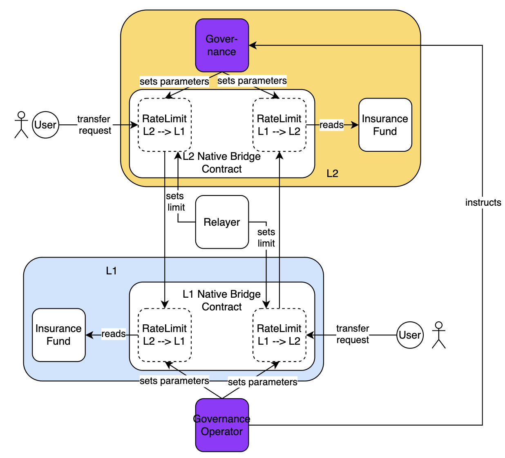

Glossary
Alphabetically ordered list of terms defined through MGs.
**MOVE. → MG-39
**L1MOVE token. → MG-39
**L1MOVE. → MG-39
Native Bridge - The bridge that allows the transfer of tokens between L1 and L2, which hold L2MOVE token, respectively. The native bridge has the capability to mint $L2MOVE tokens. → MG-39
Welcome to the Movement Network MIP Book
Approved
MIPs
- MIP-1: ENTL (Enclave Nonce Time-lock)
- MIP-15: MG (Movement Gloss)
- MIP-39: MOVE Token – HTLC-based Native Bridge Design
- MIP-53: Conventions for Proposing Progressive L2 Models
MDs
- MD-1: Minimize Risk of Compromised Bridge Key without Governance
- MD-3: MCR under Network Partitions and Asynchrony
- MD-15: Movement Glossary
MGs
Review
MIPs
- MIP-13: Suzuka DA Migrations Format
- MIP-18: Stage 0 Upgradeability and Multisigs
- MIP-19: Calculation of gas fees
- MIP-24: Removal of redundant functionality from framework
- MIP-25: Proxy Aptos Framework for Stage 0 governance
- MIP-27: Contract Pipeline
- MIP-28: Naming Conventions for Movement Protocol Design
- MIP-34: Fast Finality Settlement
- MIP-47: Improve Gas fee collection in phases
- MIP-48:
aptos_governancefor Goverened Gas Pool - MIP-49: NB-FFS Governed Fees and Rewards
- MIP-50: Insured Bridge
- MIP-54: The Biarritz Model
- MIP-55: The Bilbao Model
- MIP-57: Informer for the Operation of the HTLC-based Native Bridge
- MIP-58: Lock/Mint-type Native Bridge with trusted Relayer
- MIP-60: Cross-chain bridge architectures
- MIP-61: Relayer for the lock/mint Native Bridge - Algorithm and Bootstrapping
- MIP-69: Bridge Fees
- MIP-71: Informer V1 for the Operation of the Lock/Mint Native Bridge
- MIP-74: Rate limiter for the Lock/Mint-type Native Bridge
MDs
- MD-2: Enclave Crash-resistant Key Management
- MD-4: Long Range Attacks
- MD-4: MCR Offsetting Gas Costs
- MD-6: Suzuka Block Validation
- MD-7: Prevent Suzuka MEV Exploits and Censorship
- MD-13: Suzuka DA Migrations Format
- MD-17: Bridge Fees
- MD-21: Native Bridge with Attesters
- MD-26: User-facing checks
- MD-30: Movement Name Service
- MD-34: Fast Finality Settlement
- MD-38: Provide for Fixed Token Supply when Using Native Bridge and Fast Finality Settlement (FFS)
- MD-49: Movement L2 Gas Fees
- MD-61: Relayer for the Lock/Mint Native Bridge
- MD-69: Bridge fees
- MD-71: Informer service for the Lock/Mint-based Native Bridge
- MD-74: Rate-Limiter for the Lock/Mint-type Native Bridge
Welcome to the Movement Network MIP Book
Approved
MIPs
- MIP-1: ENTL (Enclave Nonce Time-lock)
- MIP-15: MG (Movement Gloss)
- MIP-39: MOVE Token – HTLC-based Native Bridge Design
- MIP-53: Conventions for Proposing Progressive L2 Models
MDs
- MD-1: Minimize Risk of Compromised Bridge Key without Governance
- MD-3: MCR under Network Partitions and Asynchrony
- MD-15: Movement Glossary
MGs
Review
MIPs
- MIP-13: Suzuka DA Migrations Format
- MIP-18: Stage 0 Upgradeability and Multisigs
- MIP-19: Calculation of gas fees
- MIP-24: Removal of redundant functionality from framework
- MIP-25: Proxy Aptos Framework for Stage 0 governance
- MIP-27: Contract Pipeline
- MIP-28: Naming Conventions for Movement Protocol Design
- MIP-34: Fast Finality Settlement
- MIP-47: Improve Gas fee collection in phases
- MIP-48:
aptos_governancefor Goverened Gas Pool - MIP-49: NB-FFS Governed Fees and Rewards
- MIP-50: Insured Bridge
- MIP-54: The Biarritz Model
- MIP-55: The Bilbao Model
- MIP-57: Informer for the Operation of the HTLC-based Native Bridge
- MIP-58: Lock/Mint-type Native Bridge with trusted Relayer
- MIP-60: Cross-chain bridge architectures
- MIP-61: Relayer for the lock/mint Native Bridge - Algorithm and Bootstrapping
- MIP-69: Bridge Fees
- MIP-71: Informer V1 for the Operation of the Lock/Mint Native Bridge
- MIP-74: Rate limiter for the Lock/Mint-type Native Bridge
MDs
- MD-2: Enclave Crash-resistant Key Management
- MD-4: Long Range Attacks
- MD-4: MCR Offsetting Gas Costs
- MD-6: Suzuka Block Validation
- MD-7: Prevent Suzuka MEV Exploits and Censorship
- MD-13: Suzuka DA Migrations Format
- MD-17: Bridge Fees
- MD-21: Native Bridge with Attesters
- MD-26: User-facing checks
- MD-30: Movement Name Service
- MD-34: Fast Finality Settlement
- MD-38: Provide for Fixed Token Supply when Using Native Bridge and Fast Finality Settlement (FFS)
- MD-49: Movement L2 Gas Fees
- MD-61: Relayer for the Lock/Mint Native Bridge
- MD-69: Bridge fees
- MD-71: Informer service for the Lock/Mint-based Native Bridge
- MD-74: Rate-Limiter for the Lock/Mint-type Native Bridge
MIP-1: ENTL (Enclave Nonce Time-lock)
- Description: ENTL proposes a simple challenge-reponse protocol to link Enclave usage to a given program. It additionally proposes a means of time-locking to allow the replacement of said program while maintaining security.
- Authors: Liam Monninger
- Desiderata: MD-1
Abstract
ENTL proposes a simple challenge-response protocol to link Enclave usage to a given program. It additionally proposes a means of time-locking to allow the replacement of said program while maintaining security. This approach is demonstrated to be both generalizable and cryptographically sound.
Motivation
This protocol was originally suggested as a solution to minimizing trust assumptions in the Atomic Bridge under MD-1. However, similar problems were encountered under Movement Labs Governance Stage 0 concerning general key usage.
Specification
The key words “MUST”, “MUST NOT”, “REQUIRED”, “SHALL”, “SHALL NOT”, “SHOULD”, “SHOULD NOT”, “RECOMMENDED”, “NOT RECOMMENDED”, “MAY”, and “OPTIONAL” in this document are to be interpreted as described in RFC 2119 and RFC 8174.
Protocol Description
The protocol is a simple challenge-response scheme performed between two parties: the Enclave, a presumed secure compute unit, and the Client, the program requesting the Enclave’s services.
The following messages types are exchanged between the Enclave and the Client:
- SYN: the Client sends a 256-bit nonce to the Enclave.
- SYN-OK: the Enclave responds indicating it has received and accepted the nonce. This can be sent as a response to either SYN or SYN-CHECK.
- SYN-TL: the Enclave responds indicating it has the received the nonce and subjected it to a time-lock and queuer. The time-lock and place in the queue are provided as response.
- APP: the Client sends an application message to the Enclave, a 256-bit nonce for the current message, and a 256-bit nonce for the next message.
- APP-OK: the Enclave responds indicating it has processed the application message and has updated the nonce for the next message.
- APP-OK-CON: the Enclave responds indicating that it has processed the application message, has updated the nonce for the next message, and has aborted a contentious synchronization attempt.
- APP-REJ: the Enclave responds indicating it has received the application message but is rejecting it and will not update the nonce for the next message.
These messages are exchanged as follows:
Synchronization Phase
- Prior to sending its first application message, the Client generates and safely stores CSPRNG nonce and sends it to the Enclave in a SYN message.
- The Enclave processes the SYN message:
- If enclave does not have a stored nonce, this indicates that no other client has attempted to synchronize with the Enclave. The Enclave MUST accept the nonce, store the nonce, and respond with a SYN-OK message.
- If the Enclave has a record of the nonce, this indicates that another client has attempted to synchronize with the Enclave in the past. It MUST check queue and time-lock conditions:
- If the nonce is at the top of the queue and has passed its time-lock, the Enclave MUST accept, store, and respond with a SYN-OK message.
- If the nonce is not at the top of the queue or has not passed its time-lock, the Enclave MUST respond with a SYN-TL message.
Application Phase
- The Client sends an APP message to the Enclave with the application message and the nonce for the current message and the nonce for the next message.
- The Enclave processes the APP message:
- If the nonce for the current message is the expected nonce, the Enclave MUST process the application message and update the nonce for the next message. It MUST responds with an APP-OK message.
- If the nonce for the current message is not the expected nonce, the Enclave MUST respond with an APP-REJ message.
- If the nonce for the current message is the expected nonce but the Enclave has nonces in its time-lock queue, i.e., from other SYN messages, the Enclave MUST:
- Empty the queue of all other nonces;
- Process the application message;
- Respond with an APP-OK-CON message.
- The Client MUST wait for an APP-OK, APP-REJ, or APP-OK-CON message before sending the next application message.
- If the message is APP-OK or APP-OK-CON, the Client MUST send the next application message with the “next nonce” specified in the previous message.
- If the message is APP-REJ, the Client MUST re-send the application message with the “current nonce” it used in the previous message.
Example Application: Atomic Bridge Service
To demonstrate how this protocol can be used, consider the Atomic Bridge Service.
To minimize trust in MLABSO, an enclave is booted which generates its own signing keys and is prepared to sign transactions to send to bridge contracts. This enclave can additionally be tooled with other application messages handlers to, for example, allow for the replacement of an initial trusted and directly accessible signing key.
Once the enclave has been configured, the MLABSO configures the bridge service software to start signing transactions via ENTL protocol. It synchronizes for a nonce which is immediately accepted as it is the first SYN message. The bridge service then exchanges application messages with the enclave to sign transactions. The bridge service never directly accesses the signing key, only sending application messages to the enclave.
A MLABSO is informed that the bridge service needs to be upgraded. Because the previous bridge service securely stored its nonce (challenges related to this discussed below), the MLABSO will need to rely on the ENTL protocol to run a new synchronization phase. This enforces a time-lock of say 20 minutes before the new bridge service has been synchronized with the enclave and can continue signing transactions.
Now, a malicious MLABSO decides to attempt to abuse the key. She knows she cannot directly access the key. She also knows that she will not be able to use the key until the program has synchronized to a nonce she controls. She deems discovering or replacing the nonce used in the existing program intractable. So, she must stop the service and start a new synchronization phase. This will time-lock the service for 20 minutes. However, in the end, she will have the ability to sign with the key. The MLABSO begins the synchronization phase. However, during this time, a legitimate MLABSO notices that the bridge service is being upgraded (perhaps even that it is down). The legitimate MLABSO then reviews access logs to discover the malicious MLABSO’s actions. The malicious MLABSO and her program are then removed from the system before the new bridge service can be synchronized.
Practical Considerations
In practice, there are several phenomena regarded as external to the ENTL protocol which need to be considered in order to make it safely usable.
Securing the Nonce
In order to avoid the possibility of malicious usage, both the current nonce and the next nonce need to be stored in a manner that is difficult to access except by the current program. We do not intend to impose cryptographically secure requirements on this storage, as that begins to invoke concepts related to the literature on succinct arguments for programs. However, there are several simpler ways that can make accessing the and using the outside nonce difficult.
To describe these, it first helps to consider what enables a nonce attack and to consider the time these operations take.
- The attacker must first obtain the nonce which takes some duration .
- The attacker then must use the nonce to send in an APP message which the Enclave will process. This takes some duration .
- In total, we may say the attack takes some duration .
- Meanwhile, the legitimate Client will have some duration over which the nonce is stored as either the current or next nonce and has not yet been used.
- The period between when the legitimate Client first stores this nonce and when the Enclave would process it is bounded by a time wherein the attacker sends the malicious APP message and .
This model of an attack leads to several prevention strategies:
- High Temporal Resolution: frequently updating the nonce narrows the window in which the attacker can obtain the nonce and use it before the legitimate Client does. If this exceeds, the time to obtain the nonce and send it, i.e., , the attack is impossible. It may thus be ideal for the Client to update the nonce even without a message that corresponds to is APP logic.
- Security via Obscurity: the implication throughout this MIP is that Client stores its nonce in program memory. As program memory is highly-dynamic, particularly on the stack, it would be difficult to identify the location of the nonce in memory, increasing . This is a form of security via obscurity which could be further upgraded by data structures which further randomize the location of the nonce in memory.
- ISA-specific Approaches: there a number of ISA-specific tools which can used to make accessing certain sections of memory very difficult for even though most privileged attackers. Consider reviewing Intel TSX and ARM PAC.
- ENTL Hot Potato and Generalizations: the ENTL protocol can be made bidirectional and two-staged such that the Enclave also synchronizes a nonce with the Client which it expects the Client to echo with the eventual APP message. This could further reduce the time the ultimate nonce is stored in the Client’s memory and increase the time the attacker must spend to obtain and use the nonce. Generalizations and variations of this protocol could use more parties and commit-reveal schemes like Pedersen commitments to further secure the nonce.
Crash Resistance and Recovery
Enclave products such as AWS Nitro Enclaves and Intel SGX-based products generally do not allow backups. This means that if you were to generate keys within an enclave, as suggested above, you may not be able to recover them if the enclave crashes.
Several suggestions are made to resolve this problem in MD-2.
Reference Implementation
Verification
ENTL assumes a valid Client program is one that (1) can provide the correct nonce and (2)
Changelog
Appendix
MIP-15: MG (Movement Gloss)
- Description: Introduces the Movement Gloss (MG) document type and establishes a process for introducing new glossary terms. Introduces the Glossary, which contains an overview of all terms defined through MGs.
- Authors: Liam Monninger
- Reviewer: Andreas Penzkofer
- Desiderata: MD-15
Abstract
This MIP introduces the Movement Gloss (MG) document type and establishes a process for introducing new glossary terms. The MG document type will be used to define terms unique to Movement Labs and to provide specific definitions for terms that are used in a unique way, underspecified in the literature, or have a specific meaning in the context of Movement Labs.
Motivation
In order to communicate with more specificity in all contexts, Movement Labs should introduce a glossary. This glossary should define terms both unique to Movement Labs and general terms that are used in a unique way, underspecified in the literature, or have a specific meaning in the context of Movement Labs.
Specification
The key words “MUST”, “MUST NOT”, “REQUIRED”, “SHALL”, “SHALL NOT”, “SHOULD”, “SHOULD NOT”, “RECOMMENDED”, “NOT RECOMMENDED”, “MAY”, and “OPTIONAL” in this document are to be interpreted as described in RFC 2119 and RFC 8174.
Glossary
The Glossary is an alphabetically ordered list of terms defined through MGs. Any term introduced through an MG MUST be declared in the Glossary.
The Glossary table contains the following columns:
- The Term
- A short definition
- The number of the MG that introduces the term
MG Document Type
A template for the MG is provided at mg-template. An example MG is provided at mg-0. These templates cover the requested elements listed in MD-15.D1.
MG Process
- A new glossary term MUST be defined in an MG document matching the provided templates.
- An MG document MUST not be accepted unless justified in an MIP.
For example, herein, we justify the introduction of MG-0. MG-0 defines the term “gloss” which is used in the context of Movement Labs to denote the definition of a term as would feature as an entry in a glossary. It is important to include in the glossary both clarify as the acronym “MG” and to provide an example gloss.
Reference Implementation
See the MG document type template at mg-template and the example MG at mg-0.
Verification
Changelog
Appendix
MIP-39: MOVE Token – HTLC-based Native Bridge Design
- Description: Architecture of the HTLC-based Native Bridge for \ token.
- Authors: Franck Cassez
Abstract
This MIP describes the high-level architecture of the HTLC-based \ token Native Bridge. The architecture describes the main bridge components and high-level requirements.
Definitions
- Native Bridge: The bridge that allows the transfer of tokens between L1 and L2, which hold $L1MOVE and $L2MOVE token, respectively. The native bridge has the capability to mint $L2MOVE tokens.
- $L1MOVE (or $MOVE) : ERC-20 type token with the source contract on L1
- $L2MOVE : Token that is created on L2 after $L1MOVE token is locked on L1. We also say $L1MOVE is bridged from L1 to L2. $L2MOVE may publicly also be called $MOVE but as this causes confusion, here we stick to $L2MOVE to make clear this token lives on L2.
Motivation
The Movement chain (L2) uses the $L2MOVE token to pay for gas fees. As a result users need to hold $L2MOVE tokens to pay for their transactions.
[!IMPORTANT] The native $L1MOVE token is an ERC-20 contract on Ethereum (L1). By native, we mean that this is the location where the token is minted and burned and where the total supply is set and possibly modified (inflation/deflation). The $L1MOVE token reserve is in the L1 contract.
To use the Movement chain and pay for gas fees, a user will acquire $L1MOVE (native) tokens on L1, and bridge them to L2. On the L2 they can use the token to pay for gas fees or with any other dApps that transact the $L2MOVE token. Later, a user can choose to migrate their $L2MOVE tokens back to the L1 at any time (thereby converting them to $L1MOVE). These cross-chain assets’s transfers are usually done through a component called a bridge.
In this MIP an HTLC-based bridge, which is the current implementation, is discussed which provides trustlessness.
A standard bridge architecture
The process of transferring tokens across different chains is implemented with a bridge (between the chains).
There are several choices for the architecture of a bridge, and we describe here a classical bridge with a lock-mint protocol (see Chainlink’s What Is a Cross-Chain Bridge? for a quick introduction to types of bridges).
[!WARNING]
The transfer of tokens is one-to-one: a user bridges $L1MOVE tokens to L2, and they receive $L2MOVE tokens. Same one-to-one ratio applies from L2 to L1. The bridge does not allow for swapping tokens against other tokens.
Lock-and-Mint. The main idea of the lock-mint protocol is as follows. For the sake of simplicity, assume the two chains (L1 and L2) have only one user and the user has an account l1acc on L1, and another account l2acc on L2. We also assume that each transfer is for one token.
If the user wants to bridge one \ to L2, then
- they lock (one) $L1MOVE into a (escrow) contract
L1InitiatorBridgeon the L1 side. To do so they transfer (one) $L1MOVE froml1accto theL1InitiatorBridgecontract; - once the contract
L1InitiatorBridgereceives the \ it emits a corresponding eventFundReceivedFrom(l1acc)to the L1 (append-only) logs, - a relayer monitors the logs on the L1 side, and when they see the
FundReceived(l1acc)event, they send a transaction to an L2 contract,L2CounterPartyBridgeasking the contract to mint (one) \, - the user requests the transfer of the newly minted \ to their account
l2accon L2.
Burn-and-Unlock. The transfer from L2 to L1 is similar:
- the user transfers (one) \ to the
L2InitiatorBridgecontract. TheL2InitiatorBridgeburns (destroys) the token and emits an eventTokenBurned(l2acc)to the L2 (append-only) logs, - a relayer monitors the L2 logs and when they see the event
TokenBurned(l2acc), they send a transaction to the L1 contractL1CounterPartyBridgeto unlock an \ token for accountl1acc, - the user (on L1) requests transfer of one \ from the
L1CounterPartyBridgeto their account on L1,l1acc.
This protocol can be implemented with three main components:
- two contracts on the L1 side,
- one contract (module) on the L2 (Move) side,
- a relayer.
Hash-time-lock contracts (HTLC)
The proposed native bridge employs Hash-time-lock-contracts (HTLC). HTLC utilizes two main concepts:
- Time Locks: These ensure transactions complete within a set period. Or funds revert to their owners, preventing loss from delays or non-completion.
- Hash Locks: A secret is required to unlock funds, ensuring only participants who fulfill the swap conditions can access the assets.
These two mechanisms guarantee atomicity (complete swap or no swap) and trustlessness (no reliance on the counterparty’s honesty), making the transfer secure for cryptocurrency bridging.
Attacks on bridges
As can be seen the protocol above has distinct phases, and many things can go wrong. For example
- User becomes unable to retrieve funds. The user locks their funds in the L1 contract, but the relayer never issues the minting transaction. In that case the user may never be able to retrieve their funds. What we want is some atomicity between the steps: if the user locks their funds, then either the corresponding minting transaction occurs, or if it does not (and we may set a time bound), the funds are returned to the user on L1.
- Crediting the wrong user. Another source of difficulty is to make sure that only the user
l2acccan redeem the \ tokens. i.e. they are not credited to another user.
Many of the possibly issues have been thoroughly studied and bridges have been in operation for several years. However hacks related to bridges account for more than 1/3 of the total hacks value which tends to indicate that bridges are vulnerable, frequently attacked, and should be designed carefully. Infamous attacks are two Ronin bridge attacks and a Nomad bridge attack
- 2022: Crypto Hackers Exploit Ronin Network for $615 Million
- 2024: Ronin Bridge Paused, Restarted After $12M Drained in Whitehat Hack
- August 2022: Hack Analysis: Nomad Bridge ($192M)
Some solutions XChainWatcher rely on monitoring bridges and detect attacks.
Designing a safe bridge is a hard problem.
Specification
Bridging from L1 to L2
Let user1 be a user with an account on L1, and user2 be a user with an account on L2.
[!NOTE] Simple context (without loss of generality) Assume
user1wants to transfer1\ tokens, we refer to asassetin the sequel, touser2on L2.
Transfer steps
A successful transfer requires the following these steps:
- user1 locks their \ tokens in the
AtomicBridgeInitiatorMOVE.solcontract on L1. The contract emits an eventBridgeTransferPendingto the L1 logs. At this point in time the transfer becomesINITIALIZEDon L1. - A relayer monitors the L1 logs and when they see the
BridgeTransferPendingevent, they send a transaction to theatomic_bridge_counterparty.movemodule on L2 asking the module to prepare the minting of \ tokens. The status of the bridge transfer on L2 becomesPENDING. An eventBridgeTransferLockedis emitted to the L2 logs.
[!TIP] Check point: This is the end of the first phase. Next phase must be triggered by
user2. At that point the bridge transfers details are known by the L1 and the L2.
- user2 (or anybody with the secret) sends a transaction to the
atomic_bridge_counterparty.movemodule on L2 asking to complete the bridge transfer. If the transfer has been properly initialized (step 2 above), this results in minting tokens and transfers the minted tokens to theuser2account. If successful, an eventBridgeTransferCompleteis emitted to the L2 logs. The status of the transfer on L2 becomesCOMPLETED.
[!TIP] Check point: The transfer is completed on L2. At that stage the \ tokens are in the
user2account on L2.
-
The relayer monitors the L2 logs and when they see the
BridgeTransferCompleteevent, they send a transaction to theAtomicBridgeInitiatorMOVE.solcontract on L1 to complete the bridge transfer. This closes the status of the transfer on L1 and the status of the transfer becomesCOMPLETED. An eventBridgeTransferCompleteis emitted to the L1 logs. -
user1can claim a refund on L1 after a certain time,timelock1, has elapsed. This introduces possible concurrent unwanted behaviors, and a timelock has to be set on L2,timelock2, to prevent the relayer from completing the transfer on L2 after the refund has been claimed on L1.
The following diagram (Figure 1) illustrates the steps above:
 Figure 1: Time chart of the bridge protocol from L1 to L2.
Figure 1: Time chart of the bridge protocol from L1 to L2.
[!CAUTION] Fault-tolerance As there can be crashes or delays or network partitions, the protocol should be fault-tolerant to a certain extent. This is done by the use of
timelockson the L1 and L2 sides that restrict the operations above to occur within bounded time windows.
In order to ensure that the funds can only be transferred from user1 to user2, user1 locks (step 1. init_bridge_transfer()) the funds with a secret.
To unlock the funds on L2, user2 needs to prove they know the secret when they request the funds on L2 (step 3. complete_bridge_transfer()).
[!IMPORTANT]
Requirements for the bridge protocol The desired properties of the bridge protocol (L1 to L2) are atomicity and liveness:
- [safety-1]
user1SHOULD be able to initiate a transfer at any time.- [safety-2]
user1MUST NOT be able to get a refund if the transfer has been completed on L2 anduser2has the funds on L2.- [liveness-1] if the relayer is live and relays all events within a bounded time,
user1SHOULD be able to complete the transfer on L2 and get the asset on L2.- [liveness-2] if the transfer has not been completed by the L2 within a time window
timelock1sinceuser1initiated the transfer,user1MUST be able to get a refund on L1.
As can be seen in the diagram above, the safety of the bridge may depend on:
- the relayer being live and relaying all events within a bounded time,
- the timelocks’ values being set correctly.
For instance if timeLock2 is larger than timeLock1, the following scenario can happen:
- the
complete_bridge_transfer()tx completes on L2 and funds are transferred tousers2, - the relayer does not relay the event
BridgeTransferCompleted!fast enough, user1on L1 asks for a refund,request_refund(), which is successful and gets the asset back.
The correctness of the implementation depends on the timelocks’ values and is addressed in the Verification section below.
Security & Permissions
Contracts’s APIs:
| Layer | Function Name | Permission | #Event |
|---|---|---|---|
| L1 | init_bridge_transfer() | User1 | BridgeTransferPending |
| L1 | request_refund() | User1 | BridgeTransferRefunded |
| L1 | complete_bridge_transfer() | Relayer | BridgeTransferCompleted |
| L2 | lock_bridge_asset_transfer() | Relayer | BridgeTransferLocked |
| L2 | complete_bridge_transfer() | User2 | BridgeTransferCompleted |
| L2 | abort_bridge_transfer() | Relayer | BridgeTransferAborted |
The permissions are set to ensure that only the user who initiated the transfer can request a refund, and only the relayer can complete the transfer on L2.
Other safety considerations include the use of EIP-55 (L1 side) checksums for addresses. There is some code implemented in the L2 Move contract [ethereum_module](https://github.com/movementlabsxyz/aptos-core/blob/061155119258caab512aec6aa860b086e5f312e0/aptos-move/framework/aptos-framework/sources/atomic_bridge.move#L1 to check EIP-55 compliance so we may enforce EIP-55 compliance at some stage.
Bridging from L2 to L1
Transfer steps
A successful transfer from L2 to L1 requires the following these steps:
- user2 burns their \ tokens in the
atoic_bridge_initiator.movecontract on L2. The contract emits an eventBridgeTransferInitiatedto the L2 logs. At this point in time the transfer becomesINITIALIZED(or pending) on L2. - A relayer monitors the L2 logs and when they see the
BridgeTransferInitiatedevent, they send a transaction to theAtomicBridgeCounperPartyMOVE.solcontract on L1 asking the module to prepare to unlock \ tokens. The status of the bridge transfer on L1 becomesPENDING. An eventBridgeTransferLockedis emitted to the L1 logs.
[!TIP] Check point. `user2’ does not have the asset on L2 anymore. At that point the bridge transfers details are known by the L1 and the L2.
- user1 (or anybody with the secret) sends a transaction to the
AtomicBridgeCounterParty.solcontract on L1 asking to complete the bridge transfer. If the transfer has been properly initialized (step 2 above), this results in transferring \ tokens to theuser1account. If successful, an eventBridgeTransferCompletedis emitted to the L1 logs. The status of the transfer on L1 becomesCOMPLETED.
[!TIP] Check point.
User1has the asset on L1. At that stage the \ tokens are in theuser1account on L1.
-
The relayer monitors the L1 logs and when they see the
BridgeTransferCompletedevent, they send a transaction to theatomic_bridge_initiator.movemodule on L2 to complete the bridge transfer. This closes the status of the transfer on L2 and the status of the transfer becomesCOMPLETED. An eventBridgeTransferCompletedis emitted to the L2 logs. -
user2can claim a refund on L1 after a certain time,timelock2, has elapsed. This introduces possible concurrent unwanted behaviors, and a timelock has to be set on L2,timelock2, to prevent the relayer from completing the transfer on L1 after the refund has been claimed on L2.
The following diagram (Figure 1) illustrates the steps above:
Figure 2: Time chart of the bridge protocol from L2 to L1.
Security & Permissions
Contracts’s APIs:
| Layer | Function Name | Permission | #Event |
|---|---|---|---|
| L2 | initiate_bridge_transfer() | User2 | BridgeTransferPending |
| L2 | request_refund() | User2 | BridgeTransferRefunded |
| L2 | complete_bridge_transfer() | Relayer | BridgeTransferCompleted |
| L1 | lock_bridge_transfer() | Relayer | BridgeTransferLocked |
| L1 | complete_bridge_transfer() | User1 | BridgeTransferCompleted |
| L1 | request_refund() | User2 | BridgeTransferRefunded |
The permissions are set to ensure that only the user who initiated the transfer can request a refund, and only the relayer can complete the transfer on L1.
The key words “MUST”, “MUST NOT”, “REQUIRED”, “SHALL”, “SHALL NOT”, “SHOULD”, “SHOULD NOT”, “RECOMMENDED”, “NOT RECOMMENDED”, “MAY”, and “OPTIONAL” in this document are to be interpreted as described in RFC 2119 and RFC 8174.
Reference Implementation
Bridging from L1 to L2
The contracts involved are:
- Solidity contract AtomicBridgeInitiatorMOVE.sol on L1.
- Move Module atomic_bridge_counterparty.move on L2.
The current implementation is a lock-mint bridge. The user locks their $L1MOVE tokens in the AtomicBridgeInitiatorMOVE contract, and the atomic_bridge_counterparty.move module mints the corresponding $L2MOVE tokens.
Bridging from L2 to L1
The contracts involved are:
- Solidity contract AtomicBridgeCounterPartyMOVE.sol on L1,
- module atomic_bridge_initiator.move on L2.
Relayer and Services
The (Rust) relayer logics are in service folder.
[!WARNING] If the value of the parameter
timeLockL2is larger thantimeLockL1, the following scenario can happen:
- the
completeBridgeTransfertx completes on L2 and funds are transferred to the target address on L2,- the relayer does not relay the event fast enough,
- the user on L1 asks for a refund, and the
refundtx is executed on L1.
User gets funds on L2, and gets their fund back on L1.
Verification
Bridge L1 to L2
The correctness of the bridge operation from L1 to L2 depends on several factors:
- the timelocks’ values,
- the control of the keys to operate the bridge,
- the verification of the
secret.
We assume that the keys are not compromised, and that the logics in the contracts ensure that the secret user1 uses is requested by the complete_bridge_transfer tx on L2. This can tested on L1 (Solidity) and formally verified on L2 (Move and Move Prover).
In this section we focus on the timelocks’ values, as this involves a sequence of operations on L1 and L2. We model the bridge transactions (L1 to L2) and the transfers of assets with a network of timed automata. The safety and liveness properties are defined by temporal logics formulas and can be verified with model-checking tools such as UPPAAL.
The UPPAAL model is available in this-file. To reproduce the results and check the properties on the model, you need a working version of UPPAAL.
The results of the model-checking verification are as follows: let $maxRelayerDelay $ be the maximum delay for the relayer to relay an event, and $timeLock1$ and $timeLock2$ be the timelocks on L1 and L2 respectively.
[!IMPORTANT] Verification results We have proved (model-checked with UPPAAL) the following properties (valid using the versions of the contracts below):
- contract (Move): atomic_bridge.move, commit c1ecd0a
- contracts (Solidity): AtomicBridgeInitiatorMOVE.sol and AtomicBridgeCounterpartyMOVE.sol in this commit 200c9f9
- [safety-1]: there exists an execution path such that
user1initiates and completes a transfer on L2 within a time window $timeLock1$,- [safety-2]: Provided the relayer relays the events within a time window $maxRelayerDelay$, AND $timelock1 > timelock2 + 2 \times maxRelayerDelay$,
user1cannot get a refund on L1 if the transfer has been completed on L2,- [liveness-1] if the relayer is not down,
user2can get the funds on L2, after $timelock1 + 2 * maxRelayerDelay$ time units.- [liveness-2] if the transfer is not successful on L2 within $timelock1$,
user1can get a refund on L1 (after $timelock1$ time units).
Note that [safety-2] does hold if the relayer is down for more than $maxRelayerDelay$, or the timelocks are not set correctly.
Bridge L2 to L1
The only difference between L1 to L2 is the way assets are created/destroyed. However, the formal model abstracts away this difference and the same properties hold for the L2 to L1 bridge.
Changelog
Appendix
The UPPAAL models of the L1 to L2 transfers are available in the uppaal-models directory. The simplest model is bridge-up-v2.xml and the more complex model is bridge-up-v3.xml with probabilities.
You can request a license to use UPPAAL at UPPAAL.
Copyright
Copyright and related rights waived via CC0.
MIP-53: Conventions for Proposing Progressive L2 Models
- Description: Introduces conventions for proposing progressive L2 models.
- Authors: Liam Monninger
- Reviewer: Andreas Penzkofer
- Desiderata:
Abstract
Movement’s L2 system will progress through various changes during its life, and each stage is presented through a new L2 model (which we call progressive L2 model). Thus a given progressive L2 model describes as a particular stage in the evolution of the L2 system. A given progressive L2 model stage is defined through the sum of its improvements and it may encompass components that are not directly related to each other.
We propose a set of conventions including naming, formatting, and related standards to assist reviewing proposals for said models. Finally a collection point of these terms to provide an overview
Motivation
In order to facilitate the development of L2 systems, it is important to have a clear and consistent way to propose and review models for these systems. This MIP aims to provide a set of conventions for proposing progressive L2 models that will help to ensure that proposals are clear, consistent, and easy to review.
Specification
Progressive L2 models should adhere to conventions of the following forms:
- naming: apply a standard naming format.
- acknowledgement of standards: acknowledge the conventions of this MIP.
- summary table: a table succinctly noting key features of the model.
- statement towards progression: a statement of how the model suits a progressive approach to L2 design and release.
- pros and cons: a list of pros and cons.
Naming
All proposed progressive L2 models MUST adopt a name of the form “The [Location] Model” where [Location] is a location where the proposal was drafted or a similarly symbolic location. This name should be the title of the associated MIP.
In text, the model SHOULD be referred to as “[Location] Model,” that is, the name of the model in title case.
Acknowledgement of Standards
At the start of the “Specification” section of the MIP, the author MUST include the following markdown snippet:
We acknowledge and apply the conventions of [MIP-53: Conventions for Proposing Progressive L2 Models](../mip-53/).
Summary Table
All proposed progressive L2 models MUST complete the following table:
| Category | Criterion | Evaluation |
|---|---|---|
| General | ||
| X | When to use | A brief general description of the circumstances under which the model is appropriate. |
| X | Suitable preceding models | A list of models or descriptions of models that are suitable precursors to this model. |
| X | Suitable succeeding models | A list of models or descriptions of models that are suitable successors to this model. |
| X | Technological motivations | A brief description of the technological motivations for using the model. |
| X | Usership motivations | A brief description of the user motivations for using the model. |
| Components | ||
| X | Component Name 1 | A description of usage of said component. |
| X | Component Name 2 | A description of usage of said component. |
Statement Towards Progression
All proposed progressive L2 models MUST include a statement of how the model suits a progressive approach to L2 design and release. This statement SHOULD be a paragraph in length and immediately follow the summary table–as if it were a caption for the table.
Pros and Cons
All proposed progressive L2 models MUST include a list of pros and cons. This list SHOULD be formatted as two separate bulleted lists in subsections titled “Pros” and “Cons.”
Verification
Changelog
Appendix
Welcome to the Movement Network MIP Book
Approved
MIPs
- MIP-1: ENTL (Enclave Nonce Time-lock)
- MIP-15: MG (Movement Gloss)
- MIP-39: MOVE Token – HTLC-based Native Bridge Design
- MIP-53: Conventions for Proposing Progressive L2 Models
MDs
- MD-1: Minimize Risk of Compromised Bridge Key without Governance
- MD-3: MCR under Network Partitions and Asynchrony
- MD-15: Movement Glossary
MGs
Review
MIPs
- MIP-13: Suzuka DA Migrations Format
- MIP-18: Stage 0 Upgradeability and Multisigs
- MIP-19: Calculation of gas fees
- MIP-24: Removal of redundant functionality from framework
- MIP-25: Proxy Aptos Framework for Stage 0 governance
- MIP-27: Contract Pipeline
- MIP-28: Naming Conventions for Movement Protocol Design
- MIP-34: Fast Finality Settlement
- MIP-47: Improve Gas fee collection in phases
- MIP-48:
aptos_governancefor Goverened Gas Pool - MIP-49: NB-FFS Governed Fees and Rewards
- MIP-50: Insured Bridge
- MIP-54: The Biarritz Model
- MIP-55: The Bilbao Model
- MIP-57: Informer for the Operation of the HTLC-based Native Bridge
- MIP-58: Lock/Mint-type Native Bridge with trusted Relayer
- MIP-60: Cross-chain bridge architectures
- MIP-61: Relayer for the lock/mint Native Bridge - Algorithm and Bootstrapping
- MIP-69: Bridge Fees
- MIP-71: Informer V1 for the Operation of the Lock/Mint Native Bridge
- MIP-74: Rate limiter for the Lock/Mint-type Native Bridge
MDs
- MD-2: Enclave Crash-resistant Key Management
- MD-4: Long Range Attacks
- MD-4: MCR Offsetting Gas Costs
- MD-6: Suzuka Block Validation
- MD-7: Prevent Suzuka MEV Exploits and Censorship
- MD-13: Suzuka DA Migrations Format
- MD-17: Bridge Fees
- MD-21: Native Bridge with Attesters
- MD-26: User-facing checks
- MD-30: Movement Name Service
- MD-34: Fast Finality Settlement
- MD-38: Provide for Fixed Token Supply when Using Native Bridge and Fast Finality Settlement (FFS)
- MD-49: Movement L2 Gas Fees
- MD-61: Relayer for the Lock/Mint Native Bridge
- MD-69: Bridge fees
- MD-71: Informer service for the Lock/Mint-based Native Bridge
- MD-74: Rate-Limiter for the Lock/Mint-type Native Bridge
MD-1: Minimize Risk of Compromised Bridge Key without Governance
- Description: Provide a mechanism to minimize the risk of a compromised bridge key without relying on governance.
- Authors: Liam Monninger
Overview
The Atomic Bridge service relies on trusted keys for relaying events between chains. Without governance or multisig contracts, the risk entailed by a compromised bridge key is significant. Even with logic safeguarding against direct mint operations, fraudulent events on either chain can still be synthesized.
The desiderata herein recognize standard governance as generally the best means of managing these kinds of risks in general. Specialized contracts can be used to accumulate votes and make it difficult for a single actor to compromise bridge security.
However, in the case of bridging, inactive or unreliable governance can be a significant risk as well. In effect, the changes represented by the in-flight message represent those already agreed upon by the destination chain’s governance. These are then subject to a smaller, potentially less-secure governance process before being relayed to the destination chain. The risk of DOS attacks on this governance process is thus high.
Until a robust design for relaying bridge messages based on votes is attained, bridge trust assumptions are offset by a presumed trustworthy bridge signing service which uses known keys that would be controlled by Movement Labs.
This desiderata requests a means to minimize the risk of a compromised bridge key without relying on on-chain governance.
Desiderata
D1: Minimize Direct Access to Bridge Keys while Maintaining Use
User Journey: Movement Labs Atomic Bridge Service Operators (MLABSO) can run the service with appropriate signing keys without direct access to said keys.
Justification: Without direct access to the keys, MLABSO are forced to use a more secure mechanism for signing messages which can be more easily secured audited such as an HSM or enclave.
D2: Only Allow Attested Usage of Bridge Keys
User Journey: Only attested software can use bridge keys.
Justification: Even without direct access to the keys, MLABSO could still abuse bridge keys by abusing their access to the secure signing mechanism. Enforcing attestation of software using the keys can help mitigate this risk.
D3: Time-Lock Key Usage
User Journey: MLABSO can only reliably replace software using a key in a time-locked manner.
Justification: The software using a given key may require updates or replacement. Time-locking can allow this to occur without diminishing the benefits of attestations.
Errata
MD-3: MCR under Network Partitions and Asynchrony
- Description: Provide a model for MCR and suggest a mechanism for handling network partitions and asynchrony.
- Authors: Liam Monninger
Overview
MCR provides a stake-based settlement mechanism used in Movement Lab’s Suzuka Network. In it’s current form, it does not take any steps to account for network partitions or, more generally, asynchrony.
Henceforth, we will simply refer to network partitions, as all forms of asynchrony with which we are concerned can be modeled as such. Even if a node is not technically offline, the remainder of this disiderata will be concerned with the case in which it is not able to commit meaningfully to the current block height.
It is important to account for network partitions in a manner consistent with the game theory of MCR. In the current implementation, a simple race is run to of the network’s stake. Currently, there is no model for slashing or rewarding. So, not participating in that race to of the network’s stake is not a meaningfully punished. Presuming there would be a reward for participating, this may create an incentive to run an unreliable node which may often fail to commit to the current block height.
The same condition could also be seen as an attack vector if rewards and punishments were in place. A malicious actor could aim to partition the network via generating conditions for fast commitment amongst certain nodes–perhaps via something similar to the Peer Attack described in RFC-29. This would allow their stake to increase via rewards while the targeted minority stake would be slashed. The attacker may be able to keep apply this attack until they have a majority of stake.
These and other phenomena are listed in the desiderata below.
Desiderata
D1: Model for Network Partitions as Absent Commitments to MCR
User Journey: A researcher or protocol implementer can refer to a formal model for network partitions in MCR, ultimately deriving from it the logic necessary to implement slashing and rewarding.
Justification: Network partitions effectively result in absent commitments to the current block height. While not changing the stake needing to agree on the current height, the slashing or rewarding based on this absent commitment should be expected to impact behavior in the repeated game of MCR.
Recommendations:
- A simple way to approach would be to model the value of a node’s commitment or absenteeism to honest-agreeing, honest-disagreeing, dishonest-agreeing, and dishonest-disagreeing participants. This could then be adapted into a more complex model with shifting preferences.
- The literature on absenteeism in repeated games is generally a bit sparse and particularly so–on first review–for topics in computer science.
D2: Research and Design for Commitment Tolerance Window
User Journey: A researcher or protocol implementer can understand why or why not a commitment tolerance window is necessary for MCR and why a particular design for this window was chosen.
Justification: It has been proposed that a commitment tolerance window would soften network partitions. That is, allowing participants to receive a reward or penalty after the needed stake has committed to the current block height could prevent the kind kind of stake drift and attacks described above.
Recommendations:
- Consider the following parameters for the commitment tolerance window:
- Reward decay: the function describing the diminishing returns of rewards later in the window.
- Penalty decay: the function describing the increasing returns of penalties later in the window.
- Vote decay: the function describing the diminishing returns of votes later in the window. This would only be useful if previous rounds of voting are considered in the current round.
D3: Address Asynchronous Upgrades, Fork Creation, and Fork Stake Problems
User Journey: A researcher or protocol implementer can understand the Asynchronous Upgrades, Fork Creation, and Fork Stake Problems and how they are addressed in MCR.
Justification: These are problems encountered under asynchrony and systems addressing asynchrony which if not addressed would bring down the network.
Recommendations:
- Start by reviewing the Asynchronous Upgrades, Fork Creation, and Fork Stake Problems.
MD-15: Movement Glossary
- Description: Provide a glossary for Movement Vocabulary.
- Authors: Liam Monninger
- Reviewer: Andreas Penzkofer
Overview
In order to communicate with more specificity in all contexts, Movement Labs should introduce a glossary. This glossary should define terms both unique to Movement Labs and general terms that are used in a unique way, underspecified in the literature, or have a specific meaning in the context of Movement Labs.
Desiderata
D1: Have a Common Format for a Glossary Entry (Gloss)
Justification: A common format for glossary entries will make it easier to maintain and update the glossary.
Recommendations:
- Create a new formatted document for glossary entries in the MIP repository. Call this document an MG, short for Movement Gloss.
- Include sections for (1) term, (2) authorship, (3) concise definition, (4) catalog of references to definitions or usages of the term in other contexts, (5) example usages, and (6) errata.
- Encourage formalism where applicable.
D2: Introduce Glossary Terms via an MIP
Justification: Introducing glossary terms via an MIP will allow for a more formal process for introducing new terms.
Recommendations:
- MD can also introduce MG to further aid in clarity, but they will not be ratified until they have been supported in an MIP.
Changelog
Welcome to the Movement Network MIP Book
Approved
MIPs
- MIP-1: ENTL (Enclave Nonce Time-lock)
- MIP-15: MG (Movement Gloss)
- MIP-39: MOVE Token – HTLC-based Native Bridge Design
- MIP-53: Conventions for Proposing Progressive L2 Models
MDs
- MD-1: Minimize Risk of Compromised Bridge Key without Governance
- MD-3: MCR under Network Partitions and Asynchrony
- MD-15: Movement Glossary
MGs
Review
MIPs
- MIP-13: Suzuka DA Migrations Format
- MIP-18: Stage 0 Upgradeability and Multisigs
- MIP-19: Calculation of gas fees
- MIP-24: Removal of redundant functionality from framework
- MIP-25: Proxy Aptos Framework for Stage 0 governance
- MIP-27: Contract Pipeline
- MIP-28: Naming Conventions for Movement Protocol Design
- MIP-34: Fast Finality Settlement
- MIP-47: Improve Gas fee collection in phases
- MIP-48:
aptos_governancefor Goverened Gas Pool - MIP-49: NB-FFS Governed Fees and Rewards
- MIP-50: Insured Bridge
- MIP-54: The Biarritz Model
- MIP-55: The Bilbao Model
- MIP-57: Informer for the Operation of the HTLC-based Native Bridge
- MIP-58: Lock/Mint-type Native Bridge with trusted Relayer
- MIP-60: Cross-chain bridge architectures
- MIP-61: Relayer for the lock/mint Native Bridge - Algorithm and Bootstrapping
- MIP-69: Bridge Fees
- MIP-71: Informer V1 for the Operation of the Lock/Mint Native Bridge
- MIP-74: Rate limiter for the Lock/Mint-type Native Bridge
MDs
- MD-2: Enclave Crash-resistant Key Management
- MD-4: Long Range Attacks
- MD-4: MCR Offsetting Gas Costs
- MD-6: Suzuka Block Validation
- MD-7: Prevent Suzuka MEV Exploits and Censorship
- MD-13: Suzuka DA Migrations Format
- MD-17: Bridge Fees
- MD-21: Native Bridge with Attesters
- MD-26: User-facing checks
- MD-30: Movement Name Service
- MD-34: Fast Finality Settlement
- MD-38: Provide for Fixed Token Supply when Using Native Bridge and Fast Finality Settlement (FFS)
- MD-49: Movement L2 Gas Fees
- MD-61: Relayer for the Lock/Mint Native Bridge
- MD-69: Bridge fees
- MD-71: Informer service for the Lock/Mint-based Native Bridge
- MD-74: Rate-Limiter for the Lock/Mint-type Native Bridge
MG-39: MOVE Token – Bridge Design
- Authors: Franck Cassez
\$MOVE
see MIP-39
\$L1MOVE
see MIP-39
\$L2MOVE
see MIP-39
Native Bridge
see MIP-39
Welcome to the Movement Network MIP Book
Approved
MIPs
- MIP-1: ENTL (Enclave Nonce Time-lock)
- MIP-15: MG (Movement Gloss)
- MIP-39: MOVE Token – HTLC-based Native Bridge Design
- MIP-53: Conventions for Proposing Progressive L2 Models
MDs
- MD-1: Minimize Risk of Compromised Bridge Key without Governance
- MD-3: MCR under Network Partitions and Asynchrony
- MD-15: Movement Glossary
MGs
Review
MIPs
- MIP-13: Suzuka DA Migrations Format
- MIP-18: Stage 0 Upgradeability and Multisigs
- MIP-19: Calculation of gas fees
- MIP-24: Removal of redundant functionality from framework
- MIP-25: Proxy Aptos Framework for Stage 0 governance
- MIP-27: Contract Pipeline
- MIP-28: Naming Conventions for Movement Protocol Design
- MIP-34: Fast Finality Settlement
- MIP-47: Improve Gas fee collection in phases
- MIP-48:
aptos_governancefor Goverened Gas Pool - MIP-49: NB-FFS Governed Fees and Rewards
- MIP-50: Insured Bridge
- MIP-54: The Biarritz Model
- MIP-55: The Bilbao Model
- MIP-57: Informer for the Operation of the HTLC-based Native Bridge
- MIP-58: Lock/Mint-type Native Bridge with trusted Relayer
- MIP-60: Cross-chain bridge architectures
- MIP-61: Relayer for the lock/mint Native Bridge - Algorithm and Bootstrapping
- MIP-69: Bridge Fees
- MIP-71: Informer V1 for the Operation of the Lock/Mint Native Bridge
- MIP-74: Rate limiter for the Lock/Mint-type Native Bridge
MDs
- MD-2: Enclave Crash-resistant Key Management
- MD-4: Long Range Attacks
- MD-4: MCR Offsetting Gas Costs
- MD-6: Suzuka Block Validation
- MD-7: Prevent Suzuka MEV Exploits and Censorship
- MD-13: Suzuka DA Migrations Format
- MD-17: Bridge Fees
- MD-21: Native Bridge with Attesters
- MD-26: User-facing checks
- MD-30: Movement Name Service
- MD-34: Fast Finality Settlement
- MD-38: Provide for Fixed Token Supply when Using Native Bridge and Fast Finality Settlement (FFS)
- MD-49: Movement L2 Gas Fees
- MD-61: Relayer for the Lock/Mint Native Bridge
- MD-69: Bridge fees
- MD-71: Informer service for the Lock/Mint-based Native Bridge
- MD-74: Rate-Limiter for the Lock/Mint-type Native Bridge
Welcome to the Movement Network MIP Book
Approved
MIPs
- MIP-1: ENTL (Enclave Nonce Time-lock)
- MIP-15: MG (Movement Gloss)
- MIP-39: MOVE Token – HTLC-based Native Bridge Design
- MIP-53: Conventions for Proposing Progressive L2 Models
MDs
- MD-1: Minimize Risk of Compromised Bridge Key without Governance
- MD-3: MCR under Network Partitions and Asynchrony
- MD-15: Movement Glossary
MGs
Review
MIPs
- MIP-13: Suzuka DA Migrations Format
- MIP-18: Stage 0 Upgradeability and Multisigs
- MIP-19: Calculation of gas fees
- MIP-24: Removal of redundant functionality from framework
- MIP-25: Proxy Aptos Framework for Stage 0 governance
- MIP-27: Contract Pipeline
- MIP-28: Naming Conventions for Movement Protocol Design
- MIP-34: Fast Finality Settlement
- MIP-47: Improve Gas fee collection in phases
- MIP-48:
aptos_governancefor Goverened Gas Pool - MIP-49: NB-FFS Governed Fees and Rewards
- MIP-50: Insured Bridge
- MIP-54: The Biarritz Model
- MIP-55: The Bilbao Model
- MIP-57: Informer for the Operation of the HTLC-based Native Bridge
- MIP-58: Lock/Mint-type Native Bridge with trusted Relayer
- MIP-60: Cross-chain bridge architectures
- MIP-61: Relayer for the lock/mint Native Bridge - Algorithm and Bootstrapping
- MIP-69: Bridge Fees
- MIP-71: Informer V1 for the Operation of the Lock/Mint Native Bridge
- MIP-74: Rate limiter for the Lock/Mint-type Native Bridge
MDs
- MD-2: Enclave Crash-resistant Key Management
- MD-4: Long Range Attacks
- MD-4: MCR Offsetting Gas Costs
- MD-6: Suzuka Block Validation
- MD-7: Prevent Suzuka MEV Exploits and Censorship
- MD-13: Suzuka DA Migrations Format
- MD-17: Bridge Fees
- MD-21: Native Bridge with Attesters
- MD-26: User-facing checks
- MD-30: Movement Name Service
- MD-34: Fast Finality Settlement
- MD-38: Provide for Fixed Token Supply when Using Native Bridge and Fast Finality Settlement (FFS)
- MD-49: Movement L2 Gas Fees
- MD-61: Relayer for the Lock/Mint Native Bridge
- MD-69: Bridge fees
- MD-71: Informer service for the Lock/Mint-based Native Bridge
- MD-74: Rate-Limiter for the Lock/Mint-type Native Bridge
MIP-13: Suzuka DA Migrations Format
- Description: Data format which describes migrations of the canonical state of the DA over time.
- Authors: Mikhail Zabaluev
- Desiderata: MD-13
Abstract
The format of a well-known file defining migrations of the DA blob format enacted on specified block heights. This would be a hardfork or coordinated approach (TODO: clarify terminology) to upgrades, in that each node participating in the network SHOULD be deployed with an up to date copy of the file describing the migrations up to and above the current block height.
Motivation
In order to allow for safe upgrades, data model changes, and DA migrations, it has been proposed that we provide a data format which describes the canonical state of the DA over time.
Specification
The key words “MUST”, “MUST NOT”, “REQUIRED”, “SHALL”, “SHALL NOT”, “SHOULD”, “SHOULD NOT”, “RECOMMENDED”, “NOT RECOMMENDED”, “MAY”, and “OPTIONAL” in this document are to be interpreted as described in RFC 2119 and RFC 8174.
DA Migration Configuration Format
The format of a well-known file defining migrations is a JSON serialization of a map where keys indicate the block height at which the configuration in the value starts applying. The values are objects with named fields specifying the format settings. The top-level configuration envelope specifies the current version of the format to permit breaking changes in the future.
{
"version": 1,
"migrations": {
"123456": {
"namespace": "deadbeef01234567890",
"transaction_format": 1,
"block_format": 2,
"ordering_rule": 3,
"node_version": "1.2"
}
}
}
the Rust definition of the value struct:
#[derive(Serialize, Deserialize)]
pub struct DASettings {
namespace: Namespace,
transaction_format: TransactionFormatVersion,
block_format: BlockFormatVersion,
ordering_rule: OrderingRuleVersion,
node_version: NodeVersionReq,
}Here, Namespace is the data type representing a Celestia namespace ID with the
human-readable serialization as a hex string.
The *Version types are enums initially defined with a single V1 member each.
NodeVersionReq serializes into a SemVer-conforming version specification in the
MAJOR.MINOR format.
Principles of managing migrations
Each new entry in the migration table SHALL use a unique Celestia namespace identifier to prevent confusion and detect accidental misconfiguration early.
The configuration in all nodes in the network SHOULD be updated well in advance of the block height at which a new change is introduced. The expected process in governance stage 0 is a coordinated upgrade.
The node_version field gives the semver minimum version of the Suzuka full node software that is
REQUIRED to use these settings. A node that does not satisfy the version requirement for any of the
encountered entries MUST reject the configuration and report an error.
The producers and consumers of DA blobs MUST implement all versions encountered in the configuration file and apply the settings accordingly to the block height of the data blobs. No mixing of different DA formats between blobs submitted by correct nodes for the same block height is supported by this specification.
Future evolution of the DA migration configuration format
New fields can be added to the DASettings structures in future revisions
of this specifications without changing the value of the top-level
version field. Implementations SHALL ignore the fields not defined in
the revision of the specification they support. If interpretation of such newly
added field values in a specific migration requires behavior not supported
by older versions of the node software, this SHOULD be communicated to
non-compliant nodes with the compatibility requirement in the node_version
field.
Any values of known fields of DASettings that are not supported by the current
implementation SHALL result in rejecting the configuration and reporting an error.
The implementation MAY check the compatibility requirement given by node_version
before reporting errors on unsupported values.
Reference Implementation
Verification
Needs discussion.
Errata
Appendix
Copyright
MIP-18: Stage 0 Upgradeability and Multisigs
- Description: Proposal to establish two multisigs, one for engineers and another for the foundation, to facilitate the deployment and upgrade of the Movement Token (MOVEToken) and other upgradeable contracts.
- Authors: Primata
- Desiderata:
Abstract
MIP-18 advocates for the creation of two multisigs: one managed by Core Contributors engineers to propose contract upgrades and another managed by the Movement Foundation to execute them. This proposal enables testing of multisig services while ensuring secure and transparent upgrade processes for the Movement Token. The multisigs will be deployed on Ethereum, Sepolia, and Holesky (if available) networks.
Motivation
There is an immediate need to deploy the Movement Token (MOVEToken) using a robust, secure, and auditable upgrade mechanism. By creating two multisigs—one for proposal and one for execution—we ensure a transparent and decentralized governance process over upgrades to critical contracts.
The first multisig allows Core Contributors engineers to propose upgrades via Safe’s multisig service. A remote key will automate the population of upgrade proposals. The second multisig, held by the Movement Foundation, will be responsible for executing the scheduled upgrades after a time delay, ensuring community trust and review.
Also, while developing an independent multisig, handling signature showed to be an issue that might be indicative of better letting signature to be handled by safe.global.
Specification
Multisig Setup
-
Core Contributors Multisig (4/5 signatures required):
- Role: Proposing upgrades.
- Addresses: [redacted], sep:0x493516F6dB02c9b7f649E650c5de244646022Aa0.
- Justification: We leave some wiggle room incase one of the engineers is away. We still need 3/4 engineers to sign.
-
Movement Foundation Multisig (3/5 signatures required, triggerable after 2-day timelock):
- Role: Executing upgrades.
- Addresses: [redacted], sep:0x00db70A9e12537495C359581b7b3Bc3a69379A00.
-
Deployer Multisig (1/2 signatures required):
- Role: Deploy contracts.
- Addresses: [redacted].
Both multisigs are part of a timelock mechanism to enforce a 2-day waiting period between the proposal and execution of upgrades. The engineers’ multisig schedules the upgrade, while the foundation multisig executes it after the timelock expires.
Workflow
-
Deployment:
- The Contract Pipeline deploys a new contract implementation and generates transaction data for the upgrade.
-
Proposal:
- The remote key automates the submission of a transaction proposal using SafeKit API’s
proposeTransaction, populating the transaction for review by Core Contributors engineers. - The proposal includes the transaction for
timelock.schedule(proxyAdmin.upgradeAndCall(newContractImplementation)).
- The remote key automates the submission of a transaction proposal using SafeKit API’s
-
Approval:
- The Core Contributors engineers review and gather 4/5 signatures to approve the proposal.
- Once approved, the
timelock.scheduletransaction is enacted, holding the upgrade in a 2-day timelock.
-
Execution:
- After the timelock period, the Movement Foundation multisig gathers 3/5 signatures to execute the upgrade.
- This triggers the
timelock.executetransaction, allowing the upgrade to be applied to the ProxyAdmin, which will perform the contract upgrade.
Multisig Security Considerations
- Believe it is best practice to rely on a service that is fully dedicated to multisigs. Eventual exploits found might open us up to exploits while safe.global could’ve prevent the exploit for us.
- Having full control of our multisig deployments is dangerous and more engineering debt.
- Having manual verification might stop us from automating a exploit that we did not notice.
- Both multisigs serve as a dual signing authorities, ensuring a strict separation between proposing and executing transactions.
- The timelock ensures a sufficient review window for all parties, with the ability for either multisig to cancel the transaction during the delay period.
- Multisig can fully transition to a fully automated KMS setup once we have that in place. MOVE Token deployment did not follow all procedures, dependency contracts were deployed by an EOA.
- Movement Foundation Safe will have ownership of Token Upgradeability - as far as I understood, please correct me if I’m wrong.
Reference Implementation
The multisigs will be deployed using the Safe global multisig service, with contracts interacting through the SafeKit API. The remote key will automate transaction proposals for review by Core Contributors engineers.
Verification
-
Correctness:
This MIP follows the Safe multisig architecture, which has been extensively vetted in decentralized governance. -
Security Implications:
- A remote key introduces automation but requires careful monitoring to prevent unauthorized transactions.
- The separation of proposal and execution roles reduces the risk of unilateral decision-making.
- If any of the keys part of each multisig are compromised, we must quickly remove it and substitute it with another key.
-
Performance Impacts:
- The additional timelock delay adds a slight performance lag but is necessary to enhance the security and transparency of upgrades.
- Upgrades should not be periodic. This means that manual procedures might be more interesting than full automation.
-
Validation Procedures:
- The Safe multisig service and timelock mechanisms have been validated by various communities in the Ethereum ecosystem.
- It’s not possible to fully automate this service because Movement Founadtion will always require the final signatures.
-
Peer Review and Community Feedback:
Current Governance proposals have indicated that we should have full automation and no access to signing keys. Currently we are a bit far from achieving full automation.
Errata
Any post-publication corrections or updates to this MIP will be documented here to maintain transparency and accuracy.
Appendix
- [R1] Safe Multisig: https://safe.global/
- [R2] SafeKit API Documentation: https://docs.safe.global/sdk/api-kit
MIP-19: Calculation of gas fees
- Description: How to calculate gas fees for transactions on Movement L2.
- Authors: Franck Cassez
Abstract
This MIP describes the structure of the gas fees and overall resource consumption needed to execute, and post a transaction to the DA/L1.
Motivation
The transaction fees on L2s are multi-dimensional [9, 10]. They comprise of execution fees, settlement fees and data availability fees. This MIP describes what the different types of fees are, and how the transaction fees can be computed.
Scope of this MIP
This MIP applies to costs/fees related to executing Move bytecode.
[!WARNING] It does not cover the extended future framework where EVM bytecode can be executed on a Movement chain.
Although the costs (in terms of resources consumption) are expressed in gas units when executing Move and EVM bytecode, the gas units are not comparable, e.g. the minimum gas for an EVM transaction is 21000 gas units, whereas for Move-Aptos it is 700 gas units. As a result designing a fee mechanism for Movement chains that support Move and EVM bytecodes will require some careful adjustments and analysis of the different fee structures (Move and EVM).
[!WARNING] This MIP does not cover staking (and slashing and rewards) for validators.
Fee structure
The processing costs on rollups [1 - 6] are multi-dimensional. The cost of processing a transaction on a Movement chain consists of:
- execution fees: the costs that correspond to resources usage, CPU and permanent storage.
- data availability fees: the costs of publishing transactions/blocks data to a data availability layer.
- settlement fees: the costs of validating a transaction (e.g. zk-proof generation and verification, validators attestations.)
Overall the transaction fees are defined by the sum of three types of fees:
The fees should be expressed in a single (crypto)-currency, e.g. USD, or a token $APT, $MOVE, $ETH.
Execution
MoveVM execution fees
To execute a transaction and store the result, the operator of the chain uses some hardware: CPU and disk storage. The execution fees represent the compensation of the operator for executing a transaction.
Movement Network uses Aptos-Move as the execution layer and the execution fees for Aptos-Move are defined in the Aptos documentation Gas and storage fees. The Aptos-Move fee mechanism splits the execution fees in two parts:
- CPU and IO operations, expressed in gas units;
- permanent storage, expressed in
$APT.
CPU and IO operations for a transaction result in a number of gas units , and the corresponding fees are computing using a gas price expressed in the gas token ($APT for Aptos-Move). A transaction specifies the value it is willing to pay.
The value must not be lower than a minimum , which may fluctuate depending on network contention, and may be updated frequently (e.g. after each block).
In contrast, the permanent storage fees are designed to be stable and are updated infrequently. The reasoning is that they depend on how much storage costs (hardware, disks) and with advancement in technology this should go down in the future. The storage fees for are denoted and expressed in $APT1.
The fees that correspond to the permanent storage are converted to gas units using the and the $APT price.
The total charge in gas units for a transaction is the defined by:
and the total transaction fees are approximately2:
[!WARNING] We may not use the
$APTtoken value to compute the fees on Movement. If we do so the will be identical to processing fees on Aptos-Move, and the total fees including and will be higher than the processing fees on Aptos-Move, which may not be desirable.
[!TIP] Proposal 1: use the and a in
$MOVEto compute the execution fees on a Movement chain. This may require an oracle to get the exchange rate for$APT/$MOVE.
Gas price adjustments
We may also want to adjust the (in $MOVE) to reflect our network load. There are many ways the can be updated. On Ethereum it is governed by rules in EIP-1559. zkSync, Arbitrum and OP Mainnet use different strategies [1, 4, 6] to update the gas price.
[!TIP] Proposal 2: The OP Mainet [1] strategy seems to be the simplest one so we may implement this strategy first.
Data Availability fees
On a rollup (L2), transactions are grouped in batches. Processing a batch result in a new state. Both the transactions data and the new state are published to the data availability (DA) layer. The reason is that they should be available for third-parties to retrieve and verify the correctness of the state transitions (and blocks).
We assume that the agreement with the DA provider is such that we pay a fixed amount, , in USD, per bytes we publish to the DA layer. This can be updated infrequently e.g. every 6 months or year.
[!NOTE] To reduce the costs, the data published to the DA layer can be compressed. This reduces the overall costs of publishing a batch (and a state) to the DA layer but makes it harder to identify the contribution of each transaction to the overall costs. OP Mainnet Ecotone has a formula to try and weight the contribution of each transaction to the compressed data. It is unclear how well it works in practice.
[!TIP] Proposal 3: If the cost of publishing a batch to the DA is , and transactions are in the batch, the DA fees for each transaction are . This is simple to implement and can be refined later if needed.
Settlement Fees
The settlement fees depend on a number of factors, and on the settlement mechanism used by a given Move Stack chain. There is a common feature though: some data are posted to Ethereum mainnet, and the price of a transaction on Mainnet may fluctuate.
The difficulty is that we charge our users when we process a transaction on a Move Stack chain. At that time we don’t know the price of an Ethereum transaction to post our data because it will happen in the future when the transaction is included in a block. As a result we may have to use an oracle to provide an estimate of the (gas) price on Ethereum when our transaction is processed.
Another thing that is common to all the settlement mechanisms is that we have to publish a commitment to the states/blocks we produce. This is usually done by publishing state roots (hashes of states). There are two interfaces to publish data on Ethereum:
- transaction data, and
- blobs.
Blobs were introduced to lower the cost of L2s and offer temporary (18 days) data storage at low cost. Blobs are limited in size to 128KB, and a maximum of 6 blobs per (Ethereum) block.
Fraud-proof settlement
For a fraud-proof settlement mechanism, we have to publish the state roots of the blocks we produce, or the change sets (they may be smaller).
The size of the state roots of change sets roots is known when we create a (l2) block, so we can determine the expected cost of publishing to Ethereum mainnet using an oracle for the Ethereum gas price.
Validity proof settlement
In a validity proof settlement we have two sources of costs:
- the proving part, which is a task dedicated to provers (or a market thereof),
- the verification part which is a transaction in Ethereum Mainnet.
The second part is usually predicatable as the sizes of proofs are known for each zk-proof system, and the verification step is efficient. The proving part is more complex to evaluate. The zkSync –– Fee mechanism [4] may be a useful reference to design an equivalent mechanism for Movement chains.
[!WARNING] Note that we first need a zkMoveVM to develop this approach.
Fast-finality settlement
In our network, we will offer fast-finality settlement (FFS) where validators verify state transitions (and blocks) and interact with a contract, StakingK, that may live3 on Ethereum mainnet.
The costs incurred by the validators plus the cost of posting the attestations to Ethereum mainnet have to be factored in into the .
[!WARNING] We have not finalised the FFS details yet so it may be premature to try and define fees for this mechanism. It also pertains to staking which is not fully fledged yet.
[!TIP] Proposal 4: The simplest approach seems to implement a fraud-proof fee mechanism and publish state roots to Ethereum mainnet.
References
[1] Transaction fees on OP Mainnet. Optimism Documentation.
[2] Sui –– Gas Pricing. Sui Documentation.
[3] Gas and storage fees. Aptos documentation.
[4] zkSync –– Fee mechanism. zkSync documentation.
[5] Transaction fees on Mantle. Mantle documentation.
[6] Gas and Fees. Arbitrum documentation.
[8] Ethereum. Gas and Fees.
[9] Multi-dimensional EIP-1559.
[10] Notes on multi-dimensional EIP-1559.
There is another refund component in the Aptos-Move fee statement that we ignore here.
We may be able to have the quorum verification function in a Movement contract which would reduce the costs.
It looks like the actual currency used to express this fee is a stable currency like USD. It can be converted to $APT using an oracle.
Copyright
MIP-24: Removal of redundant functionality from framework
- Description: The removal of redundant modules from the movement branch of the aptos-core fork
- Authors: Andy Bell
- Desiderata: MD-0
Abstract
The use of Movement’s fork of aptos core for the Movement Network is a subset of its total. There are significant areas in this repository which are not used from a node, tooling and framework perspective. Due to the size of the repository this MIP will only consider the redundancy inherited from the aptos framework.
Motivation
With the Movement network only using a subset Movement’s fork of aptos core we are introducing technical debt and opening the framework to attack vectors for functionality not used in the context of Movement’s network fork. Large areas of code can be removed to alleviate this issue and provide more security assurances
Specification
With closer inspection of the Movement fork of aptos core we are able to quickly identify areas of functionality that are not required in the context of the Movement network. The following would be modules which would be strong candidates to be removed.
-
aptos_governance.movehttps://github.com/movementlabsxyz/aptos-core/blob/70be3926ff79ff4cdb0cee928f717fafcd41ecdd/aptos-move/framework/aptos-framework/sources/aptos_governance.move -
aptos_governance.spec.movehttps://github.com/movementlabsxyz/aptos-core/blob/70be3926ff79ff4cdb0cee928f717fafcd41ecdd/aptos-move/framework/aptos-framework/sources/aptos_governance.spec.move -
governance_proposal.movehttps://github.com/movementlabsxyz/aptos-core/blob/70be3926ff79ff4cdb0cee928f717fafcd41ecdd/aptos-move/framework/aptos-framework/sources/governance_proposal.move -
governance_proposal.spec.movehttps://github.com/movementlabsxyz/aptos-core/blob/70be3926ff79ff4cdb0cee928f717fafcd41ecdd/aptos-move/framework/aptos-framework/sources/governance_proposal.spec.move -
delegation_pool.movehttps://github.com/movementlabsxyz/aptos-core/blob/70be3926ff79ff4cdb0cee928f717fafcd41ecdd/aptos-move/framework/aptos-framework/sources/delegation_pool.move -
delegation_pool.spec.movehttps://github.com/movementlabsxyz/aptos-core/blob/70be3926ff79ff4cdb0cee928f717fafcd41ecdd/aptos-move/framework/aptos-framework/sources/delegation_pool.spec.move -
stake.movehttps://github.com/movementlabsxyz/aptos-core/blob/70be3926ff79ff4cdb0cee928f717fafcd41ecdd/aptos-move/framework/aptos-framework/sources/stake.move -
stake.spec.movehttps://github.com/movementlabsxyz/aptos-core/blob/70be3926ff79ff4cdb0cee928f717fafcd41ecdd/aptos-move/framework/aptos-framework/sources/stake.spec.move -
staking_contract.movehttps://github.com/movementlabsxyz/aptos-core/blob/70be3926ff79ff4cdb0cee928f717fafcd41ecdd/aptos-move/framework/aptos-framework/sources/staking_contract.move -
staking_contract.spec.movehttps://github.com/movementlabsxyz/aptos-core/blob/70be3926ff79ff4cdb0cee928f717fafcd41ecdd/aptos-move/framework/aptos-framework/sources/staking_contract.spec.move -
staking_proxy.movehttps://github.com/movementlabsxyz/aptos-core/blob/70be3926ff79ff4cdb0cee928f717fafcd41ecdd/aptos-move/framework/aptos-framework/sources/staking_proxy.move -
staking_proxy.spec.movehttps://github.com/movementlabsxyz/aptos-core/blob/70be3926ff79ff4cdb0cee928f717fafcd41ecdd/aptos-move/framework/aptos-framework/sources/staking_proxy.spec.move -
validator_consensus_info.movehttps://github.com/movementlabsxyz/aptos-core/blob/70be3926ff79ff4cdb0cee928f717fafcd41ecdd/aptos-move/framework/aptos-framework/sources/validator_consensus_info.move -
validator_consensus_info.spec.movehttps://github.com/movementlabsxyz/aptos-core/blob/70be3926ff79ff4cdb0cee928f717fafcd41ecdd/aptos-move/framework/aptos-framework/sources/validator_consensus_info.spec.move -
vesting.movehttps://github.com/movementlabsxyz/aptos-core/blob/70be3926ff79ff4cdb0cee928f717fafcd41ecdd/aptos-move/framework/aptos-framework/sources/vesting.move -
vesting.spec.movehttps://github.com/movementlabsxyz/aptos-core/blob/70be3926ff79ff4cdb0cee928f717fafcd41ecdd/aptos-move/framework/aptos-framework/sources/vesting.spec.move -
sources/voting.movehttps://github.com/movementlabsxyz/aptos-core/blob/70be3926ff79ff4cdb0cee928f717fafcd41ecdd/aptos-move/framework/aptos-framework/sources/voting.move -
voting.spec.movehttps://github.com/movementlabsxyz/aptos-core/blob/70be3926ff79ff4cdb0cee928f717fafcd41ecdd/aptos-move/framework/aptos-framework/sources/voting.spec.move
The initialisation and functioning of these modules are coupled with the VM directly and hence would require decoupling of this functionality at the VM level.
Reference Implementation
Verification
With the removal of these modules we would expect the tests for Node, VM and framework would pass
Errata
Appendix
MIP-25: Proxy Aptos Framework for Stage 0 governance
- Description: Proxy Aptos Framework signing for stage 0 of the Movement network governance
- Authors: Andy Bell
- Desiderata: MD-0
Abstract
This MIP describes a means by which during Stage 0 of the Movement network a signing key, single or multi, is able to manage the Aptos Framework without relying on the governance module included in the Aptos Framework. This facilitating a more agile method in which Aptos Framework updates and modifications can be executed rapidly during this stage of the network. This method would be deprecated in favour of decentralized governance in the future.
Motivation
During Stage 0 of the Movement network Movement Labs would hold centralized control of the node and Aptos Framework. In order to update or modify the Aptos Framework this would involve the deployment of new node binaries to operators in the network who would then upgrade. One option to facilitate Aptos Framework upgrades is the use of the governance module which forms part of the Aptos Framework. This, however, is not optimal for stage 0 of the network and the proposal here is to include a new module in the framework which proxies functions executed with the priviledges of the Aptos Framework. Following a similiar strategy as the governance module but allowing voting to be circumvented with the use of a trusted multisig wallet held and managed by Movement Labs.
Specification
- The Proxy module MUST be made available as part of the Aptos Framework.
- A single or multi-signature MUST be required to temporarily acquire the signing privileges of the Aptos Framework.
- Only one authorized key MUST be able to operate the Proxy module and acquire the signing privileges.
- The controller key MUST be rotated, and the Proxy module MUST provide functionality to support key rotation.
- Updates to the framework MUST use a Move script signed by the controller account to acquire the signing privileges of the Aptos Framework during the script’s execution.
- The controller account SHOULD be multisig, and this MUST be a strict requirement for the Proxy module. For testing purposes, this requirement MAY be relaxed to allow a single account.
- The Proxy module MUST allow the controller to remove the signing capabilities and render the module inoperable. This MUST allow an upgrade path to a new governance like module. This MUST be an irreversible action.
Reference Implementation
module aptos_framework::proxy {
use std::hash::sha3_256;
use std::signer;
use std::vector;
use aptos_std::smart_table;
use aptos_std::smart_table::SmartTable;
use aptos_framework::account::{create_signer_with_capability, SignerCapability};
use aptos_framework::aptos_coin::AptosCoin;
use aptos_framework::coin;
use aptos_framework::coin::Coin;
use aptos_framework::event;
use aptos_framework::system_addresses;
use aptos_framework::transaction_context;
use aptos_std::ed25519;
use aptos_std::from_bcs;
use aptos_framework::timestamp::now_seconds;
friend aptos_framework::genesis;
struct ProxyController has key {
controller: address,
next_proposal_id: u64,
proposals: SmartTable<u64, Proposal>,
nonce: u64,
}
struct ProxySignerCapabilities has key {
aptos_framework_signer_cap: SignerCapability,
}
struct Proposal has store {
creator: address,
execution_hash: vector<u8>,
stake: Coin<AptosCoin>,
approved: bool,
expiration: u64,
}
#[event]
struct ProposalCreated has store, drop {
creator: address,
proposal_id: u64
}
#[event]
struct ProposalRejected has store, drop {
proposal_id: u64,
}
#[event]
struct ProposalApproved has store, drop {
proposal_id: u64,
}
#[event]
struct ProposalRemoved has store, drop {
proposal_id: u64,
}
const EINVALID_CONTROLLER : u64 = 0x1;
const ENOT_APPROVED : u64 = 0x2;
const EEXECUTION_HASH_INVALID : u64 = 0x3;
const ENONCE_MISMATCH : u64 = 0x4;
const EINVALID_SIGNATURE : u64 = 0x5;
const EINVALID_CHALLENGE : u64 = 0x5;
const EPROPOSAL_TIMEOUT : u64 = 0x6;
const ENOT_CREATOR : u64 = 0x7;
const EAPPROVED : u64 = 0x8;
const PROPOSAL_LENGTH_IN_SECS : u64 = 2 * 24 * 60 * 60;
#[event]
/// An event triggered when the controller is updated
struct ControllerUpdated has store, drop {
old_controller: address,
new_controller: address,
}
/// Only called during genesis.
public(friend) fun initialize(aptos_framework: &signer, aptos_framework_signer_cap: SignerCapability) {
system_addresses::assert_aptos_framework(aptos_framework);
move_to(
aptos_framework,
ProxyController {
controller: @aptos_framework,
next_proposal_id: 1,
proposals: smart_table::new(),
nonce: 0,
}
);
move_to(
aptos_framework,
ProxySignerCapabilities {
aptos_framework_signer_cap,
}
)
}
/// Destroy the proxy and release SignerCapability to the caller
/// The controller is voided with 0xdead as the new controlling address.
/// Warning from this point the proxy module will be inoperable
public fun destroy(caller: &signer) : SignerCapability acquires ProxySignerCapabilities, ProxyController {
let proxy_controller = borrow_global_mut<ProxyController>(@aptos_framework);
assert!(signer::address_of(caller) == proxy_controller.controller, EINVALID_CONTROLLER);
proxy_controller.controller = @0xdead;
let ProxySignerCapabilities {
aptos_framework_signer_cap
} = move_from<ProxySignerCapabilities>(@aptos_framework);
aptos_framework_signer_cap
}
/// Update the controller of the proxy. Requires signature over challenge which is at the moment an abitrary vector
/// of bytes with a length of 32
/// Aborts if signed by anyone else except the controller or @aptos_framework
/// Aborts if nonce invalid
/// Aborts etc
/// Emits an event on updating the controller
public fun update_controller(signer: &signer,
new_controller_pubkey: vector<u8>,
new_controller_signature: vector<u8>,
challenge: vector<u8>,
provided_nonce: u64
) acquires ProxyController {
let proxy_controller = borrow_global_mut<ProxyController>(@aptos_framework);
assert!(
proxy_controller.controller == signer::address_of(signer),
EINVALID_CONTROLLER
);
assert!(
provided_nonce == proxy_controller.nonce,
ENONCE_MISMATCH
);
let new_controller = sha3_256(new_controller_pubkey);
let public_key = ed25519::new_unvalidated_public_key_from_bytes(new_controller_pubkey);
let signature = ed25519::new_signature_from_bytes(new_controller_signature);
assert!(
ed25519::signature_verify_strict_t(&signature, &public_key, challenge),
EINVALID_SIGNATURE
);
assert!(
vector::length(&challenge) == 32,
EINVALID_CHALLENGE
);
let new_controller = from_bcs::to_address(new_controller);
let old_controller = proxy_controller.controller;
proxy_controller.controller = new_controller;
proxy_controller.nonce = proxy_controller.nonce + 1;
event::emit(
ControllerUpdated {
old_controller,
new_controller,
},
);
}
/// Propose a script to be executed providing its hash and a stake
/// Stake is returned on approval and execution or rejection
public entry fun propose(caller: &signer, execution_hash: vector<u8>) acquires ProxyController {
let proxy_controller = borrow_global_mut<ProxyController>(@aptos_framework);
let stake: Coin<AptosCoin> = coin::withdraw<AptosCoin>(caller, 10_000_000);
let creator = signer::address_of(caller);
let proposal_id = proxy_controller.next_proposal_id;
let proposal = Proposal {
creator,
execution_hash,
stake,
approved: false,
expiration: now_seconds() + PROPOSAL_LENGTH_IN_SECS,
};
proxy_controller.next_proposal_id = proxy_controller.next_proposal_id + 1;
smart_table::add(&mut proxy_controller.proposals, proposal_id, proposal);
event::emit(ProposalCreated {
creator,
proposal_id,
});
}
/// Approve proposal
public entry fun approve(caller: &signer, proposal_id: u64) acquires ProxyController {
let proxy_controller = borrow_global_mut<ProxyController>(@aptos_framework);
assert!(signer::address_of(caller) == proxy_controller.controller, EINVALID_CONTROLLER);
let proposal = smart_table::borrow_mut(&mut proxy_controller.proposals, proposal_id);
assert!(now_seconds() < proposal.expiration, EPROPOSAL_TIMEOUT);
proposal.approved = true;
event::emit(ProposalApproved {
proposal_id,
});
}
/// Remove proposal to be called by the creator of the proposal and only after the proposal has expired and has not
/// been approved
public entry fun remove(caller: &signer, proposal_id: u64) acquires ProxyController {
let proxy_controller = borrow_global_mut<ProxyController>(@aptos_framework);
let Proposal {
creator,
execution_hash: _,
stake,
approved,
expiration,
} = smart_table::remove(&mut proxy_controller.proposals, proposal_id);
assert!(creator == signer::address_of(caller), ENOT_CREATOR);
assert!(approved == false, EAPPROVED);
assert!(expiration < now_seconds(), EPROPOSAL_TIMEOUT);
coin::deposit(creator, stake);
event::emit(ProposalRemoved {
proposal_id,
});
}
/// Reject proposal
public entry fun reject(caller: &signer, proposal_id: u64) acquires ProxyController {
let proxy_controller = borrow_global_mut<ProxyController>(@aptos_framework);
assert!(signer::address_of(caller) == proxy_controller.controller, EINVALID_CONTROLLER);
let Proposal {
creator,
execution_hash: _,
stake,
approved,
expiration,
} = smart_table::remove(&mut proxy_controller.proposals, proposal_id);
assert!(approved == false, EAPPROVED);
assert!(expiration < now_seconds(), EPROPOSAL_TIMEOUT);
coin::deposit(creator, stake);
event::emit(ProposalRejected {
proposal_id,
});
}
/// Delegate Aptos Framework's signing cap to proxy providing proposal id for approved proposal and calling from
/// the proposed script
public fun delegate_to_proxy(proposal_id: u64) : signer acquires ProxyController, ProxySignerCapabilities {
let proxy_controller = borrow_global_mut<ProxyController>(@aptos_framework);
let Proposal {
creator,
execution_hash,
stake,
approved,
expiration: _,
} = smart_table::remove(&mut proxy_controller.proposals, proposal_id);
assert!(approved, ENOT_APPROVED);
assert!(transaction_context::get_script_hash() == execution_hash, EEXECUTION_HASH_INVALID);
let aptos_framework_signer_cap = &borrow_global<ProxySignerCapabilities>(@aptos_framework).aptos_framework_signer_cap;
coin::deposit(creator, stake);
create_signer_with_capability(aptos_framework_signer_cap)
}
#[view]
/// Return the controller of the proxy
public fun get_controller(): address acquires ProxyController {
borrow_global<ProxyController>(@aptos_framework).controller
}
}Steps:
- Create the Move script you want to execute. An example can be found below.
- With the hash of the script call
proxy::propose(execution_hash)to initiate the request to proxy the script providing a refundable stake. An off chain mechanism would track the newly createdproposal_id - The controller would call
proxy::approve(proposal_id)which would approve the proposal - Alternatively the controller would call
proxy::reject(proposal_id)to reject the proposal resulting in the return of the stake to thecreator - With a proposal being approved the proposed script can now be executed and will be delegated proxy,
proxy::delegate_to_proxyto the signing capabilities of the Aptos Framework. - On receiving the proxy the proposal is removed with the stake being returned to the
creator
script {
use aptos_framework::proxy;
use aptos_framework::atomic_bridge_configuration;
// Called by anyone with an approved proposal id to be delegated proxy to the framework to
// update the bridge operator
fun main(proposal_id: u64, new_operator: address) {
let framework_signer = proxy::delegate_to_proxy(proposal_id);
atomic_bridge_configuration::update_bridge_operator(&framework_signer, new_operator);
}
}Proposals
Proposals expire 2 days after creation, after which they can no longer be approved or rejected. Only the creator of the proposal can remove it using the remove(caller, proposal_id) function.
Key Rotation
The controlling key can be rotated using update_controller() by providing the new controller’s public key along with a signed challenge, which proves ownership of the private key corresponding to the new public key.
Genesis
At Genesis, the genesis.move module is invoked to initialize a series of modules, including the proxy module. At this stage, the core_resources_key account would serve as the initial controller of the Proxy.
The following patch outlines an approach to side-load the proxy module alongside Aptos Governance, enabling a pathway for transitioning to Aptos Governance and deprecating the Proxy module after Genesis.
Index: aptos-move/framework/aptos-framework/sources/genesis.move
IDEA additional info:
Subsystem: com.intellij.openapi.diff.impl.patch.CharsetEP
<+>UTF-8
===================================================================
diff --git a/aptos-move/framework/aptos-framework/sources/genesis.move b/aptos-move/framework/aptos-framework/sources/genesis.move
--- a/aptos-move/framework/aptos-framework/sources/genesis.move (revision 70be3926ff79ff4cdb0cee928f717fafcd41ecdd)
+++ b/aptos-move/framework/aptos-framework/sources/genesis.move (date 1729089687774)
@@ -19,6 +19,7 @@
use aptos_framework::execution_config;
use aptos_framework::create_signer::create_signer;
use aptos_framework::gas_schedule;
+ use aptos_framework::proxy;
use aptos_framework::reconfiguration;
use aptos_framework::stake;
use aptos_framework::staking_contract;
@@ -95,8 +96,8 @@
b"epilogue",
);
- // Give the decentralized on-chain governance control over the core framework account.
- aptos_governance::store_signer_cap(&aptos_framework_account, @aptos_framework, aptos_framework_signer_cap);
+ // Give the proxy module the core framework account.
+ proxy::initialize(&aptos_framework_account, aptos_framework_signer_cap);
// put reserved framework reserved accounts under aptos governance
let framework_reserved_addresses = vector<address>[@0x2, @0x3, @0x4, @0x5, @0x6, @0x7, @0x8, @0x9, @0xa];
@@ -150,6 +151,14 @@
transaction_fee::store_aptos_coin_mint_cap(aptos_framework, mint_cap);
}
+ /// Genesis step 3: Initialize Proxy
+ fun update_proxy_controller_to_core_resources(
+ aptos_framework: &signer,
+ core_resources_auth_key: vector<u8>,
+ ) {
+ proxy::update_controller_unvalidated(aptos_framework, core_resources_auth_key);
+ }
+
/// Only called for testnets and e2e tests.
fun initialize_core_resources_and_aptos_coin(
aptos_framework: &signer,
Index: aptos-move/vm-genesis/src/lib.rs
IDEA additional info:
Subsystem: com.intellij.openapi.diff.impl.patch.CharsetEP
<+>UTF-8
===================================================================
diff --git a/aptos-move/vm-genesis/src/lib.rs b/aptos-move/vm-genesis/src/lib.rs
--- a/aptos-move/vm-genesis/src/lib.rs (revision 70be3926ff79ff4cdb0cee928f717fafcd41ecdd)
+++ b/aptos-move/vm-genesis/src/lib.rs (date 1729089624756)
@@ -260,6 +260,8 @@
} else {
initialize_aptos_coin(&mut session);
}
+ initialize_proxy(&mut session, core_resources_key);
+
initialize_config_buffer(&mut session);
initialize_dkg(&mut session);
initialize_reconfiguration_state(&mut session);
@@ -606,6 +608,23 @@
]),
);
}
+
+fn initialize_proxy(
+ session: &mut SessionExt,
+ core_resources_key: &Ed25519PublicKey,
+) {
+ let core_resources_auth_key = AuthenticationKey::ed25519(core_resources_key);
+ exec_function(
+ session,
+ GENESIS_MODULE_NAME,
+ "update_proxy_controller_to_core_resources",
+ vec![],
+ serialize_values(&vec![
+ MoveValue::Signer(CORE_CODE_ADDRESS),
+ MoveValue::vector_u8(core_resources_auth_key.to_vec()),
+ ]),
+ );
+}
/// Create and initialize Association and Core Code accounts.
fn initialize_on_chain_governance(session: &mut SessionExt, genesis_config: &GenesisConfiguration) {
Post Genesis
Ideally, the proxy module would eventually be replaced by Aptos Governance. To facilitate this transition, the following Move script would deactivate the proxy module and transfer the SignerCapability from the proxy to Aptos Governance. This process can also be applied to upgrade to any other governance module if needed.
script {
use aptos_framework::proxy;
use aptos_framework::aptos_governance;
fun main(proposal_id: u64) {
// Request proxy
let core_signer = proxy::delegate_to_proxy(proposal_id);
let framework_signer = &core_signer;
// Pass `SignerCapability` over to Aptos Governance
let aptos_framework_signer_cap = proxy::destroy(framework_signer);
aptos_governance::store_signer_cap(framework_signer, @aptos_framework, aptos_framework_signer_cap);
// Proxy is now inactive
}
}Verification
1. Correctness:
The reference implementation has been integrated with the Aptos Framework. The multisig_account.move module has been verified as a mechanism to allow the proxy controller to be managed by a predefined set of signers. A review of aptos_governance.move provided a useful framework for validating and executing approved scripts based on their script hash. Further testing, including integration tests, will be conducted to validate the reference implementation presented here, and this will be supported by specification files for formal verification.
2. Security Implications:
The controller’s ability to approve proposals that proxy the signing capabilities of the Aptos Framework introduces certain security risks. These risks are mitigated by ensuring that only the controller can approve or reject proposals. Additionally, cryptographic methods are employed to verify key rotations using a signed challenge, along with a nonce to prevent replay attacks. Malicious scripts are further safeguarded by validating their hash at the time of execution, ensuring that only approved scripts can be executed.
Changes will be required at Genesis to initialize the module, which will involve providing the SignerCapability to the module. A potential area of concern is the scope of control the proxy has during script execution. This could be addressed with more granular access control over the modules, but such a solution is beyond the scope of this MIP and would warrant its own proposal. Since this module is designed for upgrading the framework during Stage 0, it is expected to be superseded and made inoperative once the network transitions to a later stage of governance, potentially using Aptos Governance.
3. Performance Impacts:
The proxy model offers an efficient way to govern the Aptos Framework through a multisig setup, bypassing the delays and staking requirements typically involved when using the Aptos Governance system.
4. Validation Procedures:
Tests were conducted using Move scripts to confirm that they can successfully acquire the SignerCapability for the Aptos Framework. These tests were aligned with the existing capabilities provided by the Aptos Governance system.
5. Peer Review and Community Feedback:
The proposal is subject to review and feedback from the Movement Labs team and the wider community to ensure that it meets the needs of the ecosystem.
Errata
Appendix
MIP-27: Contract Pipeline
- Description: Proposal to establish a structured pipeline for new contract deployments, aligning with the infrastructure outlined in MIP-23 while maintaining the existing Movement Token under MIP-18.
- Authors: Primata
Abstract
MIP-27 proposes a Contract Pipeline that leverages a timelock-based infrastructure, ensuring security and decentralization for new contract deployments. While the Movement Token (MOVEToken) continues to operate under the provisions of MIP-18, future deployments should adhere to the structure set forth by MIP-23. The pipeline includes components such as a KMS multisig for transaction proposals, off-chain voting for stakers and token holders, and a timelock mechanism for executing transactions, providing transparency and decentralized control.
Motivation
Currently, Movement Token operates under the governance outlined in MIP-18, and we may wish to maintain this setup for the time being. However, for future deployments and upgrades, we should transition to a more robust infrastructure which includes the release conventions as described in MIP-23. This approach provides decentralized control, security, and accountability through multisig setups, timelocks, and community voting mechanisms. By establishing a structured pipeline, we ensure that the development process remains transparent, auditable, and aligned with the community’s interests.
Specification
The Contract Pipeline includes the following components:
1. Timelock
- Role: The timelock holds ownership of all upgradeable contracts.
- Purpose: Ensures that contract upgrades are executed only after a specified delay, allowing time for review and potential cancellation by stakeholders.
2. KMS Multisig Setup
- Role: Proposes transactions to the timelock.
- Components:
- 1 KMS Key: Proposes transactions based on accepted tags.
- 3 KMS Keys: Accept transactions only if the transaction hash is contained in a GitHub release.
- 1 KMS Key: Schedules the timelock transaction.
3. Off-Chain Voting Mechanism
- Role: Allows stakers and token holders to participate in “heat-checking” decisions, where off-chain voting provides feedback before finalizing transaction proposals.
- Purpose: Increases community involvement and allows for decentralized input into key governance decisions.
4. Engineering Crew
- Role: The engineering team has the ability to push new contract versions for upgrades.
- Interaction: The engineering team collaborates with the multisig setup to ensure proposed transactions align with the accepted development standards.
5. MCR Domain
- Role: This domain is composed of network stakers who can execute timelocked transactions.
- Purpose: Provides an additional layer of decentralized control by allowing stakers to be responsible for executing transactions after the timelock period has elapsed.
6. Contracts
- Role: The functional component of the protocol.
- Purpose: Allow users to interact with Movement as a protocol.
Workflow for Releases
-
Engineers Push Releases:
- Engineers push new releases containing the necessary deployment data and transaction details. Each release tag initializes the workflow.
- Engineers release a new implementation contract on the network. The old contract is versioned and a new iterable contract is created. E.g. MOVEToken is deployed. It currently contains MOVETokenV1 (current implementation) and MOVEToken. ALL work is to be done on MOVEToken. Once a new upgrade occurs, the deployed MOVEToken version is renamed MOVETokenV2 and a new iterable contract is created and named MOVEToken.
-
Deployment JSON Files:
- The release includes deployment JSON files following the standard proposed in MIP-23. These files include:
- Broadcast data.
- Transaction hash for signatures.
- Bytecode reference.
- Current deployment addresses.
- Configuration details.
These JSON files are the output generated by deployment scripts and provide the essential data for the release.
When a broadcast occurs using Foundry, it generates a run file that captures all transactions and state changes made during the execution of a script. This run file can be extremely useful for tracing deployed contracts, transaction data, and any modifications to on-chain state. These run files serve as a key integration artifact and fallback data source, ensuring transparency and auditability. Following the Release Conventions specified in MIP-23, these run files should be included in each release to provide a complete trace of the deployment or upgrade process.
Once the implementation contract is deployed, a JSON file is generated under the path
protocol-units/settlement/mcr/contracts/script/helpers/upgrade/{contract}.json. This file contains all the critical data required for the continuity of the upgrade process, including transaction details, contract addresses, and other metadata. The file is continuously updated during contract upgrades to reflect the latest data, making it a live reference document that tracks the state of the system over time.e.g.
{ "chainId": environmentChainId, "implementation": implementationAddress, "data": deploymentBytecode, "operation": Call || DelegateCall, "safeAddress": safeToPerformCall, "to": timeLockAddress, "value": ethValue }Additionally, during deployments, the files
protocol-units/settlement/mcr/contracts/script/helpers/config.jsonandprotocol-units/settlement/mcr/contracts/script/helpers/deployments.jsonare used to store configuration data and reference previous deployments. These files are essential for ensuring consistency across deployments, as some contract deployments depend on the addresses or states of previously deployed contracts. Both files are considered live documents, updated during upgrades to maintain the most recent deployment and configuration data.This structured approach ensures that the entire deployment and upgrade lifecycle is well-documented, traceable, and consistent with the release process, allowing for seamless integration and upgrades across the system.
- The release includes deployment JSON files following the standard proposed in MIP-23. These files include:
-
GitHub Release:
- The deployment JSON files are bundled into a GitHub release, which serves as the source of truth for the multisig setup. The release verifies the transaction hash and other deployment details before initiating the next step in the workflow.
-
Proposal:
- The KMS multisig, based on accepted GitHub release tags, proposes a transaction to the timelock. This is initiated by a KMS key responsible for proposing the transaction based on the tagged release.
-
Signatures:
- Three KMS keys approve the transaction if it matches the transaction hash contained in the GitHub release. These signatures are required to confirm the validity of the transaction.
-
Scheduling:
- Once consensus is reached, a separate KMS key schedules the timelock transaction. This step locks the transaction for a predefined period, allowing for review.
-
Voting and Heat Checking:
- During the timelock period, stakers and token holders participate in off-chain voting to provide feedback on the proposed transaction. This allows the community to give input before the final execution.
-
Execution:
- After the timelock period, the MCR domain composed of network stakers is responsible for executing the transaction, completing the deployment or upgrade process.
This combined workflow ensures transparency, security, and decentralized control over contract deployments and upgrades by integrating GitHub releases, KMS multisig, and timelock mechanisms with off-chain community feedback.
Reference Implementation
The pipeline will leverage KMS multisig setups and GitHub releases as a mechanism for secure and auditable transaction proposals. Off-chain voting mechanisms for stakers and token holders can be implemented using existing decentralized governance platforms.
Verification
1. Correctness
The pipeline’s correctness relies on the successful integration of KMS multisig, timelocks, GitHub releases, and off-chain voting mechanisms. Each component’s role must be clearly defined and enforced.
2. Security Implications
- The timelock ensures that transactions are not executed immediately, allowing time for review and cancellation.
- The KMS multisig setup adds an additional layer of security by requiring multiple approvals from trusted parties.
- The use of GitHub releases ensures transparency and verifiability for each deployment.
3. Performance Impacts
- The timelock may introduce slight delays in contract upgrades, but this is a necessary tradeoff for increased security and transparency.
4. Validation Procedures
- Formal testing of the KMS multisig setup, timelock mechanisms, and GitHub release workflows should be conducted to ensure proper functionality.
5. Peer Review and Community Feedback
The proposal will be reviewed by Movement Labs engineers and the broader community for feedback before final implementation.
Errata
Any post-publication corrections or updates will be documented here to ensure transparency and accuracy.
Appendix
- [R1] MIP-18: Stage 0 Upgradeability and Multisigs
- [R2] MIP-23: Release Convetions for Movement Technologies
This proposal establishes a Contract Pipeline that adheres to the decentralized governance principles set forth in MIP-23 while maintaining compatibility with the existing Movement Token governance under MIP-18.
MIP-28: Naming Conventions for Movement Protocol Design
- Description: Naming conventions for actors in Movement protocol design, tests, and documentation.
- Authors: Liam Monninger
Abstract
This MIP outlines the naming conventions for actors in Movement protocol design, tests, and documentation. By standardizing the naming conventions, we aim to ensure that the Movement community can easily understand and navigate the Movement protocol ecosystem.
Motivation
Movement protocols are complex systems that involve multiple actors, such as users, developers, and validators. By establishing naming conventions for these actors, we can create a common language that simplifies communication and collaboration within the Movement community. Standardized naming conventions also make it easier for new participants to understand the Movement protocol ecosystem and contribute effectively.
Specification
Generic Names
- Alice: a generic user who interacts with a Movement protocol. The first user in a generic setup SHOULD be named Alice.
- Bob: a generic user who interacts with a Movement protocol. The second user in a generic setup SHOULD be named Bob.
- Charlie: a generic user who interacts with a Movement protocol. The third user in a generic setup SHOULD be named Charlie.
Specific Names
- (Malicious) Richard: a user who acts maliciously in a Movement protocol. The first malicious user in a generic setup SHOULD be named Richard.
- An alternative My Boy Richard can also be used to refer to a user who acts unnecessarily outside of their own interests, perhaps for the greater good. This usage was introduced to avoid being too univocal; Malicious Richard originally and endearingly referred to an early team member at Movement Labs. When specifying My Boy Richard, the usage of Richard should be prefixed.
- (Naive) Eve: a user who acts naively in a Movement protocol. The first naive user in a generic setup SHOULD be named Eve.
- (Lazy) Liam: a user who acts lazily in a Movement protocol. The first lazy user in a generic setup SHOULD be named Liam.
- (Latent) Liam is also acceptable to refer to a user who acts lazily but with the potential to act otherwise. This usage was introduced to avoid being too univocal; Lazy Liam originally and endearingly referred to an early team member at Movement Labs. When specifying Latent Liam, the usage of Liam should be prefixed.
Reference Implementation
Verification
Errata
Appendix
MIP-34: Fast Finality Settlement
- Description: Establish the scope and components that are part of the Fast Finality Settlement mechanism.
- Authors: Franck Cassez, Andreas Penzkofer
Abstract
Fast Finality Settlement (FFS) is a mechanism that allows for fast confirmation of transactions backed by crypto-economic security. Moreover it capitalizes on the economic security from the L1. This MIP outlines the high-level specifications and architecture of FFS.
FFS is divided into
- Postconfirmation: a mechanism to confirm the validity of a block on L1
- Fastconfirmation: a mechanism to confirm the validity of a block on L2
Definitions
We make a note for the following terms:
Batch (not recommended) Less clean, but more common term for sequencer batch. May be mixed up with the batch of transactions sent to the sequencer, or with the batch of L2Blocks (superBlocks) that should be processed for postconfirmations. Use with care.
Attester (not recommended) The term attester has been deprecated in favor of validator.
Quorum certificate (not recommended) The term quorum certificate has been deprecated in favor of fastconfirmation certificate.
Motivation
Two chains are present in our architecture: a base chain (or L1) and a second chain (or L2). We refer to L2 as a chain that is not the base chain.Rollups and other types of chains may publish or secure transaction data in a data availability (DA) layer or at Ethereum mainnet (L1).
Validity and optimistic rollups can finalize transactions within approximately 30 minutes and ~1 week, respectively. Until a transaction is finalized, there is no assurance about its validity and result (success or failure). This can be a limiting factor for certain types of DeFi applications.
Our objective is to enable transaction issuers to quickly get some guarantees that their transactions are correctly and successfully included in a block. The crypto-economic security is provided by a Proof-of-Stake (PoS) protocol. This mechanism can be deployed independently for a chain, or used in combination with existing settlement mechanisms, such as ZK and optimistic settlements.
As a result, users can rely and trust the fastconfirmation (sometimes also described as L2-finality) to use as confirmation, or if the chain is configured to do so, wait for L1-finality, such as through postconfirmation, end of challenge window for fraud proofs (optimistic rollup), or verification of a ZK-proof (validity rollup).
A introduction to FFS can be found in this blog post on Fast Finality Settlement. A more detailed description of a (partial) implementation of the mechanism is available at this blog post on postconfirmations.
This MIP provides an overview of an architecture of FFS, and its main components.
Specification
Overview
FFS. The objective of Fast Finality Settlement (FFS) is to confirm that transactions are processed correctly and that the node has read the transactions in the correct order. It does not impact the already established order of transactions by the sequencer.
At an abstract level, the L2 chain increases by a new block in each (L2) round, and this block is the successor of the block in the previous round, the predecessor. Initially, there is a genesis block with no predecessor.
ProtoBlock. Each round corresponds to the processing of a batch of transactions, called protoBlock, which is proposed by the sequencer (can be centralized, decentralized, shared).
L2Block. A node with execution capability is in charge of validating the transactions in a protoBlock and calculates the new state. This results in a block with state commitments, and we call this block L2Block. For the vast majority of cases when we refer to blocks we mean L2Blocks, thus we will omit the “L2-” prefix. Since protoBlocks are provided by the sequencer, the new state and the state roots for a block are deterministic. For a protoBlock the state is and the state root is . From the protoBlock and the state the block is computed (which contains the information of the protoBlock and the state root).
SuperBlock. L2Blocks can be constructed and confirmed on L2 at a higher rate than is feasible for L1. We group L2Blocks into a superBlock that is confirmed together.
Local validation. Since a block is deterministically calculated we say that a block (and the associated new state) is validated locally once the execution engine calculates it from the protoBlock.
The validity judgement to be made is:
[!NOTE] Given a block (predecessor), a protoBlock of transactions and a successor block , is the^[the MoveVM is deterministic and there can be only valid successor.] correct successor of after executing the sequence of transactions ?
The term correct means that the successor block (and the state it represents) has been computed in accordance with the semantics of the MoveVM, which we denote .
Validator. A node that is responsible for validating transactions and confirming L2Blocks. To guarantee the validity of a new block , we use a set of validators who are in charge of verifying the transition .
Attestation. A validator attests for a new block . This can be done, for example, by casting a vote :white_check_mark: (true) or :x: (false) for a proposal by a leader validator. Or by each validator sending the hash of the block they have validated.
Fastconfirmation certificate. When enough validators have attested for a new block , the block is L2-confirmed (sometimes referred to as L2-final). The accumulation of enough votes is aggregated in a fastconfirmation certificate. A naive implementation of the fastconfirmation certificate is a list of votes.
[!NOTE] Until a better definition arises we consider confirmation to be defined as L2-finality (i.e. fastconfirmation).
Fastconfirmation. FFS aims to confirm the validity of each produced L2Block, at every L2Block height.
[!IMPORTANT] If we confirm each successor block before adding it to the (confirmed) part of the ledger, there cannot be any fork, except if the sequencer would provide equivocating protoBlocks for a given height AND there is a sufficiently strong Byzantine attack on the confirmation process.
If the validators can attest blocks quickly and make their attestations available to third-parties, we have a fast confirmation mechanism supported by crypto-economic security, the level of which depends on what is at stake for the confirmation of a block.
Postconfirmation. At certain intervals confirmation will also be achieved on L1. The L1 contract will verify the satisfaction of the super-majority criteria. This provides an L1-protected postconfirmation that the block (or a batch of blocks, which we call block range) is confirmed. This additional anchoring mechanism increases the security of the fastconfirmation as it locks in the fastconfirmation, reduces the risk of long range attacks and provides a way to slash validators that have attested for invalid blocks.
Slashing. The security of the mechanism relies on a PoS protocol. Each validator has to stake some assets, and if they are malicious they should be slashed. The condition for slashing may be met by several criteria, and not all slashing conditions may be used:
- equivocate (send a different vote to different validators or users)
- vote for an invalid block
- (if possible) vote against a valid block
Main challenges
See also MD-34.
To achieve crypto-economically secured fast finality, we need to solve the following problems:
Postconfirmation
- design a staking mechanism for the validators to stake assets, distribute rewards and manage slashing
- define and verify the threshold (e.g. 2/3 of validators attest) for postconfirmation.
Fastconfirmation
- design a staking mechanism for the validators to stake assets, distribute rewards and manage slashing
- define and verify the threshold (e.g. 2/3 of validators attest) for fastconfirmation.
- communicate the fastconfirmation status and compare to the postconfirmation status.
Components
Staking for postconfirmations (addresses 1.)
For postconfirmation a staking mechanism is implemented in a contract on L1. This contract provides the following functionalities:
- join: a new validator can join the set of validators by staking some assets
- exit: a validator exits and get their stakes back
Handle postconfirmations (addresses 2.)
For postconfirmation, the following steps are implemented in a contract on L1:
- vote: receive a vote or a set of votes, verify the integrity of the votes (signatures) and the minimum threshold (e.g. 2/3)
- confirm: once the threshold is reached, confirm the block (or sequence of blocks) on L1
Staking for fastconfirmations (addresses 3.)
For fastconfirmation a staking mechanism is implemented in a contract on L2.
This contract provides the following functionalities:
- join: a new validator can join the set of validators by staking some assets
- exit: a validator exits and get their stakes back
Handle fastconfirmation (addresses 4.)
For fastconfirmation, the following steps are implemented in a contract on L2:
- vote: receive a vote or a set of votes, verify the integrity of the votes (signatures) and the minimum threshold (e.g. 2/3)
- confirm: once the threshold is reached, confirm the block (or sequence of blocks) on L2
Communication of fastconfirmation status (addresses 5.)
This step synchronizes the fastconfirmation with the postconfirmation. The postconfirmation is the final confirmation of the block on L1, and the fastconfirmation is the fast confirmation of the block on L2.
To ensure that the fastconfirmation status is made available to third-parties, we may publish our proof (2/3 of attestations) to a data availability layer and get a certificate that the proof is available.
This DA layer should offer a reliable mempool for example as described in this paper.
Implementation Details
To simplify we assume that each validator stakes the same amount. The set of validators is in charge of validating sequenced batches and producing blocks that also commit to the state root of the sequenced batch.
There may be different protocols for the postconfirmation and the fastconfirmation.
Postconfirmation with deterministic blocks
L2Blocks are deterministically derived from the protoBlock, and consequently the superBlock is deterministic. Validators then attest for the next transition directly: . E.g. by committing to the the hash of .
An additional actor - the acceptor - is introduced that initiates the postconfirmation process. This is necessary, as this step requires additional gas costs on L1 and thus this role requires additional rewards. We also don’t want to burden regular validators with additional gas costs, as we would like the gas costs for validators to be predictable. The acceptor serves for a specified period and is then replaced by another validator.
[!NOTE] Since the block derivation is deterministic, may be sufficient to confirm the block. (However, we require to cover potential edge cases, such as that the sequencer cannot be trusted.)
Direct L1 commitments. In the scenario where validators commit individually they send the block hashes of the calculated blocks directly to the L1 contract.
Acceptor collects commitments. In a more optimized scenario, the acceptor could also send the super-majority proof to the L1 contract.
 Figure 2: Postconfirmation: Leader-independent (deterministic) L2Block generation process.
Figure 2: Postconfirmation: Leader-independent (deterministic) L2Block generation process.
Fastconfirmation with deterministic blocks
A p2p layer is established between validators. Validators communicate to aggregate a threshold of votes on each deterministically determined L2Block. This provides fastconfirmations in the order of seconds.
Since this approach already collects commitments off-L1, an acceptor could collect commitments and send the super-majority proof to the L1 contract. This would provide postconfirmations in the order of minutes.
 Figure 3: Postconfirmation + fastconfirmation: Leader-independent (deterministic) L2Block generation process. Validators co-operate to create a fastconfirmation certificate before L1 is involved.
Figure 3: Postconfirmation + fastconfirmation: Leader-independent (deterministic) L2Block generation process. Validators co-operate to create a fastconfirmation certificate before L1 is involved.
Alternative Version (not implemented): Postconfirmation with leader-dependent blocks
A leader validator is elected for a certain interval. The leader proposes the next transition (superBlock ): . The leader can do so by sending a digest of (Merkle root) and a digest of (Merkle root hash of ), or a change set. The leader commits on L1 to . Every validator checks the validity of and prepares a vote message.
Direct L1 commitments. The vote messages of each validator are directly sent to the L1 contract. Once enough votes are available on L1, the leader initiates the postconfirmation process.
Leader collects votes. The vote messages of each validator are directly sent to the L1 contract. Once the votes reach the required threshold for , the leader initiates the postconfirmation process with the proof of the votes.
 Figure 1: Postconfirmation: Leader-dependent L2Block generation process.
Figure 1: Postconfirmation: Leader-dependent L2Block generation process.
Verification
Correctness and Security
A more detailed discussion on the correctness and security is discussed in this blog post on FFS.
The level of security depends on the total stake of the L2 validators. The higher the more secure.
The correctness of the mechanism relies on a few trust assumptions.
Byzantine assumption. We assume that at most of the total (L2) validators can be malicious. This implies that if more than attest for a new block, at least honest validators have attested, so at least one honest validator has attested to . Thus, we request that > (super-majority) validators have attest for .
Postconfirmations. We assume that the contract that validates the proof of super-majority is correct (there are no bugs in the implementation of the contract). As a result, when the contract verification step is confirmed on L1 (L1-finality), the super-majority proof verification is L1-secure.
Combining the two results above we have: confirmation (L1 contract) that >2/3 of validators have attested to a certain superBlock and if >2/3 have attested then is valid. So overall, if the >2/3 super-majority is verified by the L1 contract, is valid.
Fastconfirmation. The same applies as for Postconfirmations.
In addition the L2 validators also publish the proofs to a DA layer and once the proof is available it cannot be tampered with. Thus, we can provide some guarantees about the irreversibility of transactions when the availability certificate (of the fastconfirmation certificate) is delivered, and before the actual proof is verified on L1. If validators misbehave, they will be slashed on L1, which provides strong incentives for validators not to act malicious.
This is conditional to:
- ensuring that the validators send the same proof to the L1 staking contract and to the DA.
- validators cannot exit too early (not before the proof they are committed to are confirmed on L1).
Optimizations
There are several aspects that could be optimized and refined:
- super-majority proof: it can be a list of votes, but could also be a zk-proof (more compact). The super-majority proof is not a proof of correct execution (as in zkVM) but simply of super-majority and this is cheaper to compute.
- signatures aggregation: we want to avoid sending large transactions to the L1 as it increases operational costs. How to aggregate signatures to send more compact messages/transactions?
- delegation/weighted stakes: a mechanism for validators to delegate their voting power to other validators. Ability for validators to stake different amounts (and use weighted stakes super-majority).
- commit to a sequence of L2Blocks. The fastconfirmation certificate could be per block. However, on L1 we want to commit to a sequence of blocks (a superBlock). This can be done by committing to the state root of the last block in the sequence or more complicated approaches using Merkle roots.
- involvement of DA layer. Validators sent their votes or commitments to a DA layer off-L1. This ensures that votes remain available and can be used for potential slashing. This step should take O(1) second if we use a fast reliable mempool.
Errata
Appendix
MIP-47: Improve Gas fee collection in phases
- Description: Transition from a “gas fees are burned” model to paying out of the gas fees to a governed token pool.
- Authors: Author
Abstract
Currently gas fees are burned. Eventually gas fees should be redirected to a gas pool. This MIP provides a step-by-step guide how to get there.
Motivation
Gas fees should be used to pay for services that are required to operate the chain, provide for grants or other. Therefore, they should be captured in a governed pool.
Specification
In the following a step-by-step guide to transition from the current model to the target step is provided:
- The gas token
\is burned
Instruction: Figure out where and how the gas token is burned in the current model.
- Redirect gas fees to Movement Labs controlled address
Instruction: Modify the code, such that the gas-fees go an address that is controlled by Movement Labs instead of burning the gas-fees.
- Governed gas pool goes live.
Instruction: Get a gas pool that has governance, see MIP-???.
- Redirect gas payout address to governed gas pools.
Instruction: Same as step 2, but change the target address.
- Movement collected gas fees go to governed gas pools.
At this point the Movement Labs controlled address would have collected some \, which should be handed over to the Government for redistribution. This wraps up the above procedures.
Instruction: Transfer the collected \ on the Movement Labs address into the gas pool.
The key words “MUST”, “MUST NOT”, “REQUIRED”, “SHALL”, “SHALL NOT”, “SHOULD”, “SHOULD NOT”, “RECOMMENDED”, “NOT RECOMMENDED”, “MAY”, and “OPTIONAL” in this document are to be interpreted as described in RFC 2119 and RFC 8174.
Reference Implementation
Verification
Needs discussion.
Errata
Appendix
A1
Nothing important here.
Copyright
MIP-48: aptos_governance for Goverened Gas Pool
- Description: Use the
aptos_governanceframework for the Governed Gas Pool - Authors: Richard Melkonian
Abstract
The Goverened Gas Pool design presented in MIP-44 is required to be subject to onchain governance by a governing body that holds the
$L2-MOVE token. In [MIP-44] governance mechanisms and roles are proposed, such as Proposers and Executors so that the collected gas can be used
for the good of the network.
The Governed Gas Pool may be used to provide liquidity for different network needs, such as L1 Reward Tokens, or to enable the “Trickle-back”, where the $L2-MOVE would be paid
directly to attestors as $L1-MOVE for rewards. For all these activities a dispersal of funds is required, this MIP proposes concrete ways to manage dispersal events
in a safe immutable and secure manner.
To decide on how acrued $L2-MOVE in the Governed Gas Pool should be used, a robust and thorough implementation of governance should be proposed.
Motivation
This MIP proposes an implementation of the governance mechanism proposed in [MIP-44] by using the aptos_governance.move module. We think this has several benefits.
aptos_governance.moveis fully audited and battle tested.aptos_governance.moveis currently in use on the Aptos Blockchain.- Using aptos governance prepares us for extendeding it and using it for future proposals to upgrade or migrate the network, this will be a fairly common necessity post-mainnet.
- It strenghtens the utility of
$L2-MOVEas this becomes the governance token.
Specification
The key words “MUST”, “MUST NOT”, “REQUIRED”, “SHALL”, “SHALL NOT”, “SHOULD”, “SHOULD NOT”, “RECOMMENDED”, “NOT RECOMMENDED”, “MAY”, and “OPTIONAL” in this document are to be interpreted as described in RFC 2119 and RFC 8174.
Reference Implementation
The governed_gas_pool.move would interact with aptos_framework.move, seperating the roles of actual governance, voting and storing of gas and dispersing those funds.
//pseudocode
module GovernedGasPool::goverened_gas_pool {
use aptos_framework::aptos_coin::AptosCoin;
use aptos_framework::coin;
use aptos_framework::signer;
use aptos_framework::aptos_governance;
use aptos_framework::aptos_governance::{self, GovernanceProposal};
use aptos_std::vector;
use aptos_std::option::{self, Option};
// Address of the governance framework module
const GOVERNANCE_ADDRESS: address = @0x1;
struct GovernedPool has key {
funds: coin::Coin<AptosCoin>, // holds the pool of funds in AptosCoin
passed_proposals: vector::Vector<Proposal>, // list of proposals that passed governance
admin: address // address with permission to execute proposals
}
struct DispersalAction has copy, drop, store {
recipient: address,
amount: u64
}
struct Proposal has key {
id: u64,
dispersal_action: Option<DispersalAction>, // Only one type of action at a time
executed: bool,
}
/// Initialize the Governed Pool
public fun initialize_governed_pool(admin: &signer, authorized_admin: address): address {
let governed_pool = GovernedPool {
funds: coin::zero<AptosCoin>(),
passed_proposals: vector::empty<Proposal>(),
admin: authorized_admin
};
let addr = signer::address_of(admin);
move_to(admin, governed_pool);
addr
}
/// Add a proposal that has passed governance
/// Only callable by the governance module at address 0x1
public fun add_passed_proposal(
pool: &mut GovernedPool,
governance_signer: &signer,
id: u64,
dispersal_action: DispersalAction
) {
// Ensure only the governance framework can call this function
assert!(signer::address_of(governance_signer) == GOVERNANCE_ADDRESS, 1);
// Verify that the proposal is approved in aptos_governance
assert!(aptos_governance::is_proposal_approved<GovernanceProposal>(id), 2);
let proposal = Proposal {
id,
dispersal_action: option::some(dispersal_action),
executed: false,
};
vector::push_back(&mut pool.passed_proposals, proposal);
}
/// Execute a proposal that has been approved by governance
/// Only callable by the designated admin
public fun execute_passed_proposal(pool: &mut GovernedPool, executor: &signer, proposal_id: u64) {
// Ensure only the authorized admin can call this function
assert!(signer::address_of(executor) == pool.admin, 2);
let proposal_index = find_proposal(&pool.passed_proposals, proposal_id);
let proposal = &mut vector::borrow_mut(&mut pool.passed_proposals, proposal_index);
// Ensure the proposal hasn't already been executed
assert!(!proposal.executed, 3);
// Execute the dispersal action if present
if (option::is_some(&proposal.dispersal_action)) {
let action = option::borrow(&proposal.dispersal_action).unwrap();
let amount = action.amount;
assert!(amount <= coin::value(&pool.funds), 4); // Ensure pool has sufficient funds
coin::withdraw(&mut pool.funds, amount);
coin::deposit(&signer::create(action.recipient), amount);
};
proposal.executed = true;
}
}Notice the call :
assert!(aptos_governance::is_proposal_approved<GovernanceProposal>(id), 2);
Verification
Errata
Appendix
Copyright
Copyright and related rights waived via CC0.
MIP-49: NB-FFS Governed Fees and Rewards
- Description: Proposes a fee model which prioritizes using governance to adjust FFS rewards in an NB-FFS L2 system.
- Authors: Liam Monninger
- Reviewer: Andreas Penzkofer
- Desiderata: MD-49
Abstract
In response to MD-49, we propose a fee model for an NB-FFS L2 system which interprets all fees as compensated for in gas fees, bridge fees, or FFS rewards which are adjusted by a governing body. We argue that this approach avoids many of the security and fairness issues that arise in more complex fee models, and is analogous to fee models used in traditional L1 systems. We provide an account of the complexity of other fee models and the limitations from which even theses models suffer. We exemplify these limitations by describing an NB-FFS system which uses Celestia as DA and Ethereum as the Settlement Layer.
Motivation
MD-49 requests a means of computing, charging, and distributing gas fees for the Movement L2s which rely on a separate DA and Settlement Layer. We provide such means for an NB-FFS system.
Specification
Definitions
- FFS reward: a reward paid to a node operator in either the separate
L1RewardTokenor theL1StakingTokenfor participating in the network. - L2 client: the end user of the L2 network who pays gas fees from their L2 wallet.
- validator: a node operator who runs a node participating in Execution, DA, and Settlement.
- delegator: a staking participant who delegates their stake to a validator.
- bridge client: the user of the bridge service who issues transactions on a source chain to be transferred to a destination chain.
- bridge operator: the operator of the bridge service who charges fees for transferring assets between chains.
Requirements
An NB-FFS Governed Reward system will meet the following requirements for fees:
- An NB-FFS Governed Reward system SHALL idenitfy to whom fees may be charged: L2 clients, Operator
- An NB-FFS Governed Reward system MUST provide a means for the governing body to adjust the gas fees charged to L2 clients according to a vote. This is intended to ensure that the cost of using the L2 system is competitive with other systems.
- An NB-FFS Governed Reward system MUST provide a means for the governing body to adjust the fees charged to bridge clients according to a vote. This is intended to ensure that the cost of using the bridge service is competitive with other systems.
- An NB-FFS Governed Reward system MUST transfer gas fees into a Governed Gas Pool which SHALL be used to add additional rewards to the FFS rewards pool when needed.
An NB-FFS Governed Reward system will meet the following requirements for rewards
- An NB-FFS Governed Rewards system SHALL idenitfy 3 operators to whom fees rewards may be paid: validators, delegators, and bridge operators.
- An NB-FFS Governed Rewards system MUST provide a means for the governing body, e.g., Movement Labs to adjust FFS reward parameters according to a vote. This is intended to ensure the value of the FFS rewards exceeds difficult to compute costs of operating as a participant in the L2 system.
- An NB-FFS Governed Rewards system SHALL compensate validators as a function of expected settlement and DA costs with FFS rewards, but does not need to recompute this expectations.
- An NB-FFS Governed Rewards system SHALL compensate bridge operators with collected gas fees, but does not need to recompute these fees.
Costs and Computability
Execution Costs
Execution costs MAY be computed using a VM gas algebra similar to those used in L1 protocols. These costs are intrinsic to the L2 system and are naturally paid by clients.
For example, under NB-FFS Governed Fees and Rewards, the Aptos Gas Algebra should be used to compute execution costs.
Proportionality of Execution Costs to DA Costs: In the event that the gas algebra renders a cost proportional to the byte size of the transaction, this cost can be seen as accounting for some of the DA costs. For example, the “payload” summands in the Aptos Gas Algebra can be seen as accounting for some of the DA costs.
Since gas fees are then paid into the Governed Gas Pool which is eventually used to fund the FFS Rewards Pool, we identify that proper adjustment of the FFS rewards for operators can partially be accounting for by execution gas fees. However, we suggest this as a reliable means of ensuring the availability of proportional funds for the FFS rewards pool, not as a means of directly compensating operators.
Proportionality of Execution Costs to Settlement Costs: We do not expect the gas algebra to account for settlement costs. Under FFS, settlement costs proportional to the number of validators. The size of an individual attestation is fixed and rendered for a block range. Thus, larger transactions will not incur larger settlement costs than smaller transactions.
DA Costs
Under NB-FFS Governed Fees and Rewards, DA fee computation MUST not actively use an oracle or other live pricing model to introduce DA fees directly as L2 client gas fees. The security concerns of using an oracle to compute DA are commented on below. Instead, NB-FFS Governed Fees and Rewards recommends regarding the DA fee passed to L2 clients as 0, and the DA fee passed to validators as whatever the extrinsic system charges.
As idenitfied in MIP-19, in general, DA costs will be proportional to the byte size of a transaction. However, many DAs implement a gas priority system that effectively introduces additional fees for network congestion. These fees are difficutl to anticiptate and are often unbounded.
For example, in Celestia, fees take the following form:
\text{Total Fee} = \text{Gas Limit} * \text{Gas Price}
where:
Gas Limitis the maximum amount of gas that can be used for the transaction and is proportional to the byte size of the transaction.Gas Priceis a price set by the user to incentivize validators to include the transaction in the next block.
Settlement Costs
Under NB-FFS Governed Fees and Rewards, settlement fee computation MUST not actively use an oracle or other live pricing model to introduce settlement fees directly as L2 client gas fees. The security concerns of using an oracle to compute settlement fees are commented on below. Instead, NB-FFS Governed Fees and Rewards recommends regarding the settlement fee passed to L2 clients as 0, and the settlement fee passed to validators as whatever the extrinsic system charges.
In general, settlement costs can be modeled in the following form:
\text{Settlement Cost} = \text{Number of Validators} * \text{L1 Gas Fee}
+ \text{Postconfirmation L1 Gas fee}
where:
Number of Validatorsis the number of validators participating in the settlement.L1 Gas Feeis the gas fee charged by the Settlement Layer for commitments of validators.Postconfirmation L1 Gas feeis the gas fee charged by the Settlement Layer for the Postconfirmation process and other functionality like rollover of epochs.
While the size of an FFS attestion is constant for any transaction. L1 Gas Fee and Postconfirmation L1 Gas fee is not. Most L1s including, ETH, have implemented either gas priority systems or dynamic gas fees.
Comparisons to Other Fee Models
Oracle-Based Fee Models
In contrast to NB-FFS Governed Fees and Rewards, oracle-based fee models attempt to actively price L2 client gas fees according to the costs of operating the L2 system via both (1) the estimation or computation of DA and Settlement costs and (2) the computation of the value of the L2 gas token in terms of the DA and Settlement Layer gas tokens.
Above, we discussed why it is difficult to anticipate DA and Settlement costs. While the former can be forgone in the event that the DA is always finalized before execution, the latter cannot as execution must occur before settlement.
Additionally, however, using an oracle model introduces complexity and ultimately set of security risks.
If the oracle model is trusted to appropriately account for the conversion rate between the L2 gas token and the DA and Settlement Layer gas tokens, then the oracle model is a single point of failure. If the oracle model is trusted, then the system is vulnerable to manipulation by the oracle.
Wrapped Token Fee Models
In contrast to NB-FFS Governed Fees and Rewards, wrapped token fee models attempt to wrap L2 transactions with corresponding DA and Settlement transactions, or else require native inclusion of requisite gas tokens in the L2 system.
However, while DA fees can be known at execution, Settlement fees cannot. Thus, the wrapped token model would only account for tight bound on DA costs and would need to adopt a pessimistic model for Settlement costs. This would result in overcharging for Settlement costs.
Reference Implementation
Verification
Errata
Appendix
MIP-50: Insured Bridge
- Description: Introduces an Insurance Fund for the bridge which can be used to cover losses.
- Authors: Liam Monninger
- Reviewer: Andreas Penzkofer
- Desiderata: MD-38
Abstract
This MIP introduces an Insurance Fund for the bridge which can be used to cover losses. The Insurance Fund will be used to cover losses in the event of a hack or other catastrophic event and can insure a fixed supply of token is maintained.
Motivation
MD-38 requests provisions for use of AB-FFS that enable a fixed supply of token. This MIP introduces an Insurance Fund for the bridge which can be used to cover losses. The Insurance Fund will be used to cover losses in the event of a hack or other catastrophic event and can insure a fixed supply of token is maintained.
Specification

- The Insurance Fund MUST store a supply of token greater than the sum of all transfer value which can flow over the bridge between during the Risk Period.
- The Risk Period MUST reflect the time it takes for an informer to recognize the loss between the two chains and the time it takes for the Insurance Fund Governor to trigger the Insurance Fund to burn token.
- The Insurance Fund Governor MUST trigger the Insurance Fund to burn token in proportion to the surplus of value recorded between the two chains.
- An Informer SHALL be expected to report to the Insurance Fund Governor that the circulation exceeds the supply of token.
- The Insurance Fund Governor MUST account for some error on the value that is recorded on L1 and L2 by the informer. More specifically, due to the asynchrony of the bridge transfer steps as well the asynchrony in finality between L1 and L2, total circulating supply could and will vary at times, within some bounds.
- The Bridge Pool Governor SHALL be expected to purchase token from the market to recover the loss and replenish the Insurance Fund.
Verification
Errata
Appendix
MIP-54: The Biarritz Model
- Description: Proposes an AB-FFS L2 model that features on a Governed Gas Pool, Bridge Insurance Fund, and moderate operational assumptions.
- Authors: Liam Monninger
- Reviewer: Andreas Penzkofer
- Desiderata:
Abstract
We defined the Biarritz Model as an AB-FFS L2 model that features on a Governed Gas Pool, Bridge Insurance Fund, and moderate operational assumptions. At the core of this model is the progressive use of governance to safely perform liquidity operations which are difficult to synchronize in an early AB-FFS L2.
Motivation
The Biarritz Model is motivated by the need for a progressive L2 model that can safely perform liquidity operations which are difficult to synchronize in an early AB-FFS L2. This model is intended to be a stepping stone towards more complex L2 models that require more sophisticated governance and operational assumptions.
The Biarritz Model is a intended as a complete response to MD-38.
Specification

We acknowledge and apply the conventions of MIP-53: Conventions for Proposing Progressive L2 Models.
| Category | Criterion | Evaluation |
|---|---|---|
| General | ||
| When to use | When a transition between a genesis or centralized phase form of the L2 system is apt but when security and safeness of design and implementation are still contested. | |
| When a secondary centralized phase of the L2 system is desired alongside increasing transparency of centralized operations. | ||
| Suitable preceding models | MIP-55: The Bilbao Model | |
| Suitable succeeding models | MIP-40: AB-FFS Decoupled INCOMPLETE | |
| Technological motivations | Contends with bridge fallibility under operational assumptions. | |
| Begins formal governance, but continues to allow for manual flexibility and recovery. | ||
| Usership motivations | Provides network which is more open than MIP-55: The Bilbao Model, potentially encouraging adoption. | |
| Components | ||
| MIP-44: AB-FFS Governed Gas Pool | The Governed Gas Pool into which gas fees are deposited and from which the governing body disperses. | |
| MIP-49: AB-FFS Governed Rewards and Fees | The means by which gas fees and rewards are adjusted by the governing body. Rewards are migrated manually from the L2 to the L1 by the governing body. | |
| MIP-50: Insured Bridge | The Bridge Insurance Fund which is used to cover the cost of failed bridge operations. Insures atomically and synchronously that all losses from bridge failures can be covered. | |
| L1-L2 Token Correlation | The L1 staking and L2 gas token are bridge 1:1. | |
| Operational Assumptions | ||
| Bridge Liveness | Operators can be relied upon to meet bridge liveness requirements. | |
| Security of Governance | Governing body’s powers cannot be exploited. | |
| Trust of Governance | Users are willing to trust governing body. |
Pros
- Delayed calculation of rewards to cover centralized expenses: because fees are held in the gas pool, the governing body need not calculate rewards which would be used to cover their own operating expenses until control of the governance is transferred to the community. The governing body can, for example, decide to use a percentage of captured gas to pay the centralized operators when a more stable token price is known some time after the L2 has been operational.
- On-chain safety of bridge: the insurance of the bridge makes on-chain guarantees that all losses from bridge failures can be covered. This is a significant improvement over the Bilbao Model which requires off-chain coordination to cover losses.
- Ease of migration: the model is designed to be easily migrated to a more decentralized model. The governing body can be replaced by a DAO or other decentralized governance model with minimal changes to the operational assumptions.
- Delayed migration of rewards: the model allows for the governing body to manually migrate rewards from the L2 to the L1. This allows for a more gradual transition to a decentralized model and can avoid attacks available in more tightly integrated models.
Cons
- High trust in governance: the model requires a high level of trust in the governing body. When the governing body is narrowly defined, this may not be significantly more open than the Bilbao Model.
- 1:1 token correlation: the model asserts a 1:1 token correlation between the L1 staking and L2 gas tokens. This may not be desirable in all cases as exploits on the bridge may compromise the security of staking on the L1 or sybil resistance on the L2.
Verification
MIP-55: The Bilbao Model
- Description: Proposes an AB-FFS L2 model that features a Gas Deficit Minter, Bridge Insurance Account, low-cost DA and settlement, high centralized control, and ultimately high operational assumptions.
- Authors: Liam Monninger
- Reviewer: Andreas Penzkofer
- Desiderata:
Abstract
We define the Bilbao Model as an AB-FFS L2 model that features a Gas Deficit Minter, Bridge Insurance Account, low-cost DA, high centralized control, and ultimately high operational assumptions. At the core of this model is the highly-controlled use of trusted signers with high liquidity to replace components proposed in the Biarritz Model.
Motivation
The Bilbao Model is a intended as a complete response to MD-38 and a reduction of the Biarritz Model.
Specification
We acknowledge and apply the conventions of MIP-53: Conventions for Proposing Progressive L2 Models.
| Category | Criterion | Evaluation |
|---|---|---|
| General | ||
| When to use | During a genesis period after which the resulting state is intended to be accepted as canonical by a more decentralized network | |
| The benefits to the network of an immediate release against early technology outstrip the potential costs of failing to correctly resolve vulnerabilities introduce in genesis state. | ||
| Suitable preceding models. | NONE | |
| Suitable succeeding models | MIP-54: The Biarritz Model | |
| Technological motivations | Contends with bridge fallibility under high operational assumptions. | |
| Allows for building genesis state which can be altered prior to open launch. | ||
| Usership motivations | Allows for early release of network. | |
| Components | ||
| Gas Deficit Minter | We recognize the role of the Governed Gas Pool as one which can be replaced by simply computing and minting the burned gas to a governed account ex post facto. The Gas Deficit Minter thus takes on the role of allowing for the manual capture of gas fees. | |
| Bridge Insurance Account | We recognize the role of the Bridge Insurance Fund as similar to that of a singular account which can replace bridge losses. While the guarantees are weaker than those proposed under MIP-54: The Biarritz Model, this can be sufficient to insure safe liquidity invariance under the presumed Right to Rollback or Right to Invalidate and Migrate | |
| Right to Rollback | Operators may revert or roll back ledger versions prior to the Bilbao Model concluding its role as a genesis stage | |
| Right to Invalidate and Migrate | Operators may invalidate or migrate elements of state prior to the Bilbao Model concluding its role as a genesis stage. | |
| Low-cost DA | The model assumes that the cost of the DA is low, for example that in internal or testnet environment is used for the genesis DA. This allows for concerns about gas fees to be deferred until the network is more stable, i.e., for immediate financial risks to the network to be regarded as negligible. | |
| Low-cost Settlement | The model assumes that the cost of settlement is low, for example that in internal or testnet environment is used for the genesis settlement. This allows for concerns about gas fees to be deferred until the network is more stable, i.e., for immediate financial risks to the network to be regarded as negligible. | |
| Signers Whitelist (Optional) | The model assumes that the signers are whitelisted and that the whitelist can be updated by the governing body. This increases the trustedness of the genesis ceremony and can be used to ensure that the network is not compromised by a malicious actor. | |
| Operational Assumptions | ||
| Low Availability Requirements | Crashes are allowed to occur frequently. The state of the network is critical; its liveness is not. | |
| Fixes Can be Introduced Prior to Relinquishing Rights | Once the Right to Rollback and the Right to Invalidate and Migrate are relinquished, all ability to fix vulnerabilities introduced in genesis state will be lost. To this end, it is assumed that outstanding concerns at the time of transition to the next stage, or else the network would forever remain under the Bilbao Model. | |
| Trust of Governance | Users are willing to trust governing body with the operations described. |
Pros
- Delayed calculation of rewards to cover centralized expenses: because fees are held in the gas pool, the governing body need not calculate rewards which would be used to cover their own operating expenses until control of the governance is transferred to the community. The governing body can, for example, decide to use a percentage of captured gas to pay the centralized operators when a more stable token price is known some time after the L2 has been operational.
- Usable but recoverable period of network liveness: the model allows for an early-stage network to be introduced with a high level of control over the network’s state. This allows for the network to be introduced with the potential for long-term implications which is critical to network utility, while at the same time minimizing the implication of early misuse.
Cons
- Highest trust in governance: the model requires complete trust in the governing body.
- 1:1 token correlation: the model asserts a 1:1 token correlation between the L1 staking and L2 gas tokens. This may not be desirable in all cases as exploits on the bridge may compromise the security of staking on the L1 or sybil resistance on the L2.
Verification
MIP-57: Informer for the Operation of the HTLC-based Native Bridge
- Description: The Informer collects data from L1 and L2 about the circulating supply of \ tokens, which is critical for the safe operation of the HTLC-based Native Bridge.
- Authors: Andreas Penzkofer
Abstract
The Informer for the HTLC-based Native Bridge (in the following called simply the Native Bridge) is introduced to collect information about the state from L1 and L2 and provide this information to components of the Native Bridge. The provided information is critical to the safe operation of bridge components such as the Rate-Limiter, the Security Fund, and the Bridge Operator.
Motivation
Several components should react if the bridge is under attack. However these components require knowledge about the states of L1 and L2. In particular, the considered components are the insurance fund, see MIP-50 and the Rate-Limiter, see MIP-56. In addition the operation of these components may be handled via a governance, which could also rely on state information.
The Informer is a trusted component that provides this information.
Specification
The key words “MUST”, “MUST NOT”, “REQUIRED”, “SHALL”, “SHALL NOT”, “SHOULD”, “SHOULD NOT”, “RECOMMENDED”, “NOT RECOMMENDED”, “MAY”, and “OPTIONAL” in this document are to be interpreted as described in RFC 2119 and RFC 8174.
 Figure 1: Dependencies of components on the Informer mechanism in the Native Bridge.
Figure 1: Dependencies of components on the Informer mechanism in the Native Bridge.
The informer collects information about the state of liquid $L1MOVE and $L2MOVE and provides this information to components of the Native Bridge. The Informer is a trusted component that is critical to the safe operation of the Native Bridge.
- The Informer is a component that MUST run a node or client on L1 and on L2.
- On L1 the Informer SHOULD read the liquid supply
L1MOVE_circulatingof $L1MOVE token at the -confirmed state. The definition of is given in Issue-838. - On L2 the Informer SHOULD read the liquid supply
L2MOVE_circulatingof $L2MOVE token at the -confirmed state. - The values for and MUST be the same as the value of and in the bridge parameters.
- Since L1 blocks have timestamps we say the Informer reads
L1MOVE_circulating(t_L1). - We assume that L2 blocks acquire timestamps from the sequencing protocol, e.g. Celestia. Thus the Informer reads
L2MOVE_circulating(t_L2).
TLDR: Informer Information and Warnings
The Informer SHOULD provide the information about the circulating $L1MOVE and $L2MOVE supply MOVE_circulating(t), see here. The circulating supply is lowered from the desired maximum circulating supply MOVE_Max by the inflight tokens, see here. The inflight-token can be over-approximated.
The Informer SHOULD provide a warning if the circulating supply exceeds the maximum circulating supply MOVE_Max. However, due difference in clocks between layers, see here, and the over-approximation of inflight-token, the measured circulating supply could be above MOVE_Max.
Measuring circulating supply
The circulating supply of \ token MOVE_circulating(t) = L1MOVE_circulating(t) + L2MOVE_circulating(t).
[!WARNING] If we do not want to run into the risk that measured circulating supply may become invalidated through reorgs we COULD consider finalized states only, i.e. we would require
t_now - t > max{t_L1finality,t_L2finality}.
Inflight tokens
Inflight tokens are tokens that are locked (burned) on L1 (L2) but that are not yet minted (unlocked) on L2 (L1).
We refer to the following illustration for a bridge transfer from L1 to L2, which is taken from MIP-39.
 Figure 2: Illustration of L1 to L2 token transfer process. Both the good path (transfer succeeds) and the bad path (transfer fails due to timeout) is shown.
Figure 2: Illustration of L1 to L2 token transfer process. Both the good path (transfer succeeds) and the bad path (transfer fails due to timeout) is shown.
Assume some $L1MOVE is locked (with finalization) at time .
- On the good path the equivalent $L2MOVE token is minted on L2 at time , where
[2 * t_L2finality, t_L2finality + timelock2]. In other words the total circulating supply of $MOVE is decreased by the amount of locked $L1MOVE tokens for . - On the bad path there is no equivalent minted $L2MOVE token on L2 minted. Instead, after
timelock1the locked $L1MOVE token is unlocked on L1. The total circulating supply of $MOVE is decreased by the amount of locked $L1MOVE tokens fortimelock1.
For the inverse transfer from L2 to L1 the same arguments hold.
The rate limit is determined by the reaction time of the bridge operator risk_period, and the value security_fund locked in the Security Fund, see MIP-50. We assume that L1->L2 is rate limited by rate_limit_L1L2 and L2->L1 is rate limited by rate_limit_L2L1.
Then the maximum amount of tokens that can be inflight is determined by the bad path:
inflight_L1L2 = ratelimit_L1L2 * risk_period * inflight_factorfor L1->L2, andinflight_L2L1 = ratelimit_L2L1 * risk_period * inflight_factorfor L2->L1.
where inflight_factor = 1 + timelock / risk_period. If we consider only the good path then the maximum amount of tokens that can be inflight is
inflight_L1L2 = ratelimit_L1L2 * risk_period * 2for L1->L2, andinflight_L2L1 = ratelimit_L2L1 * risk_period * 2for L2->L1.
Measurement of inflight tokens
The Informer can provide an estimate on the inflight tokens. In particular it is aware how many tokens are inflight on L1 token_inflight_L1 and also on L2 token_inflight_L2. The sum of which provides an upper, but much preciser bound on the inflight tokens. Note however that
MOVE_circulating(t) = L1MOVE_circulating(t) + L2MOVE_circulating(t) + token_inflight_L1 + token_inflight_L2 >= MOVE_max.
I.e. this measurement could overestimate the token supply.
Difference in Layer Timestamps
The timestamps of the two layers are not synchronized. We assume that the difference is negligible, however, for correctness, the implications of a drift between the L1 and L2 clocks should be considered. Moreover, the clocks of the layers progress discretely. This means that the Informer has to read at slightly different times on L1 and L2.
This error in the calculation of circulating token error_token_circulating due to difference in timestamps between L1 and L2 can be net positive. Thus the measured circulating supply of \ could be above MOVE_max.
Since the time difference should be small the error should be no more than the rate budget of two intervals, i.e. error_token_circulating <= (ratelimit_L1L2 + ratelimit_L2L1 ) * risk_period * 2.
Recommendations
- It is recommended that , i.e. at least one epoch.
- It is recommended that . On L2 we assume a pBFT-like algorithm for the consensus on transaction-blocks, If the protocol is pipelined, this would indicate that 3 blocks are required to finalize. If all phases of the BFT consensus algorithm are handled within one block, then is sufficient. With Celestia this would be approximately after . (The block time of is taken from the Celestia documentation and the Celestia explorer).
Optimizations
- Instead of reading the -confirmed state, the Informer COULD consider the finalized state. The finalized state is achieved approximately after two epochs (one epoch holds 32 blocks if no blocks are missed), see this tweet and this article.
- For security purposes the Informer COULD consider only the state produced by L2 blocks that have been postconfirmed on L1.
Reference Implementation
Verification
Needs discussion.
Errata
Copyright
Copyright and related rights waived via CC0.
MIP-58: Lock/Mint-type Native Bridge with trusted Relayer
- Description: Proposes a lock/mint-type Native Bridge that capitalizes on the trust-assumption on the Relayer.
- Authors: Primata, Andreas Penzkofer
Abstract
We propose a lock/mint-type Native Bridge. The lock/mint bridge design streamlines operations, enhances security, and improves user experience (compared to the previously employed HTLC-based Native Bridge) making it easier to bridge assets between chains.
Motivation
Different types of bridges have been considered for the Native Bridge, see MIP-60. The initial design employed a HTLC-based bridge, which has been found to lead to bad UX, requires four transactions, and a complex design.
This proposal advocates for replacing the current HTLC-based bridge design, with a lock/mint-type bridge with a simpler and more efficient two-transaction mechanism. The proposed design reduces costs, enhances security, minimizes user friction, and avoids potential exploits caused by refund logic. It addresses long-standing issues such as reliance on sponsored transactions, outdated audits, and unimplemented fee mechanisms speeding the process to achieve a fully functional bridge that movement yet has been unable to complete, and lots of under issues raised and still pending.
Reminder: HTLC-based bridge
The HTLC-type Native Bridge design poses numerous challenges, including inefficiency, cost, and user frustration:
- Transaction complexity
Requires four interactions:
- Two by the user (initiate the transfer and finalize the transfer).
- One by the Relayer to complete the transfer.
- One by a third party (tasked to the Relayer) to finalize refunds in case of failure.
- If any of these fails, users and the operator face losses.
- High cost
- The multi-transaction setup is expensive for both users and the operator.
- Estimations in fee calculation that are too far off can result in significant losses.
- If fees are miscalculated by 25%, this leads to a 25% loss. When L1 fees increase, the loss can escalate dramatically in absolute terms.
- Unfriendly user experience
- The current design requires users to have funds on the target chain for finalization. This increases friction and discourages adoption.
- Sponsored transactions are essential to the current implementation but remain unimplemented, leaving users stranded without funds.
- Security risks
- Relayer keys are a critical point of failure. This assumption cannot be avoided.
- Refund logic introduces vulnerabilities where attackers could exploit the rate limit and Relayer downtime.
- For instance, if the Relayer fails to finalize on the initiator, a malicious actor could:
- Take over the refund keys.
- Exploit both directions of the bridge (e.g., $L1MOVE→$L2MOVE and $L2MOVE→$L1MOVE) repeatedly, draining funds.
- Maintenance burden
- The current design requires a complete UI/UX overhaul, adding complexity and delay.
- Unnecessary complexity
- HTLC-based bridges are largely abandoned in favor of simpler, more effective designs.
- Examples like the Consensys HTLC bridge demonstrate the pitfalls of such approaches.
- Infrastructure simplification
- Infrastructure is still incomplete for the current HTLC bridge design and we are struggling to find sound solutions that balance UI/UX and security. For example, this issue regarding UX vs number of confirmations to require on the Ethereum side, is still under debate.
- Because of the over-engineered design, infrastructure is prone to error and we might end up being damaged by the amount of infrastructure we have not built yet and has to be built for the Relayer to fully function.
- We could strip down the Relayer code and achieve a final design much more quickly.
Protocol simplification (compared to HTLC-based Native Bridge)
The proposed lock/mint bridge design mitigates these issues, creating a safer, faster, and user-friendly bridge while maintaining operational reliability.
- Combine lock and completion functionality on the counterparty contract.
- Remove refund logic to streamline operations and improve security.
- Cheaper transactions because of reduction of logic.
- Consolidate Initiator and Counterparty into a single contract (this might be the most dangerous thing proposed but it has already been proposed for HTLC Native Bridge implementation).
Specification
The lock/mint bridge design focuses on minimizing complexity and maximizing security. It also leverages the trust assumption on the Relayer to streamline operations and enhance user experience.
Components
The following components are involved
L1 Native Bridge contract The contract to which a user can request a bridge transfer L1→L2 and through which the Relayer completes transfers L2→L1.
L2 Native Bridge contract The contract to which a user can request a bridge transfer L2→L1 and through which the Relayer completes transfers L1→L2.
L1 token pool An address which collects \ that are transferred L1→L2 and from which tokens are released when transferred L2→L1.
L2 Mint contract A contract capable of minting \.
Governance operator An entity that can set the bridge fee and adjust the rate limit.
Rate limiter A mechanism that limits the number of tokens that can be transferred. The rate limitation is discussed in MIP-74.
(Partially Trusted) Relayer
An off-chain partially trusted component (except for bugs or theft of keys) that can read relevant events from either chain and processes transfer requests by completing them on the target chain. It MAY operate nodes on both chains to learn about the finalization of complete_transfer transactions. The operation of the Relayer, including the bootstrapping process, is detailed in MIP-61.
Storage fields
The storage fields are directional, hence we need to mirror the mapping for L1→L2, as well as L2→L1. Hence, we will talk about source and target chain.
Source bridge contract
struct SourceBridgeTransfers {
/// A list of unique bridge transfer IDs.
bridge_transfer_ids: Vec<u64>,
/// A mapping of `bridge_transfer_id` to the bridge details.
bridge_transfer: HashMap<u64, SourceBridgeDetails>,
}
/// Details of a bridge transfer on the source chain.
struct SourceBridgeDetails {
/// The address of the user initiating the bridge transfer.
originator: Address,
/// The address of the user receiving the bridge transfer.
recipient: Address,
/// The amount of tokens being transferred.
amount: u128,
/// A unique identifier for each bridge transfer, incremented by the contract.
nonce: u64,
}Target bridge contract
struct TargetBridgeTransfers {
/// A list of unique bridge transfer IDs.
bridge_transfer_ids: Vec<u64>,
/// A mapping of `bridge_transfer_id` to the bridge details.
bridge_transfer: HashMap<u64, TargetBridgeDetails>,
}
/// Details of a bridge transfer on the target chain.
struct TargetBridgeDetails {
/// The address of the user initiating the bridge transfer.
originator: String, // or `Address` if using an Ethereum-compatible type
/// The address of the user receiving the bridge transfer.
recipient: String,
/// The amount of tokens being transferred.
amount: u128,
/// A unique identifier for each bridge transfer, incremented by the contract.
nonce: u64,
}Transaction flow
[!NOTE] This bridge design is a simpler version compared to the previous HTLC-based implementation, thus less steps are required to complete a bridge transfer.
The bridge is initiated by the user and completed by the Relayer. The Relayer is a trusted party that finalizes the bridge transfer on the target chain. The user is not required to have funds on the target chain to complete the transfer. The Relayer is responsible for completing the transfer on the target chain.
- There are two possible states,
transfer_initiatedortransfer_completed. - User initiates the transfer.
- Relayer completes the transfer with parameter validation.
- Current HasuraDB built internally can provide enough infrastructure for users to know if their transaction has been completed. It does not differ from the current (HTLC-based) design in any way since user is not able to see if their transaction is in-flight. We could introduce this by notifying the user if the Relayer has been ordered to complete the transaction.
sequenceDiagram
participant User
participant Source_Contract as Source Chain Contract
participant Relayer
participant Target_Contract as Target Chain Contract
User ->> Source_Contract: Initiate Transfer
Source_Contract -->> Relayer: Emit Transfer Event
Relayer ->> Target_Contract: Complete Transfer
Target_Contract -->> User: Tokens Delivered
Figure: Interaction flow diagram.
 Figure: Users would be able to see if the bridge has been completed. It’s either pending or completed.
Figure: Users would be able to see if the bridge has been completed. It’s either pending or completed.
Protocol description
L1 → L2
- User initiates a bridge transfer on L1 via a
initiate_transfertransaction. Contract stores a mapping of the userbridgeTransferIdfor easy access. It transfers from the user \ to the contract. The transaction emitsoriginator,recipient,amountand anonce. - Relayer awaits for finalization of the
initiate_transfertransaction on L1. - Relayer sends a
complete_transfertransaction on L2 to complete the transfer. - The contract verifies that the transaction is correct by comparing the provided
bridgeTransferIdhash and the emitted values oforiginator,recipient,amountandnonce. Finally, it mints \ and sends it to the recipient address. - User is notified on the frontend that their transaction has been completed.
- The time to finality for the complete transaction on the L2 should be considered after the postconfirmation, see MIP-37, to provide strong finality guarantees.
[!NOTE] Postconfirmation is an anchoring mechanism for the L2 to the L1. It provides additional reorg protection. We MAY consider Fastconfirmation instead of Postconfirmation, see MIP-65. This assumes the L2 is extremely unlikely to reorg AND the committee is considered to be safe.

L2 → L1
- User initiates a bridge transfer on L2. Contract stores a mapping of the user
nonceto bridge details for easy access. User transfers \ amount to the contract which burns it. The transaction emits originator, recipient, amount andnonce. - Relayer awaits for finalization of the transaction on L2. Finality COULD be considered the postconfirmation, see MIP-37, to provide strong finality guarantees. However, we suggest the Relayer SHOULD consider fastconfirmation, see MIP-65 instead, due to high fluctuation of gas prices on L1 within time that is required for postconfirmation. Nevertheless, this introduces dependency on that the L2 is extremely unlikely to reorg AND the committee is considered to be safe.
- Relayer completes the transfer on L1 by sending a
complete_transfertransaction. - L1 contract verifies that
complete_transferis correct by comparing the providedbridgeTransferIdhash and the emitted values of initiator, recipient, amount andnonce. Alsononcemust not be used yet. Finally, it transfers \ to the recipient address from the locked token pool. - User is notified on the frontend that their transaction has been completed.

Key features
We discuss the key features also in relation to the HTLC-based bridge to provide a comparison with the previous design.
-
Lock/Mint mechanism
- Initiation: User sends a transaction to initiate the bridge containing recipient and amount.
- Completion: A Relayer or multi-signature group completes the transfer on the counterparty contract with the originator, recipient, amount and
noncefor hash verification. - No funds requirement: User is not required to have funds on target chain and we do not have to build sponsored transactions.
- Delivery by Relayer: Because the Relayer delivers the funds, there is no requirement for the user to complete the transaction on target chain, therefore simplifying the user experience and allowing a smooth onboarding on the network for transfers from L1 to L2. User only has to await for the finalization on the source chain and for the Relayer to perform the completion on target chain. This is standard practice for every major bridge in the ecosystem.
- Less parameters: Because there is no exchange of secrets between the user and Relayer, we have a substantial reduction of logic.
- Must complete transfers: Previously we reserve a refunder role to revert transactions. In this approach this is different as we guarantee delivery of funds through the same party that would guarantee funds being refunded, because transfers MUST be completed.
-
Consolidation of logic
- Merge lock and completion functionality on the counterparty contract. Once lock is called, funds are already in the control of the user. In the HTLC implementation, once the timelock is over and complete on initiator has not been called, both the initiator and counterparty funds are available to the user, opening up for an exploit.
- Removes the refund functionality entirely to eliminate associated exploits.
-
Parameter validation
- Ensure parameter validation on the counterparty to prevent invalid transactions.
-
Relayer redundancy
- Use two types of Relayers:
- Automated relayer: Operated with minimal human involvement; its private key is highly secured.
- Multi-signature Relayer: Managed by the team to guarantee transaction completion in case of failures.
- Use two types of Relayers:
-
Cost efficiency
- Minimize gas costs by reducing the number of interactions and simplifying fee calculations.
-
Enhanced security
- Avoid refund logic to close exploit windows.
- Protect against key compromise through key isolation or known by no parties and multi-signature Relayer setups.
- There is no scenario where a bridge could lead to double-spending. It’s either completed by Relayer or not.
- In the HTLC bridge the user can loose its bridge
preImagewhich could lead to them being unable to complete the bridge. By not relying on apreImagefrom the user, it minimizes issues. It is not a loss in security because the purpose of thepreImageis solely for refunding.
-
Batch processing for downtime
- Multi-signature Relayers can process multiple pending transactions in a single batch to compensate for downtime.
-
BridgeTransferId
- Continue using unique identifier to prevent double-spending and track transactions securely.
-
Initial bridge fee proposals
- On the L1 to L2 bridge, do not charge fees.
- On the L2 to L1 bridge, charge a fee estimated by admin. It’s set to the gas spent in ethereum in move. This requires an oracle and can only be implemented after oracles are live and we are able to have a maintainer that is able to set the fees on L2.
entry fun set_fee(caller: &signer, fee: u64) { assert_is_maintainer(caller); borrow_global<BridgeConfig>(@aptos_framework).fee = fee; } -
Best practices
- Adopt currently used bridge designs from established designs like Arbitrum, LayerZero and Blast bridges, which use a Relayer to finalize the bridge.
- User is not required to have funds on counterparty contract to finalize the bridge.
Exploits and potential losses
- Key compromise
- The compromise of the Relayer keys would lead to unauthorized transactions, putting the protocol at risk of unlimited value exploit. The protocol must absorb the losses and rotate Relayers. To minimize this risk MIP-74 proposes a rate limitation even for the Relayer.
- Fee wrong estimation
- Incorrect fee calculations (e.g., underestimating gas) can cause significant financial losses for the operator.
Reference implementation
(Optional) Recommendations
Batch completion for multisig Relayer**
Multisig Relayers could process pending transactions in batches during downtime of the standard Relayer, ensuring timely resolution.
Verification
-
Correctness
- Simulate multiple transaction scenarios to ensure robustness.
- Test edge cases, including Relayer downtime and batch processing.
-
Security implications
- Conduct audits focused on the simplified design.
- Implement rate-limiting safeguards and validate parameters in contracts.
-
Performance impacts
- Benchmark gas costs and transaction throughput.
-
Validation procedures
- Perform an audit and thorough testing, alongside an open invite to the community to verify the bridge.
- Seek community feedback and incorporate suggestions.
Appendix
A1: Related issues
A2: Gas cost comparison
- Current Design: ~400k gas per bridge round trip.
- Simplified Design: ~200k gas per bridge round trip.
A3: Referenced designs
Copyright
Copyright and related rights waived via CC0.
MIP-60: Cross-chain bridge architectures
- Description: This MIP provides some background on cross-chain bridges designs and trade-offs related to security, decentralization, and performance.
- Authors: Franck Cassez, Andreas Penzkofer
Abstract
Cross-chain bridges allow assets to be transferred between different blockchains. This MIP provides some background on cross-chain bridge designs and the trade-offs related to security, decentralization, and performance.
Motivation
To transfer assets from Ethereum to the chain (and back), we have to employ a bridge. Ideally we would re-use an existing bridge, but there is no available bridge template from Ethereum to Move-based chains, so we have to design one. Designing a bridge between two blockchains is a complex task. As pointed out in Bridges – Ethereum Foundation:
- Building your own bridge – Building a secure and reliable bridge is not easy, especially if you take a more trust-minimized route. Moreover, it requires years of experience and technical expertise related to scalability and interoperability studies. Additionally, it would require a hands-on team to maintain a bridge and attract sufficient liquidity to make it feasible.
To design our bridge, it may be useful to understand the main types of architectures, their strengths and weaknesses. It can also help us reflect on the different discussions and proposals (MIPs, MDs) and how they relate to the different architectures.
Definitions and Bridge introduction
Bridge terminology is frequently ambiguous as the following shows but we attempt to clarify the terms used in this MIP.
Base classes of bridges [5]
There are several base classes of bridges to apply to our setting. We select Native Bridge as the most appropriate for our use case.
- Native Bridges bootstrap liquidity from a base chain into a different chain, e.g. to onboard users and move value into a chain.
- Canonical Bridges is a term typically used to refer to L1 to L2 bridges, and have a similar meaning to Native Bridges. They typically take a longer period of time to bridge assets than liquidity networks as they require a time period for finality to be established, such as the challenge period for optimistic rollups.
- Validating Bridges are bridges between Ethereum and another chain, where the bridge contract verifies the state updates proposed by the off-chain system.
- Validator or Oracle-based Bridges rely on a set of external validators or oracles to validate cross-chain transfers.
[!NOTE] The term Native Bridge is used to refer to a bridge that transfers the native ERC-20
$L1MOVEtoken from a base chain (L1) to the$L2MOVEtoken on a different chain (L2).
Liquidity Networks [5]
The term of Liquidity Networks is associated with
- Continuous Liquidity Pools The majority of Liquidity Networks consist of two liquidity pools of assets - one on the source and the other on the destination chain. In this structure, an intermediary token can act as an exchange medium allowing accurate amounts of the final token to be transferred to the user and to rebalance the pools once a transaction has occurred, e.g. RUNE in Thorchain, or stablecoins such as USDC in Stargate.
In our setting the intermediary IS the final token, and this could be interpreted as a lock/unlock bridge.
- Continuous Liquidity Pools (CLP) with AMMs are a subset of Continuous Liquidity Pools that use Automated Market Makers (AMMs) in series. MIP-40 has proposed such a design.
Types of bridge mechanisms
There are three types of cross-chain bridges. They differ in the way they handle the native assets (source chain) and the representation of the assets (wrapped asset) on the target chain.
- burn/mint: the asset is burned on the source chain and an asset is minted on the target chain. Supply: The bridge operator is in control of creating supply on both chains.
- lock/mint: the native asset (minted e.g. in an ERC20 contract) is locked on the source chain and a wrapped asset is minted on the target chain. Supply: The bridge operator is only in control of minting supply on the target chain (L2). On L1 the bridge operator holds a token pool into/from which tokens get locked/unlocked.
- lock/unlock: although difficult to classify in literature, this variant naturally completes the above two types. It may be classified as a subcategory of a swap, a liquidity network (see above), or it could be interpreted as a trusted Automated Market Maker (AMM) with a constant sum invariant. The asset is locked on the source chain and unlocked on the target chain. Supply: The bridge operator is neither in control of creating new supply on the source chain nor on the target chain. The bridge operator only holds token pools into/from which tokens get locked/unlocked.
[!NOTE] A lock/mint that is capped may be considered effectively a lock/unlock mechanism. However, it differs in that in the lock/mint assets are burned and minted, whereas in the lock/unlock assets are locked and unlocked.
To complete the lingo, we also mention the definition of swaps:
- swap (atomic): A swap is a generic mechanism and allows to swap any asset for any other asset. As a result it can be used to implement a bridge. Assets are swapped from the source chain against, potentially non-equivalent tokens on the target chain. A swap involves two parties, Alice on chain A and Bob on chain B. Both Alice and Bob can withdraw from the swap deals at any time and have a time window to accept the swap deal [1],[2]. A swap mechanism usually requires an escrow and a time lock mechanism.
[!WARNING] As both parties can decide to withdraw or accept the swap, a swap requires each party to independently issue a transaction on their chain.
[!NOTE] Source and target imply direction: e.g. for a swap, burn/mint and lock/unlock between a user1 on chain A and a user2 on chain B, the source chain of user1 is chain A and the target chain is chain B. For these three bridge mechanisms the transfer in opposite direction would be called the same. In contrast, lock/mint implies that the source chain is the chain where the native asset lives. But the bridge also operates in the opposite direction - however a more correct term for the opposite direction would be a burn/unlock mechanism instead.
Specification
The key words “MUST”, “MUST NOT”, “REQUIRED”, “SHALL”, “SHALL NOT”, “SHOULD”, “SHOULD NOT”, “RECOMMENDED”, “NOT RECOMMENDED”, “MAY”, and “OPTIONAL” in this document are to be interpreted as described in RFC 2119 and RFC 8174.
Cross-chain communication and the Relayer
The transfer of assets between two chains requires a mechanism to communicate between the two chains. This mechanism is necessarily off-chain: a chain can emit events/messages to a channel but cannot receive event from a channel (they need to be converted to transactions).
[!TIP] Cross-chain communications can be implemented using different strategies. For a bridge the most common is to use a relayer or messenger that listens to events on one chain and emits corresponding transactions on the other chain.
The relayer can be trusted or untrusted. Trusted relayers are usually run by the bridge operator and users must trust the operator. Untrusted relayers (trustless bridges) rely on the trust assumptions on the source chain (e.g., Ethereum) and the target chain (e.g., Movement Network) and the bridge operator is not required to be trusted.
[!TIP] Trusted relayers are usually faster and more cost-effective, but not decentralized so not censorship resistant. Untrusted relayers (trustless bridges) offer greater security and decentralization but are usually slower and more expensive.
There are several MIPs and MDs that discuss the relayer mechanism: MD-21, MIP-46, MIP-56, MIP-57, MIP-58.
What is communicated?
The relayer mechanism is used to relay information about the state of one chain to the other chain. The relayer monitors the logs of a chain and relays event emitted to the logs. The logs are part of the state of the chain.
[!WARNING] The information relayed by the relayer should be reliable and ideally immutable.
If the relayer relays incorrect information, the bridge can be hacked and assets duplicated or stolen (see MIP-39, MIP-46) This problem is addressed in issue-838.
On Ethereum, a block is immutable when it is declared final. Until is is final, a block can be reverted (i.e., the transactions in the block are not executed). Other criteria can be used to accept a block as almost-final with a risk that it is reverted, e.g. k-confirmations, where k is the number of blocks that have been added to the chain since the block was added, see also issue-838.
[!IMPORTANT] Since the introduction on blobs on Ethereum, the probability of a 1-confirmed block being reverted is approximately 0.3%, so 3 out of 1000, approximately once every hour. In contrast if a block is final, the probability of it being reverted is negligible as it is protected by the fully economic security of the Ethereum finality mechanism.
Trusted Relayer
Using a trusted relayer is a popular choice. The trust assumption on the relayer are:
- [safety] it relays only final states of the chain (source or target).
- [liveness] it relays the states in a timely manner.
[safety] In the lock/mint design with a trusted relayer, the relayer can mint assets on the target chain. If the relayer is compromised, the assets can be duplicated or stolen. Special care should be taken to ensure that the relayer is not compromised (multisig?).
[liveness] Even if the relayer is not compromised, it is hard to guarantee that the relayer will relay each event within a fixed time bound.
- The message delivery network can be slow or congested.
- The relayer submits a transaction (to mint the assets on the target chain) to the mempool of the target chain. But the target chain may be down, congested or slow, or the relayer’s transaction may be low priority.
- The relayer must cover the cost of submitting transactions on the target chain. If the relayer’s funds are low (or gas price is high), the relayer may not be able to submit the transaction.
Considered Designs in our setting
HTLC-based design Our initial bridge design, RFC-40, is based on an atomic swap (4. above). The current architecture of our bridge, MIP-39, borrows ideas from lock/mint and swap (HTLC):
- if a user wants to bridge from Ethereum to Movement Network, they have to submit two independent transactions: one on Ethereum (lock) and one on Movement Network (mint). This is not user friendly and may be a barrier to adoption.
- another issue is that the first transfer of MOVE tokens requires a user to have some gas tokens (the token used to pay execution fees on the Movement Network). If the gas token is the
\token, we have to implement a mechanism to sponsor the first transfer of MOVE tokens.
Lock/Mint design A simple design that is adopted by many L2 chains is the lock/mint design. A user initiates a transfer on the source chain and the bridge operator is responsible for completing the transfer on the target chain. In this design, the trust assumptions are that the contracts on the source chain and the target chain are correct and implement the lock and mint operations correctly (respectively burn and unlock for the opposite direction).
[!TIP] A simple lock/mint, burn/mint or lock/unlock mechanism requires only one transaction from the user and is probably more user friendly than the HTLC-based design.
MIP-58 is an instance of a lock/mint bridge. Once initiated on the source chain, the user does not need to interact with the target chain to complete the transfer. The bridge operator is responsible for coupling the lock/mint transactions for L1->L2 transfers. Similarly for L2->L1 transfers, the bridge operator is responsible for the coupling of the burn/unlock transactions.
Security
Security - HTLC-based design
See MIP-39 for a complete discussion of the security of this type of design.
Security - Trusted-Relayer design
Assuming we have a correct implementation of the lock/mint contracts on the source and target chains, and a trusted relayer, we may still have to deal with the following issues:
- Relayer is down (or network is slow): how do we detect that the relayer is down? And what measurements are taken.
- How long does it take to complete a transfer? After what time can we consider the transfer as unsuccessful?
- How do we cancel transfers? Is it a manual process or do we have a mechanism to automatically cancel transfers and refund users?
- We have to accurately estimate the cost of the transfer to charge the user for the relayer transaction on the target chain.
- How do we mitigate the risk of gas fees manipulation? For example, if gas fees are low on the L2 chain (which is the expectation), users can submit thousands of transfer transactions. If at the same time, the gas fees are high on the L1, the relayer will incur some large costs to unlock the locked assets.
- How do we ensure that for a given (successful) transfer initiation on the source chain, the relayer does not accidentally mint (or unlock) tokens twice.
The bridging mechanisms on Arbitrum and Optimism use a generic message passing framework to communicate between chains. This relies on retryable transactions up to a certain number of retries or deadline.
[!TIP] The cross-chain risk framework provides some guidelines and criteria for evaluating cross-chain protocols security. Risk mitigation strategies are also discussed in XChainWatcher and this SoK on Cross-Chain Bridging Architectural Design Flaws and Mitigations.
Reference Implementation
Verification
Needs discussion.
Errata
References
[1] Maurice Herlihy: “Atomic Cross-Chain Swaps”. PODC 2018: 245-254 DOI
[2] Maurice Herlihy, Barbara Liskov, Liuba Shrira: “Cross-chain deals and adversarial commerce”. VLDB J. 31(6): 1291-1309 (2022) DOI
[3] André Augusto, Rafael Belchior, Jonas Pfannschmidt, André Vasconcelos, Miguel Correia: “XChainWatcher: Monitoring and Identifying Attacks in Cross-Chain Bridges”. (2024) CoRR abs/2410.02029
[4] Jakob Svennevik Notland, Jinguye Li, Mariusz Nowostawski, Peter Halland Haro: “SoK: Cross-Chain Bridging Architectural Design Flaws and Mitigations”. (2024) CoRR abs/2403.00405
[5] “SoK: Cross-chain Token Bridges and Risk”, 2024 IEEE International Conference on Blockchain and Cryptocurrency (ICBC), Dublin, Ireland, 2024, pp. 696-711. IEEE Xplore
Appendix
Copyright
Copyright and related rights waived via CC0.
MIP-61: Relayer for the lock/mint Native Bridge - Algorithm and Bootstrapping
- Description: This MIP describes the process for continuous operation as well as the bootstrapping of the relayer in the lock/mint bridge.
- Authors: Andreas Penzkofer, Philippe
Abstract
We describe an algorithm that
- Continuously checks for
initiate_transferevents on the source chain. - Issues a
complete_transfertransaction on the target chain if not done so far. - Checks the completion of transfers on the target chain.
- Records the source chain block height, below which all transfers are completed on the target chain.
- Provides a bootstrap algorithm for the relayer.
In this algorithm the target chain contract offers a complete_transfer function that records transfer by nonce and protects against re-issuance as any nonce can be only mapped to one transfer.
Motivation
We would like to minimize the number of trusted components. In a minimal solution the relayer should only trust the source chain, the target chain and itself. Other trusted sources can be proposed optionally, but ideally no other trust assumptions should be utilized.
Several complications:
- The
complete_transfertransaction to the target chain for bridge transfers may fail, get lost, or other. Hence we cannot rely on delivery. - The relayer may loose local memory.
- The relayer may have to be replaced.
- The relayer (or its replacement) MUST not ignore a single transfer.
- The relayer (or its replacement) MUST deliver eventually all transfers.
- The finality criteria on the source chain and target chain MUST be considered.
Bootstrapping Currently, when the relayer starts, it doesn’t reload the state that it has when it shuts down. If transfers are processed when the relayer stops, the transfers are lost and the relayer is not able to continue the transfer.
Moreover, even if the data would be stored on where to continue, the relayer may crash for a variety of reasons. The relayer can go offline or crash. It needs to automatically understand which complete_transfer transactions it still needs to send to the target chain.
Context
This algo is defined using the lock/mint-type Native Bridge protocol, described in MIP-58.This bridge protocol has two function calls :
initiate_transferon the source chain (called by user)complete_transferon the target chain (called by relayer)
This algorithm is compatible with using finalized blocks (see the remark on L2 complete verification). By pulling only finalized source blocks, the nonce are always updated on finalization.
In this MIP we consider the lock/mint Native Bridge, see MIP-60. We will discuss a single direction of transfer - from source chain to target chain.
Specification
The key words “MUST”, “MUST NOT”, “REQUIRED”, “SHALL”, “SHALL NOT”, “SHOULD”, “SHOULD NOT”, “RECOMMENDED”, “NOT RECOMMENDED”, “MAY”, and “OPTIONAL” in this document are to be interpreted as described in RFC 2119 and RFC 8174.
!!! . The algorithm is the same in both directions. Hence each algorithm has to be implemented twice. Once for the transfer direction L1 –> L2, and once for the L2 –> L1 direction.
The relayer can get its state from the source chain and target chain. The relayer operates two processes - potentially in parallel:
1. CONTINUOUS_BLOCK_PROCESSING: The relayer pulls transfer events from new finalized blocks from the source chain and processes them. Since we consider finalized blocks and this is a blockchain, new blocks are processed in order. For each transfer the relayer has to check if the transfer is completed on the target chain, and if not it has to complete the transfer.
2. BOOTSTRAPPING: The relayer initiate the event polling at some point in the past. This point is either the genesis, some configurable source block height, or some checkpoint (possibly set on-chain)
Assumptions on the Bridge Protocol
Nonce:
We assume the Native Bridge protocol MUST implement the assignment of an incrementing nonce on the source chain. Since there are two directions there MUST be two types of counters (nonces) - one for each transfer direction. The nonce is used to order the transfers.
Initiate Transfer:
The initiate_transfer function on the source chain is called by the user. It emits an event initiate_transfer with the following properties:
{
nonce: Number, // Unique incrementing value for ordering transfers
recipient: String, // Address of the recipient on the target chain
initiator: String, // Address of the initiator on the source chain
amount: Number // Amount being transferred
}
This structure is used to record the transfer on the source chain.
Complete Transfer:
The complete_transfer function on the target chain is called by the relayer. It emits an event complete_transfer with the following properties:
{
nonce: Number, // Matching nonce from the source chain
transferUID: String, // Unique identifier for the transfer
recipient: String, // Address of the recipient
initiator: String, // Address of the initiator
amount: Number // Amount that was transferred
}
This structure is used to record the transfer on the target chain.
Relayer Structures
Locally the relayer stores the following structure:
// Relayer Local Structure
{
nonces: { // Object keyed by nonce (integer)
[nonce: Number]: { // Nonce as the integer key
blockHeight: Number, // Height of the block containing the nonce
status: String, // Status of the event
eventUID: String // Unique identifier for the event
}
}
}
The relayer differentiates three status types:
transfer_initiated: the event has been received but not processed and thecomplete_transfertransaction has not been sent to the target chain.transfer_pending: thecomplete_transfertransaction has been sent to the target chain but is not yet finalized.transfer_completed: we received the (finalized) complete event.
Optimization: There’s another substate for pending when the complete_transfer transaction failed. In this case we should retry earlier than if the complete_transfer transaction was successful. We MAY differentiate the state transfer_pending_executed and transfer_pending_failed.
initiate_transfer events
1. INIT_EVENT_PROCESSING algorithm
For each initiate_transfer event do the following:

INIT_EVENT_PROCESSING:
// Input: initiate_transfer event from source chain
// Input: target_chain_state - current state of the target chain
SET `nonce` = `initiate_transfer_event.nonce`
with nonce.status_transfer = `transfer_initiated`
SET `transfer_uid` = `initiate_transfer_event.transfer_uid`
// Check if the `nonce` is already recorded
IF `nonce` is recorded THEN:
IF `nonce.status_transfer` is `transfer_completed` THEN:
RETURN.
ELSE:
CREATE new `nonce` entry locally and save it in ORDERED_SET.
// note this is not the final state as is the case for most other state reads in this algorithm
QUERY target chain contract for `nonce` in non-final and final state
// If `complete_transfer` transaction was sent previously to target chain
IF `nonce` is found on target chain THEN:
IF `transfer_uid` does not match THEN:
REPORT error and EXIT
IF `nonce` transfer is final THEN:
SET `nonce.status_transfer` to `transfer_completed`
CLEAR cached data for `nonce` to free up memory
ELSE:
// the status should be `transfer_pending`
IF `nonce.status_transfer` is NOT `transfer_pending` THEN:
LOG "error: nonce.status_transfer is not transfer_pending"
SET `nonce.status_transfer` to `transfer_pending`
SET timeout for relayer to re-check later
// If no `complete_transfer` transaction was sent
ELSE:
SEND `complete_transfer` transaction to target chain
SET `nonce.status_transfer` to `transfer_pending`
SET timeout for relayer to re-check later
[!NOTE] The relayer may send a transaction
complete_transferto the target chain for an entry that has the statustransfer_pending. This status exists during the time between the sending and the finalized success of thecomplete_transfertransaction on the target chain.
2. CONTINUOUS_BLOCK_PROCESSING algorithm
Next we describe the processing of source blocks and the completion of a transfer on the target chain, assuming the relayer is always online. Since this is a strong assumption, we reduce this requirement in the next section.
CONTINUOUS_BLOCK_PROCESSING:
// Input: source_block - newly finalized block from source chain
NEW `block` with blockHeight `source_block.height` in `blocks`
// Process each initiate_transfer event
FOR EACH `event` IN `source_block.initiate_transfer_events` DO:
RUN INIT_EVENT_PROCESSING(`event`)
// Mark the block as processed, this
SET `block.status` as `block_processed`
[!NOTE] Setting the source_block.status as processed and storing that information in a file, or similar, could help with bootstrapping the relayer in the future.
3. PROCESS_FINISHED_NONCE_HEIGHT algorithm
In this section the process is defined to calculate the completed part of the source chain completed_block_height and completed_nonce_height.

Replace
IF `nonce.status_transfer` is `transfer_completed` THEN:
RETURN
with
PROCESS_FINISHED_NONCE_HEIGHT:
IF `nonce.status_transfer` is `transfer_completed` THEN:
IF `nonce` is not `completed_nonce_height + 1` THEN:
RETURN
ELSE:
SET `completed_nonce_height += 1`
// the following pruning is required to keep the memory sane.
DELETE every `nonce` with `nonce` < `completed_nonce_height`
IF this `nonce` is the last nonce in the source block THEN:
SET `completed_block_height += 1`
IF the next `nonce.status_transfer` is `transfer_completed` THEN:
GOTO PROCESS_FINISHED_NONCE_HEIGHT
ELSE:
RETURN
4. TIMEOUT algorithm
Whenever the timeout of a transfer (which has transfer_pending status) is triggered. Start the event processing.
TIMEOUT:
// Input: timeoutTriggeredEvent - Event whose timeout has been triggered
ON timeoutTriggered(`timeoutTriggeredEvent`) DO:
// Check if the transfer has a pending status
IF `timeoutTriggeredEvent.status` is `transfer_pending` THEN:
// Start the event processing for the triggered event
RUN EVENT_PROCESSING(`timeoutTriggeredEvent`).
ELSE:
// If status is not pending, ignore or log
LOG "Timeout triggered for a non-pending transfer.";
complete_transfer events
1. COMPLETE_EVENT_PROCESSING algorithm
Similar to the INIT_EVENT_PROCESSING algorithm, the COMPLETE_EVENT_PROCESSING algorithm processes the finalized complete_transfer events on the target chain.
We can apply a similar algorithm as for the INIT_EVENT_PROCESSING algorithm.
COMPLETE_EVENT_PROCESSING:
// Input: complete_transfer event from target chain
SET `nonce` = `complete_transfer_event.nonce`
with nonce.status_transfer = `transfer_completed`
SET `transfer_uid` = `complete_transfer_event.transfer_uid`
// Check if the `nonce` is already recorded
IF `nonce` is recorded THEN:
SET `nonce.status_transfer = transfer_completed`
ELSE:
CREATE new `nonce` entry locally and save it in ORDERED_SET.
RETURN.
As can be seen, the algorithm is simpler than the INIT_EVENT_PROCESSING algorithm.
2. PROCESS_FINISHED_NONCE_HEIGHT algorithm
Similar to Section PROCESS_FINISHED_NONCE_HEIGHT, we also utilize the complete_transfer events to calculate the completed_block_height and completed_nonce_height for the target chain.
For this we replace the RETURN above with PROCESS_FINISHED_NONCE_HEIGHT.

BOOTSTRAP algorithm
Next we describe how the bootstrap algorithm works and differs from the above.
[!NOTE] A node that is bootstrapping SHOULD start the CONTINUOUS_BLOCK_PROCESSING algorithm in parallel. This allows to immediately assume normal operation while attempting to catch up with what has been missed.

The Algorithm differs from the CONTINUOUS_BLOCK_PROCESSING in that it runs in parallel and will catch up with missing transfers eventually. While not hindering the continuous operation of the Relayer.
BOOTSTRAPPING
// Start the continuous block pocessing protocol in parrallel to this algorithm
START CONTINUOUS_BLOCK_PROCESSING protocol
SET `first_CP_block` = first processed block by CONTINUOUS_BLOCK_PROCESSING
// Set initial processed block parameters
SET `end_source_block` = `first_CP_block` - 1
SET `start_source_block` = some INPUT value
// Process source blocks in the specified range
FOR `current_block` = `start_source_block` TO `end_source_block` DO:
RUN CONTINUOUS_BLOCK_PROCESSING using `current_block` as the source block.
Bootstrap input types
Manual input Based on knowledge of when the relayer stopped, we can inject a parameter about the source block height from which the relayer should start to bootstrap. Default is the genesis or some arbitrary long interval in the past, e.g. 2 weeks.
Reading from local memory
In the CONTINUOUS_BLOCK_PROCESSING Algorithm the Relayer can record the height of the source block completed_block_height as described in the Calculation-Completed-Block-Height algorithm. When rebooting or bootstrapping the node, the relayer can start from the last point it left.
Reading from chain
The relayer records on the source or target chain (whichever is cheaper) the completed_block_height (see PROCESS_FINISHED_NONCE_HEIGHT. This can happen infrequent. A separate algorithm needs to be spelled out which records the highest source block, below which all source blocks with transfers are completed.
Considered Alternatives
- Use of indexer DB.
This creates a dependency to another component. For example, if the postgres db has an issue, the relayer has an issue. Even thought the relayer doesn’t need the db to process.
Reference Implementation
Verification
Changelog
Appendix
Copyright
Copyright and related rights waived via CC0.
MIP-69: Bridge Fees
- Description: How to charge bridges fees when bridging $L2MOVE to $L1MOVE.
- Authors: Franck Cassez
- Desiderata: MD-69
Abstract
As pointed out in MD-69, bridging \ tokens from Movement Chain to Ethereum (L1) requires the relayer to pay for Ethereum (L1) part of bridge transaction, the L1 fees. Ethereum’s transaction fees are substantially higher than Move Chain fees, and we may not sponsor the L1 fees but instead charge the user for the L1 fees. As a result the operator has to charge some transfer fees on top pf the Move Chain initiate transaction fees.
The requirements for the bridge fees from Move Chain to L1 are gathered in MD-69 and this MIP proposes some strategies to satisfy these requirements.
More specifically, this MIP covers the following topics:
- adjusting bridge fees dynamically,
- sources of uncertainty in fees,
- using oracles to collect trustworthy and recent estimates of prices,
- possible strategies to avoid/reduce deficit.
Motivation
Bridging mechanism
Bridging $L2MOVE to $L1MOVE involves the 4 following steps (Figure 1):
- User request a transfer of
n\, which initiates a burn transaction on Move Chain. D1 in MD-69. - the burn transaction executes and completes and an event
FundsBurnt!is appended to the Move Chain logs.ntokens are burnt on Move Chain. - The relayer relays the
FundsBurnt!event to the L1 by submitting a unlock transaction. - The unlock transaction executes and completes and an event
FundsUnlocked!.ntokens are transferred from the L1 Bridge to the user (on L1).

Figure 1. The 4 steps to bridge funds from Move Chain to Ethereum (L1)
Fees
The relayer pays the L1 fees (D2, MD-69) and it is hard to predict them at the time the user requests the funds transfer. Indeed the fees depend on the L1 gas price that evolves dynamically according to rules that take into account the network congestion (how full blocks are, gas-wise), which is described in EIP-1559. On top of that, the L1 fees are paid in $ETH by the relayer and the price of $ETH is also time-dependent.
Figure 2 below examplifies the changes in gas price, \ price and their effect on the L1 fees paid by the relayer.

Figure 2: L1 fees fluctuate per block according to EIP-1559
[!WARNING] To cover the L1 fees, we need to collect some fees from the user (D3, MD-69), and adjust the fees to 1) cover the costs incurred by the relayer to submit the unlock transaction (D4, MD-69), and 2) minimise the difference between what we charge the user and what we actually pay (D5, MD-69).
This MIP proposes strategies to satisfy the requirements D1-D5, MD-69.
Specification
[!NOTE] We charge the user some bridging fees to cover the cost of the (relayer) L1 fees. This section reviews some possible solutions.
As the fees are charged in $MOVE but the transaction on the L1 are paid in $ETH, we need to track the ratio . Assuming we have two pools of tokens for the Move to L1 bridge, ($MOVE) and $ETH, we pay with the tokens in and get revenues in . We should try to ensure that
to balance the funds in the two pools.
More precisely we may try to bound the difference in value in the two pools by a given constant:
Request to transfer \$L2MOVE (Move Chain)
- The user pays for the Move Chain request transaction fees,
ReqTxFeesin \, - The user MUST be able to request the transfer of
n\ provided their account balance is larger or equal ton(after taking into theReqTxFees). - The user SHOULD be charged some bridging fees and MUST be able to provide a maximum fee bound,
MaxBridgeFee, they agree to be charged. nMUST be larger thanMaxBridgeFee- The bridging fees MUST be charged in \ and deducted from the user initial amount
nduring the transfer of assets.
Completion of transfer (L1)
- The relayer MUST pay the L1 fees,
L1Fees, in \. - The user MUST get at least
n - MaxBridgeFee\. - The relayer (operator) gets
L1BridgeFees\, andL1BridgeFeesMUST be at mostMaxBridgeFee. - The L1 fees
L1Fees(in $ETH) paid by the relayer SHOULD be covered by the equivalent bridge feesL1BridgeFeesin $MOVE.
The previous requirements imply:
- We MUST track or estimate the \ price and the L1 gas price.
- We MUST track or estimate the $MOVE/$ETH ratio.
The key words “MUST”, “MUST NOT”, “REQUIRED”, “SHALL”, “SHALL NOT”, “SHOULD”, “SHOULD NOT”, “RECOMMENDED”, “NOT RECOMMENDED”, “MAY”, and “OPTIONAL” in this document are to be interpreted as described in RFC 2119 and RFC 8174.
Reference Implementation
Request to transfer \$L2MOVE (Move Chain)
The user (or a dedicated front-end) submits a transaction to request the transfer of n $L2MOVE with a maximum bridge fees expressed in $MOVE.
As a result we expect the initialize (bridge transfer) on the Move Chain to have the following signature:
/// Provides MOVE native bridge
module native_bridge {
/// User submits a transfer request
///
/// @param user The initiator on Move Chain of the transfer
/// @param recipient The recipient on L1 of the transfer
/// @param amount The amount (\\) to be transferred
/// @param max_fess The maximum amount the `user` agrees to be charged for bridging fees.
///
/// Aborts if (not exhaustive): max_fees > amount, user balance is less than `amount`.
public entry initialize(user: &signer, recipient: ethereum_address, amount: u64, max_fees: u64)
{
assert!(max_fees <= amount>);
...
// 3 in Figure 1, FundsBurnt
event::emit_event(user, recipient, actual_amount, max_fees,...);
}
...
}
To compute the bridge (and charge) fees we have three options:
- [Option 1]: compute the bridge fees at the time of the request. In that case the
actual_amounttakes into account the bridge fees. The contract on the Move Chain must keep track of the L1 gas price and the $ETH/$MOVE prices. - [Option 2]: the bridging fees are computed at the time of the
unlocktransaction, and the fees are a parameter of theunlock(Figure 1). The Relayer computes the fees and relays theactual_amount. The relayer must track the L1 gas price and the $ETH/$MOVE prices. - [Option 3]: the bridging fees are computed and charged in the L1 contract that executes the
unlock(Figure 1). The L1 contract must track the L1 gas price and the $ETH/$MOVE prices.
[!IMPORTANT] Overall, the bridging fees can be computed at different times, but we charge them in the L1
unlock(complete transfer) transaction. We also need an oracle to provide a trustworthy estimate of the \ price and L1 gas price.
[!NOTE] The resource consumption of the
unlocktransaction is fixed and depends on the size of thecalldata(fixed for unlock`). The computation of the L1 transaction fees is explained in MIP-16.
Comparisons
Quality of the estimates
The quality of the estimates for \ price ad L1 gas price depends on two main factors:
- how and where we get the estimates. We can assume that we use trusted oracles or an average on many oracles to solve this issue.
- the age of the estimates. The older the estimates the less accurate they may be.
As a result, if we use the same oracle device for the three options, the quality of the estimates solely depends on the age and:
Option 3 > Option 2 > Option 1.
Flexibility in implementation
Options 1 and 3 require the contracts to query the oracle. This is doable to query on-chain oracles as explained in this Ethereum developers section. These options are trusted provided the oracle is trusted too.
Option 2 is an off-chain solution and may provide more flexibility but probably requires that the relayer can query the estimates and is trusted.
Completion and adjustment of bridge fees
If we follow Options 1 (resp. 3), the bridging fees are adjusted either in the Move (resp. Solidity) contract that provides the initialize (resp. unlock) function.
For option 2, the Relayer keeps track of the estimates and implements the adjustment.
When do we make an adjustment?
There are several options:
- at each request (every transaction), or every $k$ transactions,
- at time intervals (to be defined).
[!IMPORTANT] In between two adjustments, the fees remain constant. We refer to the adjustment window as the intervals in which the fees are constant.
The choice may depend on the frequency of bridging requests: if bridging are rare, we may update at every request at most. If they are frequent and we cannot afford to query oracles too frequently, we may decide on a time interval.
Strategies to adjust the bridge fees
To adjust the bridge fees dynamically, we may want to ensure:
$$ | Balance(A) \times \text{$MOVE price} \times r - Balance(B) \times \text{$ETH price} | < \text{MaxDeficit} \mathpunct. $$
We need to design a strategy (in the sense of a two-player game) that guarantees the above safety property.
[!WARNING] Ideally, our solution should be better with recent estimates rather than older ones, but it may not be easy to guarantee.
The most powerful state-based strategy can be obtained by recording the values of the L1 gas price, $ETH and $MOVE prices since the genesis. It also depends on the funds in both pools $A$ and $B$. However, we cannot reasonably store all these data, and we have to base our strategy on a smaller quantity of information.
To start with we may use:
- the estimated max gas price, $ETH/$MOVE prices when the next
unlocktransaction will be processed, - the current difference between the revenues (in $MOVE) and expenses (in $ETH), i.e. the gap surplus or deficit in our pools,
- the time (seconds or blocks or transactions) we would like to cover a deficit.
As discussed during the co-location we may start with a simple strategy limited to increasing the fees by a constant factor. The decision to increase or decrease can be taken using oracles or simply based on the funds in pools $A$ and $B$.
Simple strategies
Denote $Balance(A, B)$ the difference of the balances, in USD, of pools $A$ and $B$.
$$ Balance(A, B) = Balance(A).USD - Balance(B).USD \mathpunct. $$
If $Balance(A, B) \geq 0$ we are running a surplus, otherwise a deficit.
Balance based strategy
A simple strategy is to increase/decrease the bridge fees by a $K$ ($MOVE) tokens every time we update the fees. If $Balance(A, B) == 0$, we keep the fees as they are, if $Balance(A, B) > 0$, we increase and otherwise decrease.
Assume we want to adjust the fees according to:
- the most recent value of $Balance(A, B)$,
- estimates of L1 gas price, $ETH/$MOVE prices in the next window.
If we run a deficit we want to cover it by the next time window, and if we run a surplus, we may keep the fees unchanged or decrease them.
Estimate and balance based strategies
Verification
Needs discussion.
Change Log
Appendix
A1: Notes from MIP-58
!!! warning These notes were present in MIP-58. However they do belong here instead. Please consider how to incorporate these.
- When bridging from L1 to L2, the protocol, through the Relayer, sponsors the gas cost on Movement. We do not need to make any modification on contracts or Relayer to support it.
- When bridging from L2 to L1, we have a few viable solutions but it’s preferable to highlight two.
- Relayer sets a fee on L2, a global variable that can be set at any given time. Considering that block validation time on L1 is bigger than on L2, it becomes a viable approach since L2 can rapidly adjust the fee according to the current block and always charge an above L1 gas cost fee to attempt that the bridge is net positive. \ is deducted from the amount of tokens that are currently being bridged and transferred to a funds manager. This gives the protocol a very reliable way to estimate how much MOVE will be charged and feed to the user a precise amount of tokens. However, bridge transfers cannot always immediately be initiated on the L1, e.g. if there is a surge in transactions.
- Enable the Relayer to specify on the L1
completeBridgeTransfertransaction, the bridge fee per transaction. The amount is deducted from the total amount of tokens that were bridged and transferred to a funds manager. The dangerous situation is that we expect is this takes much more than 10 minutes before the transfer can occur, and this could lead to a big disparity between the expected amount of funds and the actual amount of tokens received.
Copyright
Copyright and related rights waived via CC0.
MIP-71: Informer V1 for the Operation of the Lock/Mint Native Bridge
- Description: The Informer collects data from L1 and L2 about the supply of \ tokens and forwards the information to relevant parties, which is critical for the safe operation of the Native Bridge.
- Authors: Andreas Penzkofer
- Desiderata: MD-71
Abstract
The Informer V1 (hereafter simply called Informer) for the Lock/Mint-Native Bridge (in the following simply referred to as Native Bridge) is introduced to collect information about the state from L1 and L2 and provide this information to components of the Governance or the Governance Operator. The information is not based on the total supply but rather circulating supply on L2 and locked supply on L1. The provided information is critical for the safe operation of bridge components such as the Rate Limiter, the Security Fund, and the Bridge Operator.
The Informer V1 is limited in scope and capabilities with the intention that future releases will expand its monitoring capabilities. For example the calculation of inflight tokens is optional in this version, and is listed for future versions.
Motivation
Several components should react if the bridge is under attack or faulty. In particular, the considered components are the Insurance Fund, see MIP-50 and the Rate Limiter, see MIP-56.
The Operator that controls these components requires knowledge about the states of minted or locked tokens on L1 and L2. The Operator is an entity (e.g. multisig human) that has the ability to sign transactions and send funds from the Security Fund. Moreover, the operation of the components may also be handled via a governance, which could also rely on state information.
Context
We refer to the following illustration for a bridge transfer from L1 to L2, which is taken from MIP-58.
 Figure 1: Illustration of L1 to L2 token transfer process.
Figure 1: Illustration of L1 to L2 token transfer process.
Specification
The key words “MUST”, “MUST NOT”, “REQUIRED”, “SHALL”, “SHALL NOT”, “SHOULD”, “SHOULD NOT”, “RECOMMENDED”, “NOT RECOMMENDED”, “MAY”, and “OPTIONAL” in this document are to be interpreted as described in RFC 2119 and RFC 8174.
 Figure 1: Dependencies of components on the Informer mechanism in the Native Bridge.
Figure 1: Dependencies of components on the Informer mechanism in the Native Bridge.
The Informer collects information about the state of $L1MOVE and $L2MOVE and provides this information to the Governance Operator who controls relevant components of the Native Bridge. The Informer is a trusted component that is critical to the safe operation of the Native Bridge.
- The Informer is a component that MUST run a node or client on L1 and on L2 to be able to extract information about the states of the chains.
- On L1 the Informer SHOULD read the supply
L1MOVE_lockedof \ token at the finalized state. - On L2 the Informer SHOULD read the circulating supply
L2MOVE_mintedof $L2MOVE token at the finalized state. TheL2MOVE_mintedvalue MUST consider the amount of burned tokens through transfers from L2 to L1 (initiate_transfercalls on L2), such that theL2MOVE_mintedrepresents the circulating supply of $L2MOVE on L2. - Since L1 blocks have timestamps we say the Informer reads
L1MOVE_lockedat timet_L1. - We assume that L2 blocks acquire timestamps from the sequencing protocol, e.g. Celestia. Thus the Informer reads
L2MOVE_mintedat timet_L2.
[!NOTE] Instead of the finalized state we could also consider the -confirmed state for the L1. The definition of -confirmed is given in Issue-838. Similarly, for the L2, we could assume some different confirmation level like the fast-confirmation, see MIP-65.
Since the Relayer may use a confirmation level that is not the finalization, we add the following requirement:
- The confirmation levels for the Informer MUST be the same as for the Relayer.
Dissemination of information
We do not prescribe a particular dissemination method. In case the Informer detects possible threat, the Informer MAY provide the information to the Governance Operator via publishing a notification and which then alerts the Operator via a PagerDuty service to relevant personal.
Locked and minted supply difference
The Informer MUST provide the information about the difference of locked $L1MOVE and minted $L2MOVE supply MOVE_diff. This indirectly informs, whether there is an issue with the total circulating supply of $MOVE across the L1 and L2. The Informer provides this information at time t', where t' ~ max{t_L1,t_L2}). It is approximate, since the local time of the informer may differ from the chain clocks. However, it can only provide guarantees for t = min {t_L1,t_L2}, which is discrete block time.
The Informer MUST measure MOVE_diff(t) = L1MOVE_locked(t_L1) - L2MOVE_mint(t_L2) and the condition is_MOVE_diff_safe = (MOVE_diff < 0).
[!NOTE]
CONDITION_1: The Informer warns ifis_MOVE_DIFFis false. This is because in this scenario the circulating supply exceeds the maximum circulating supplyMOVE_Max.
(Optional:) Inflight tokens
The Informer MAY calculate the in-flight tokens. Inflight tokens are tokens that are locked (burned) on L1 (L2) but that are not yet minted (unlocked) on L2 (L1) with a finalized state. With respect to finalized states it should be MOVE_inflight = MOVE_diff.
We can further differentiate the inflight tokens, however this considers non-finalized events and thus results may not be precise or may even revert.
We can differentiate the following types of inflight tokens:
- transfer is processed by the Relayer and the
complete_transfertransaction is recorded on the target chain but not finalized. This includes the setsL1MOVE_inflight_processingandL2MOVE_inflight_processing. - transfer is initiated on source chain but the Relayer has not yet processed the transfer. This includes the sets
L1MOVE_inflight_initandL2MOVE_inflight_init.
The Informer can measure L1MOVE_inflight_processing and L2MOVE_inflight_processing by reading the non-finalized state of the respective chain.
Recommendations
Possible measurement errors
The timestamps of the two layers are not synchronized. We assume that the difference is negligible, however, for correctness, the implications of a drift between the L1 and L2 clocks should be considered. Moreover, the clocks of the layers progress discretely. This means that the Informer reads events from L1 and L2 with slightly different time stamps. This timestamp difference can introduce errors in the calculation of circulating token.
Slow chain
The Informer may receive block events delayed from one of the chains. Consequently, finalized complete_transfer transactions on the target chain could be read before their respective initiate_transfer counterpart from the source chain. In this case the MOVE_diff could trigger CONDITION_1 albeit the chains are safe. To improve on this, the Informer SHOULD only consider transfers for which the initiate_transfer is on the target chain.
We currently have a counter called nonce implemented. Since this counter strictly increases on the source chain, we could improve the Informer by keeping two types of lists locally off-chain: LtargetMOVE_completed_but_init_missing and LtargetMOVE_completed_with_init. The Informer SHOULD only consider LtargetMOVE_completed_with_init and updates the list when the corresponding initiate_transfer becomes available.
UNSAFE Relayer operation and reorg protection
The postconfirmation process is a synchronization mechanism for L2 to L1, see MIP-37. It is also an anchoring mechanism that protects against reorgs. If the Relayer only processes postconfirmed states, this forces synchronization between L2 to L1.
If the Relayer is set up to operate in an UNSAFE mode and completes transfers based on only fast-confirmations, see MIP-65, or even simply based on states computed from protoBlocks that are issued by the sequencer, the Relayer SHOULD warn about this or the operator MUST at least be aware of this.
Reference Implementation
Verification
Needs discussion.
Errata
Copyright
Copyright and related rights waived via CC0.
MIP-74: Rate limiter for the Lock/Mint-type Native Bridge
- Description: A rate limitation mechanism for the Lock/Mint-type Native Bridge.
- Authors: Andreas Penzkofer, Primata
- Desiderata: MD-74
Abstract
We propose a rate limitation mechanism to protect the Lock/Mint-type Native Bridge, hereafter called the Native Bridge, see MIP-58, against faulty or compromised behavior of the Native Bridge components. It limits the volume of assets that can be transferred within a time window. This MIP proposes a solution to mitigate attacks and limit damages, and if paired with an insurance fund it may cover the potential losses incurred by our users.
Motivation
There are several components and actors in control of the behavior of the Native Bridge including contracts (we may assume they are trusted), our Relayer and of course the network. If an attacker can control one these components they can potentially mint and transfer assets thereby compromising the Native Bridge.
The Rate Limiter can help to protect the Native Bridge against faulty components (Relayer or network) or attacks. It can limit the volume of transferred value per time interval, the maximum value transferred with a given transfer, or the number of transactions within a time window.
Background
In order to protect the protocol from exploits and potential losses, rate limiting is essential. For comparison the white paper EigenLayer: The Restaking Collective proposes that AVS (Actively Validated Services) can run for a bridge and the stake of validators protects the transferred value crypto-economically through slashing conditions. More specifically section 3.4 Risk Management mentions
[…] to restrict the Profit from Corruption of any particular AVS […] a bridge can restrict the value flow within the period of slashing.
In essence this boils down to rate limit the bridge by considering
- how long does it take to finalize transfers (ZK, optimistic)
- how much value can be protected economically
In our setting we trust the bridge operator, and thus we replace
- finalization by the reaction time of the operator
- the staked value by the insurance fund
Specification
The key words “MUST”, “MUST NOT”, “REQUIRED”, “SHALL”, “SHALL NOT”, “SHOULD”, “SHOULD NOT”, “RECOMMENDED”, “NOT RECOMMENDED”, “MAY”, and “OPTIONAL” in this document are to be interpreted as described in RFC 2119 and RFC 8174.
Actors and components
The Native Bridge is operated via contracts, key holders and a relayer. More precisely the following actors and components are involved:
- User: this is the entity that interacts with the Native Bridge. The user can be a contract or an external account.
- L1 Native Bridge contract: this is the contract that is deployed on the L1 chain. It is responsible for locking and releasing (unlocking) assets on the L1 chain.
- L2 Native Bridge contract: this is the contract that is deployed on the L2 chain. It is responsible for minting and burning assets on the L2 chain.
- Governance contract: this is an L2 contract on L2 that is used to adjust the parameters of the Native Bridge components on L2.
- Governance Operator: this is the entity that can adjust the parameters of the Native Bridge via the governance contract or directly.
- Relayer: this is the software component that is responsible for transferring assets between the L1 and L2 Native Bridge contracts by completing transfers initiated by the user.
In addition to protect the Native Bridge against faulty components, the Rate Limiter and the Insurance Fund are introduced. Figure 1 shows the architecture of the Native Bridge including the following components:
- Insurance Fund: The Insurance Fund is a pool of tokens held in a contract that is used to cover potential losses in case of a faulty component, see MIP-50.
- Rate Limiter: The Rate Limiter is a set of contracts (one on the L1 and one on the L2) that is used to limit the volume of transferred value per time window.
 Figure 1: Architecture of the Rate Limitation system
Trust assumptions
We assume the following trust assumptions:
Contracts:
- The Governance contract is implemented correctly.
- The Native Bridge contracts (L1 and L2) are implemented correctly.
- The Insurance Fund is implemented correctly.
- The Rate Limiter contract parts are implemented correctly.
Other:
- The Governance Operator is trusted. For example, it COULD be a multisig human.
- The Relayer is a partially trusted software component. We trust it to a certain extent, but we want to limit its power to mint or release assets.
Risks and mitigation strategies
The following attack vectors are considered:
- The trusted Relayer is compromised or faulty. We thus want to ensure that the Relayer has not unlimited power to release or mint assets. For this we MUST implement the Rate Limiter on the target chain.
- In order to rate-limit the Native Bridge (e.g. stop the Native Bridge transfers entirely) there should be a higher instance than the Relayer in setting rate limits. Thus the rate limit on the target chain SHOULD be set by the Governance Operator.
- If the target chain is rate limited but the source chain is not, users could request for more transfers on the source chain than the Relayer could complete on the target chain. This could lead to a situation where the Relayer is not able to process all transactions. To mitigate this the Relayer or the Governance Operator MUST rate limit the source chain as well. The rate limits on both chains SHOULD be consistent.
- The Relayer may go down, while the number of transactions and requested transfer value across the Native Bridge still increases on the source chain. Due to the rate limit on the target chain the Relayer may struggle or be incapable to process all initiated transfers. Thus the Relayer or the Governance Operator MUST be able to rate limit the source chain temporarily or permanently lower than the target chain rate limit.
To elaborate on the last point, consider that the Native Bridge operates at the maximum rate continuously and both source and target chain have the same rate limit. Then, if the Relayer goes down for some time , the Relayer will start to process transactions at the maximum rate. Consequently, all transactions would be delayed by time units as long as the rate limit on the target chain is entirely exhausted.
Expected Properties of the Rate Limiter
The objectives of the Rate Limiter are to guarantee the following properties:
- the value of assets being transferred across the Native Bridge, within a configurable time window , MUST always be less than the insurance funds.
- the Governance Operator MUST be able to adjust the rate limit on the source and target chain.
- the Relayer MUST be able to catch up with the transfers in case it has been down for some time.
- the Relayer MAY adjust the rate limit on the source chain.
The guiding principles of the design of the Rate Limiter are:
- The Governance Operator monitors the Native Bridge, and in case of an attack or fault, it SHOULD take at most time units to detect the issue and pause the Native Bridge.
- We want to make sure that the total amount that is transferred within time units (and that could potentially result from malicious behaviors) is ALWAYS covered by the insurance fund.
Rate limitation
The Rate Limiter limits the volume of assets that can be transferred within a time window. The assets are managed by the smart contracts on L2 and L1, and we MAY build the rate limiter logics directly as part of the L1 Native Bridge contract and the L2 Native Bridge contract.
Insurance funds
We assume there is a Insurance Fund on both L1 and L2, with values insurance_fund_L1 and insurance_fund_L2, respectively.
!!! warning These values are considered constant in the sequel. There may be updated if needed or if new funds are added to the pools.
The Insurance Fund indirectly rate-limits the transfers i.e., for a given transfer from source chain to target chain the Insurance Fund on the target chain is responsible for the rate limit, and thus we will refer to the insurance_fund_target.
For a transfer from L1 (L2) to L2 (L1) the insurance_fund_target = insurance_fund_L2 (insurance_fund_L1) is responsible for the rate limit.
Rate limit on the target chain
The rate limit is dependent on the fund size in the Insurance Fund. In particular the maximum rate limit is defined by
max_rate_limit_target = insurance_fund_target / reaction_time,
where the reaction_time is the time it takes for the Governance Operator to react to a faulty or compromised component. The reaction_time is a parameter that is set by the Governance Operator.
Implementation recommendation #1: The default value is 24h. In the initial implementation this value is fixed to avoid complications in gas.
Implementation recommendation #2: The target Native Bridge contract checks at every transfer first, whether the relevant Insurance Fund size has changed before calculating the current rate limit and whether the budget is exceeded.
(Optional) Direct adjustment of rate limit by Governance Operator
The rate limit MAY also be adjusted by the Governance Operator directly by a parameter rate_reduction_target. However the Rate Limiter MUST NOT set the rate limit higher than the max_rate_limit_target. In equation
rate_limit_target = rate_reduction_target * max_rate_limit_target,
where rate_reduction_target [0,1] is a parameter that is set by the Governance Operator. As mentioned the rate_limit_target MUST not be larger than max_rate_limit_target.
Summary of Adjustment mechanisms The following are possible ways to adjust the rate limit:
- The Governance Operator indirectly adjusts the rate limit by adding or removing funds from the Insurance Fund.
- The Governance Operator indirectly MAY adjust the rate limit by changing the
reaction_time. - The Governance Operator MAY adjust the rate limit by changing the
rate_reduction_target.
Rate limit on the source chain
On the source chain the rate limit MUST be limited by the Governance Operator to match the rate limit on the target chain. if only the target chain would be rate limited users could successfully continue to request transfers on the source chain while the budget on the target chain is already consumed. Consequently the Relayer would not be capable to complete the transfers.
On the source chain the rate limit MAY be lowered by the Relayer. This is to ensure that the rate limit on the target chain is not exceeded. It also permits the Relayer to catch up in case of the Relayer has been down for some time.
rate_limit_source = min{rate_reduction_source * rate_limit_target, rate_limit_operator_source},
where rate_reduction_source [0,1] is a parameter that is set by the Relayer. rate_limit_operator_source is a parameter that is set by the Governance Operator. Note the rate_limit_source SHOULD not be larger than rate_limit_operator_source.
Rate limitation adjustment algorithm
The rate limitation works as follows:
!!! warning I can convert the following into pseudo code, after we have discussed the algorithm and it makes sense.
Algorithm for the Native Bridge contract on the source chain
- A user wants to transfer value from source to target chain.
- The user sends a transaction to the source chain Native Bridge contract.
- The source chain Native Bridge contract checks if the rate limit
rate_limit_sourceis exceeded if it would apply the transaction.- If the rate limit is exceeded the transaction is rejected.
- Else the transaction is accepted.
Algorithm for the Native Bridge contract on the target chain
- The target chain Native Bridge contract checks if the rate limit
rate_limit_targetis exceeded if it would apply the transaction.- If the rate limit is exceeded the transaction is rejected.
- If the rate limit is not exceeded the transaction is accepted.
The following algorithm is a recommendation for the operation of the Relayer:
Reference Implementation
Verification
Needs discussion.
We may add a formal model?
Changelog
Appendix
A1: Alternative designs
This MIP proposes a rate limiting mechanism for the Lock/Mint-type Native Bridge with symmetrical design. Below we discuss how we got here and which alternatives exist. The version discussed in this MIP is option C.
A. Single-sided rate limiting (on source chain)
- Rate limiting should be implemented on the L1 and maps each day to a budget, for each direction. Once the budget is reached on one of the directions, no more tokens can be transferred on that direction.
- The bridge is financially secured by an Insurance Fund, see MIP-50, which determines the maximum amount of tokens to be transferred per day, called the budget. The insurance fund is maintained by Movement Labs.
- The budget is one quarter of the Insurance Fund balance. This is meant to account for the insurance fund to be able to insure all current funds already transferred and all tokens inflight, per direction.
- The Insurance Fund maintains the rate limit budget by adjusting its own \ balance. It should be either the Movement Labs multisig or a new multisig 1/3 if we choose to adopt an approach that requires more direct ability by the personnel.
- Once the rate limit budget is reached, if no issues have been observed, operators should simply wait for the next day.
- If an issue has been observed, an operator should simply transfer to the bridge contract the sum of the exploit size, being the result of additional supply on L1, outside of the bridge address, and the additional supply on L2. This action covers both cases where tokens were extracted from the bridge contract on L1 or over-minted on L2. Movement Foundation should evaluate the amount of tokens that should be held by the Insurance Fund after the incident and transfer to it the amount to reach that amount.
- This approach is open to exploits where the Relayer key is compromised. It would enable the exploiter to freely mint on L2.
B. Two-sided partial rate limiting (target chain only)
- Rate limiting should be implemented on both L1 and L2 for inbound transactions only. It maps a daily budget of inbound transactions and once it’s reached, the Relayer cannot complete more transactions. The bridge is financially secured by two Insurance Funds, one on each side, maintained by Movement Labs, and the maximum amount of tokens to be transferred per day, per direction is half of each of its Insurance Funds balances. This is meant to account for all tokens already transferred and inflight, per direction.
- The Insurance Funds determine the rate limit budgets. Thus the rate limit can be adjusted by changing the \ balance. They should be either Movement Labs multisigs or new multisigs 1/3 if we choose to adopt an approach that requires more direct ability by the personnel.
- Once the rate limit budget is reached, if no issues have been observed, operators should simply wait for the next day.
- If an issue has been observed, operators should transfer to the bridge address the exploit amount on the L1 and burn the exploit amount on the L2. Movement Foundation should evaluate the amount of tokens that should be held by the Insurance Funds and operators should receive those tokens and bridge tokens if an exploit occurred on L2.
- This approach is more susceptible to issues on the frontend because the frontend has to acknowledge rate limit budget and inflight tokens and inform users if the rate limit is about to be reached, not only if it has been reached.
C. Two sided full rate limiting
This proposal is discussed in this MIP.
- The previous approaches may break the rate limit if users can directly initiate the bridge transfer via the bridge contracts. Since we MUST guarantee the completion of transfers the rate limit on the source chain could get exceeded, leading to ever increasing backlog of transfers.
- Therefore, rate limiting should be implemented on both L1 and L2 for inbound and outbound transactions.
- This approach extends the previous approach.
- It protects against exploits of the Relayer.
- Initiating transfers get rejected on the source chain, which improves safety and fulfills rate limit requirements on the source chain.
- On the source chain the rate limit is not related to the Insurance Fund. This opens the question who sets the rate limit on the source chain. We answer this in this MIP.
Copyright
Copyright and related rights waived via CC0.
Welcome to the Movement Network MIP Book
Approved
MIPs
- MIP-1: ENTL (Enclave Nonce Time-lock)
- MIP-15: MG (Movement Gloss)
- MIP-39: MOVE Token – HTLC-based Native Bridge Design
- MIP-53: Conventions for Proposing Progressive L2 Models
MDs
- MD-1: Minimize Risk of Compromised Bridge Key without Governance
- MD-3: MCR under Network Partitions and Asynchrony
- MD-15: Movement Glossary
MGs
Review
MIPs
- MIP-13: Suzuka DA Migrations Format
- MIP-18: Stage 0 Upgradeability and Multisigs
- MIP-19: Calculation of gas fees
- MIP-24: Removal of redundant functionality from framework
- MIP-25: Proxy Aptos Framework for Stage 0 governance
- MIP-27: Contract Pipeline
- MIP-28: Naming Conventions for Movement Protocol Design
- MIP-34: Fast Finality Settlement
- MIP-47: Improve Gas fee collection in phases
- MIP-48:
aptos_governancefor Goverened Gas Pool - MIP-49: NB-FFS Governed Fees and Rewards
- MIP-50: Insured Bridge
- MIP-54: The Biarritz Model
- MIP-55: The Bilbao Model
- MIP-57: Informer for the Operation of the HTLC-based Native Bridge
- MIP-58: Lock/Mint-type Native Bridge with trusted Relayer
- MIP-60: Cross-chain bridge architectures
- MIP-61: Relayer for the lock/mint Native Bridge - Algorithm and Bootstrapping
- MIP-69: Bridge Fees
- MIP-71: Informer V1 for the Operation of the Lock/Mint Native Bridge
- MIP-74: Rate limiter for the Lock/Mint-type Native Bridge
MDs
- MD-2: Enclave Crash-resistant Key Management
- MD-4: Long Range Attacks
- MD-4: MCR Offsetting Gas Costs
- MD-6: Suzuka Block Validation
- MD-7: Prevent Suzuka MEV Exploits and Censorship
- MD-13: Suzuka DA Migrations Format
- MD-17: Bridge Fees
- MD-21: Native Bridge with Attesters
- MD-26: User-facing checks
- MD-30: Movement Name Service
- MD-34: Fast Finality Settlement
- MD-38: Provide for Fixed Token Supply when Using Native Bridge and Fast Finality Settlement (FFS)
- MD-49: Movement L2 Gas Fees
- MD-61: Relayer for the Lock/Mint Native Bridge
- MD-69: Bridge fees
- MD-71: Informer service for the Lock/Mint-based Native Bridge
- MD-74: Rate-Limiter for the Lock/Mint-type Native Bridge
MD-2: Enclave Crash-resistant Key Management
- Description: Provide a mechanism for allowing the use of keys in an enclave that can be recovered after crashes without breaking encapsulation.
- Authors: Liam Monninger
Overview
Desiderata
D1: Minimize Direct Access to Bridge Keys while Maintaining Use
User Journey: Movement Labs Atomic Bridge Service Operators (MLABSO) can run the service with appropriate signing keys without direct access to said keys.
Justification: Without direct access to the keys, MLABSO are forced to use a more secure mechanism for signing messages which can be more easily secured audited such as an HSM or enclave.
D2: Only Allow Attested Usage of Bridge Keys
User Journey: Only attested software can use bridge keys.
Justification: Even without direct access to the keys, MLABSO could still abuse bridge keys by abusing their access to the secure signing mechanism. Enforcing attestation of software using the keys can help mitigate this risk.
D3: Time-Lock Key Usage
User Journey: MLABSO can only reliably replace software using a key in a time-locked manner.
Justification: The software using a given key may require updates or replacement. Time-locking can allow this to occur without diminishing the benefits of attestations.
Errata
MD-4: Long Range Attacks
- Description: Provide models for the game theory of long-range attacks in MCR.
- Authors: Liam Monninger
Overview
Long-range attacks are an inherent vulnerability to PoS networks and a subject of prescient research. We request that the relevance of these attacks to MCR be formally modeled and considered.
Introduction
This reference categorises Long-Range Attacks into
- Simple Attack: The attacker forges an alternative blockchain branch from the genesis block, bypassing timestamp checks to produce blocks ahead of time and overtake the main chain.
- Posterior Corruption: A retired validator is bribed or hacked to sign blocks on an alternate chain, allowing the attacker to increase their block production and potentially surpass the main chain.
- Stake Bleeding: The attacker stalls the main chain by skipping block production while accumulating stake and rewards on a hidden branch, eventually overtaking the main chain.
Desiderata
D1: Evaluate the Opportunity for “Simple” Long-range Attacks and Detection Thereof
User Journey: A researcher or protocol implementer can understand how a simple long-range attack could be executed and detected in MCR.
Justification: Long-range attacks are a known vulnerability to PoS networks. Providing a model which demonstrates how a simple long-range attack could be executed and detected in MCR could enable us to derive preventative measures.
D2: Evaluate the Opportunity for Posterior Corruption Long-range Attacks and Detection Thereof
User Journey: A researcher or protocol implementer can understand how a posterior corruption long-range attack could be executed and detected in MCR.
Justification: Posterior corruption long-range attacks are a known vulnerability to PoS networks. Providing a model which demonstrates how a posterior corruption long-range attack could be executed and detected in MCR could enable us to derive preventative measures.
D3: Evaluate the Opportunity for Stake-bleeding Long-range Attacks and Detection Thereof
User Journey: A researcher or protocol implementer can understand how a stake-bleeding long-range attack could be executed and detected in MCR.
Justification: Stake-bleeding long-range attacks are a known vulnerability to PoS networks. Providing a model which demonstrates how a stake-bleeding long-range attack could be executed and detected in MCR could enable us to derive preventative measures.
Errata
MD-4: MCR Offsetting Gas Costs
- Description: Provide models for the game theory of offsetting gas costs in MCR.
- Authors: Liam Monninger
Overview
In the current MCR implementation, the last attester which trips the rollOverEpoch function may pay large gas fees, as they perform roll-over work for previous participants. This would create a disincentive for the last attester to participate in the game, potentially not doing so at all. It has been presumed that the implementation would be updated s.t. the last attester would be specially rewarded for their work. This also creates a game-theoretic problem, as the last attester could be incentivized to wait until the last moment to participate.
To combat this, round-robin rewarding and commitment schemes such as Pedersen Commitments have been suggested. However, these have not been formalized.
Desiderata
D1: Model for Gas Costs in MCR without Offset
User Journey: A researcher or protocol implementer can understand the game theory of gas costs in MCR without offsetting.
Justification: The current implementation of MCR does not offset gas costs for the last attester. This could lead to a disincentive to participate in the game, provide a model which clearly shows this.
Recommendations:
- Start with Rollover Gas to understand the current state of the problem.
D2: Model for Gas Costs in MCR with Offset
User Journey: A researcher or protocol implementer can understand the game theory of gas costs in MCR with offsetting.
Justification: Naive proposals suggest simply offsetting the gas cost by rewarding the last attester transparently. Provide a model which demonstrates the game theory of this.
D3: Models for Information Incomplete Gas Cost Offset
User Journey: A researcher or protocol implementer can understand the game theory of gas costs in MCR with incomplete information.
Justification: Information incompleteness may improve the game theory of offsetting gas costs. Provide models which demonstrate this for incompleteness derived from (1) general network latency, (2) a round-robin rewarding scheme, and (3) a Pedersen Commitment scheme.
Errata
MD-6: Suzuka Block Validation
- Description: Provide means to validate blocks to prevent public DA DOS attacks.
- Authors: Liam Monninger
Overview
The current implementation of the Suzuka Network relies on a public and permissionless DA. The blocks are further not validated besides their correctness w.r.t. the Aptos executor.
This could lead to an unsophisticated DOS attack wherein the attacker simply spams the network with low gas fee–both on the DA and in the execution layer–blocks. A slightly more sophisticated attack would see the attack DOS the DA namespace itself in a Woods Attack.
While we cannot prevent latter, providing solutions to the former may prove vital to fairness amongst genuine network participants.
Desiderata
Transaction fairness (general term) : A fair block proposal of a node follows a random selection of the transactions among the set of pending transactions the node is aware of. This is also called transaction fairness.
D1: Model Transaction Fairness in Suzuka Network
User Journey: A researcher or protocol implementer can understand what transaction fairness means in the Suzuka Network.
Justification: Transaction fairness is a key component of any blockchain network. It is important to understand what it means in the context of the Suzuka Network.
Recommendations:
- The strongest form of formally defined fairness is currently batch-order-fairness. What would it mean for the Suzuka Network to achieve this.
- Transaction fairness should consider:
- Time in flight
- Congestion
- Ingress node
- Causality
D2: Accept Only Blocks Signed by Staked Validators
User Journey: A staked Suzuka Validator is the only entity that can submit blocks to the network which will later be processed by the Aptos executor.
Justification: This will prevent DOS attacks on the network by requiring a stake to submit blocks.
Recommendations:
- Be sure to consider what is lost in this approach. For example, currently, a developer could bypass a Suzuka Full Node an submit directly to the DA–allowing them to avoid any potential censorship. This would be lost in a naive implementation of this approach, as they would be required to either (a) submit via a full-node or (b) stake themselves.
D3: Invalidation or Validator-slashing for Producing Unfair Blocks
User Journey: Validators can be slashed for producing unfair blocks.
Justification: This will disincentivize validators from producing unfair blocks.
Recommendations:
- This would be a highly experimental feature and should be researched and implemented with caution.
- Deterministic transaction and block ordering should cover most of the cases of unfairness. These are discussed in MD-7. However, in theory you could also slash on conditions like including too many transactions from one user, sending too many blocks at a given time, sending too few blocks at a given time, sending blocks of unequal size when transactions are available, etc.
Errata
MD-7: Prevent Suzuka MEV Exploits and Censorship
- Description: Provide an account of possible Suzuka MEV attacks and censorship vulnerabilities, and propose solutions to mitigate these risks.
- Authors: Liam Monninger
Overview
The Suzuka Network is known to be subject to MEV exploits in the form of manipulating block size and order. That is, while transactions within a block are ordered deterministically, full nodes are currently given freedom to chose which transactions to include in a block and when to send those blocks to the network. Execution-level validation will only assert that the sequence numbers are appropriate and other dApp-specific logic. There are no penalties for being to have withheld a transaction.
The desiderata presented herein request a complete model of MEV in the Suzuka Network. They also make some provisional requests based on surmised ways to prevent certain MEV attacks.
Most of the account of MEV attacks should be based on the model of transaction fairness given in MD-6.
Many of MEV attacks addressed can also be classed as censorship attacks. That is, a miner can choose to not include a transaction in a block. This is a form of censorship. As such, the desiderata herein also address censorship attacks.
Desiderata
D1: Model Suzuka MEV Attacks
User Journey: A researcher or protocol implementer can understand the game theory of MEV attacks in the Suzuka Network.
Justification: Suzuka MEV attacks are a significant risk to the network. Understanding them is the first step to preventing them.
Recommendations:
- Begin be enumerating all of placers where a single entity has control over transaction inclusion or ordering.
- Assess how transaction provenance can be formed.
D2: Merge Blocks and Assign Deterministic Cut-points
User Journey: An honest Suzuka Full Node can only form the final blocks needed for execution by (a) merging blocks in a given DA height range, (b) ordering transactions deterministically, and (c) assigning deterministic cut-points for block formation.
Justification: If the blocks from a given DA height range are merged and then split with deterministic cut-points, a Suzuka Proposer would only be able to manipulate the inclusion or exclusion of a transaction in a given DA height range–no longer the order of blocks therein. This limitation of the action space could render most MEV attacks implausible–particularly if it increases the latency of an attack held across two block height ranges beyond the window in which the client would notice the failure and submit a transaction to an honest Suzuka Full Node.
D3: Induced Proposer Races for Fair Provenance
User Journey: Suzuka Proposers are subject to a potentially race on each transaction whereby if each
Justification: This will disincentivize validators from producing unfair blocks.
Recommendations:
- This involves two primary innovations (1) making the transaction dataflow amenable to duplicate transactions and (2) providing reward or penalization controls applicable to the Proposer function similar to those referenced in MD-6.
- A simple protocol could provide a provocative start:
- The Client submits a signed transaction to a Suzuka Full Node.
- The Suzuka Full Node signs this transaction and sends it back as confirmation to the Client.
- The Client MAY optionally have submitted the same transaction to another Suzuka Full Node.
- The DA records where the transaction was included and by which Proposer. The first propose to have submitted wins the race. Subsequent duplicates are ignored.
- The state computed by the transactions in a block is eventually settled along with a set of signers who won their respective races.
- The settlement contract rewards the winning Proposer.
Errata
MD-13: Suzuka DA Migrations Format
- Description: Data format which describes migrations of the canonical state of the DA over time.
- Authors: Mikhail Zabaluev
Overview
In order to allow for safe upgrades, data model changes, and DA migrations, it has been proposed that we provide a configuration data format which describes the canonical state of the DA over time. This would be a hardfork or coordinated approach (TODO: clarify terminology) to upgrades, in that each node participating in the network SHOULD be deployed with an up to date copy describing the migrations up to and above the current block height.
Desiderata
D1: Produce DA Blobs Accordingly To Migrations Config
User Journey: Producer of DA blobs (DA light node in current architecture) should encode using the formats defined by migration settings for the current block height.
Description: At the current height, the node should apply the corresponding DA configuration that is deployed on the node by the operator in a timely fashion, to format blobs for the DA layer.
Justification: We may need to evolve the data format and organization of the DA blobs in the future. Migrations should be performed on the live chain so that by the designated height, all sequenced transaction data is submitted to the DA in uniform format to be aggregated by the consumer.
D2: Decode DA Blobs Accordingly To Migrations Config
User Journey: Consumer of DA blobs (DA light node in current architecture) should decode using the formats defined by migration settings for the current block height.
Description: At the current height, the node should apply the corresponding DA configuration that is deployed on the node by the operator in a timely fashion, to read blobs from the DA layer.
Justification: We may need to evolve the data format and organization of the DA blobs in the future. Migrations should be performed on the live chain so that by the designated height, all sequenced transaction data that has been submitted by compliant nodes is available on the DA in uniform format.
Errata
Overview
We need to check that users can submit transactions. This MD outlines a simple automated solution.
Definitions
Provide definitions that you think will empower the reader to quickly dive into the topic.
Desiderata 26
User-facing Suzuka Checks
User Journey: Users get more assurance that we know when Suzuka testnet has a transaction-processing outage.
Description:
-
Implement e2e tests which are already packaged as containers. See https://github.com/movementlabsxyz/movement/tree/main/networks/suzuka/suzuka-client/src/bin/e2e for the test logic and https://github.com/orgs/movementlabsxyz/packages?repo_name=movement for the containers (those with e2e in the name).
-
Run these checks periodically, say once every 3 minutes, to simulate users sending transactions, and add to monitoring infrastructure, reporting based on the exit code of the e2e test binaries and not requiring any modifications to the implementation.
(See @l-monninger comments in discussion and reference implementation by Liam below.)
Justification:
It’s a high priority to have testnet running and able to process transactions, or alerting us otherwise.
Guidance and suggestions:
We will need the address for this job allowlisted to use the Suzuka testnet faucet.
Reference Implementation:
Errata
MD-30: Movement Name Service
- Description: Define the structure for the Movement Name Service (MNS) on the Movement blockchain, providing a user-friendly way for users to interact with names and rooms through bonding curve-based access keys.
- Authors: Primata
- Collaborators: Community contributions welcome
Overview
The Move Name Service (MNS) is a system that allows users to register human-readable names on the Movement blockchain. It is designed to facilitate user-friendly interactions, registrations, and transactions on-chain. Expanding beyond traditional name services, MNS introduces the concept of access keys tied to a bonding curve, which determines the minting and burning prices of these keys. The MNS also provides revenue generation mechanisms for both the protocol and name owners.
MNS falls under the SoFi category, offering a decentralized, permissionless framework that encourages community participation to build and iterate on infrastructure and services centered on Names and Rooms.
Definitions
- Names: Human-readable identifiers registered on-chain. Should be freely tradeable. Room ownership is tied to Name. Names domain is
.move. E.g.[owned_name].move. - Rooms: Digital spaces associated with a registered Name, accessible by the Name’s owner or key holders.
- Keys: Access key to Name’s rooms. Mintable and burnable according to a bonding curve.
- Bonding Curve: A mathematical model used to determine minting and burning prices for access keys.
Desiderata
D1: Decentralized and Permissionless Name System
User Journey: Users can register human-readable names on the blockchain and access related services.
Justification: A decentralized name system is essential for empowering users with on-chain identities and ensuring they can interact with the blockchain without technical friction.
Guidance and suggestions:
- Names should be fully decentralized and governed by the community, adhering to the principles of openness and transparency.
D2: Bonding Curve for Key Minting and Burning
User Journey: Users or services can mint or burn access keys based on a bonding curve.
Justification: A bonding curve ensures that access keys’ prices are dynamically adjusted, preventing speculation and enabling fair access to Names and Rooms.
D3: Community-Driven Revenue Models
User Journey: The community can implement their own revenue models via Rooms and Keys. Movement drives the first implementation with Ductus, a backend serving the name service and rooms, and Domus, the frontend that allows minting, trading, viewing of names and keys, and using chat rooms.
Justification: Allowing the community to drive revenue through their traffic contributions promotes incentivized participation, enabling them to earn protocol-generated funds.
Guidance and suggestions:
- For Rooms and Keys, community members should be able to pass their address as
application_fee_recipientto receive funds generated by the traffic they drive to the protocol.
D4: Expandable Name and Room Ecosystem
User Journey: Developers can build custom applications and infrastructure using the Name and Room system.
Justification: A flexible framework encourages innovation, enabling third-party developers to create services, tools, or applications that enhance the user experience within the MNS ecosystem.
Guidance and suggestions:
- Name and Room ownership should be tied to flexible access key resources, allowing for extensibility through third-party integrations and custom services.
D5: Each Movement Name should grant access to its own Domain for .move TLD
User Journey: Users acquire a .move domain. This allows the user to host an application running on http/https.
Justification: Domains are yet to be fully implemented for any web3 name service and .move is an elegant TLD with intrinsic value for a global market.
Design
Protocol Units
- NameRegistry: Manages the registration and ownership of Names on the Movement blockchain, similar to the Aptos Name Service.
- NameKeys: Manages the minting and burning of access keys tied to Rooms and Names using the bonding curve mechanism.
- Ductus (temporary name): A server responsible for generating and serving Rooms’ content off-chain.
- Domus (temporary name): A frontend interface where users can access, message, and manage their Rooms, including features like messaging, timeline integration, and third-party service integration (such as Parthenon).
- Community Integrations: The community can generate revenue on existing infrastructure by driving Keys trading on their own interface by utilizing the
application_feefeature. This allows them to find new revenue models that either compete with or improve the Ductus and Domus ecosystem.
The community can modify these temporary names or replace them with their own infrastructure and branding.
Background & Motivation
Name services are integral to establishing on-chain identities, creating a user-friendly interface for interaction. Move-based name services have historically been owned by the network. The MNS maintains this model while also allowing the community to contribute content and services. The goal is to create a more innovative, community-driven Name Service on the Movement blockchain.
Expanded
The Movement Name Service (MNS) goes beyond simply assigning human-readable names by introducing the concept of access keys tied to a bonding curve. This mechanism provides users with more than just an identifier—it adds a layer of value through the potential for ownership, community-building, and monetization. Access keys allow users to unlock private Rooms associated with Names, creating a user-driven ecosystem where participation and engagement with specific names hold tangible economic and social value.
Keys and Bonding Curve
Keys are pivotal to this system. By tying the issuance of keys to a bonding curve, the cost of minting and burning keys dynamically adjusts based on demand, ensuring a fair and transparent market for entry into exclusive rooms. Users who acquire these keys not only gain access to specific digital spaces but also gain a stake in the name’s ecosystem. For example, as more users mint keys to access a popular room, the minting price rises, reflecting the increased demand for that space.
This incentivizes early participation in popular rooms and encourages users to build brands around their names. When these names and associated rooms grow in value and demand, users can sell the keys on secondary markets, benefiting from increased key prices and potential residual earnings tied to those trades.
Integrating SoFi into MNS
The integration of SoFi (Social Finance) into the MNS framework amplifies the value of the name service. Rather than tying a name’s worth to external platforms like Twitter or Discord, SoFi enables names to exist as self-contained ecosystems where the owner can control not only their brand but also the flow of interactions and transactions within their domain.
By allowing people to trade well-established names, MNS unlocks additional value—when acquiring a prominent name, users can also gain access to that name’s followers and established community. This creates opportunities for individuals or brands to sell and transfer their influence on the blockchain in a decentralized manner. For developers and entrepreneurs, the introduction of an application fee tied to keys incentivizes the creation of third-party applications that route trades and interactions through their platforms, driving a thriving secondary market for names and keys.
In this model, the name service and key market extend far beyond the initial design, encouraging continual growth and evolution as users build their own applications on top of the MNS framework.
User/Developer Experience
For users, the experience of interacting with MNS is streamlined and intuitive. Registering a name or purchasing access keys involves interacting with simple on-chain functions, all while benefiting from the bonding curve’s dynamic pricing. As users participate in these interactions, they become integral parts of the MNS ecosystem, with the potential to trade, mint, or burn keys as demand shifts. This flexibility provides users with agency over their digital spaces and monetization paths.
For developers, MNS presents a unique opportunity to create value-added services. By integrating with the bonding curve for keys, developers can create custom frontends or applications where users manage their names and keys, while collecting application fees on trades. This creates a lucrative ecosystem where developers benefit from user engagement and traffic on their platforms.
Goals and Non-Goals
Goals
- Establish a framework for the MNS system that is open and permissionless.
- Provide the minimum viable feature set for registering and managing Names and Rooms.
- Enable the community to iterate on the system and create content, infrastructure, and services based on Names and Rooms.
Non-Goals
- Define the full scope of the MNS system beyond its initial implementation.
- Prescribe how the Community Movement will build upon or extend the system.
Timeline
- Q4 2024:
- Finalize module designs and implementation.
- Deploy modules to testnet.
- Design and build the Domus frontend interface and Ductus server.
- Q1 2025:
- Launch the NameRegistry and key management modules on mainnet.
- Community-driven integrations incentives.
Operations
The protocol should utilize a bonding curve model for minting and burning access keys, with funds flowing through the following structure:
struct Settings {
protocol_fee_destination: address,
application_fee_percent: u64,
protocol_fee_percent: u64,
subject_fee_percent: u64,
}
#[event]
struct Trade {
trader: address,
domain: address,
application: address,
is_buy: bool,
key_amount: u64,
move_amount: u64,
protocol_amount: u64,
domain_amount: u64,
application_amount: u64,
new_supply: u64,
}
preliminary sketch of the implementation on GitHub
Security/Privacy/Compliance
As this system is decentralized and permissionless, Movement Labs is not responsible for third-party content or services built by the Community Movement. The community may establish their own privacy and security mechanisms.
Risks
Community-driven services may introduce unforeseen vulnerabilities or suboptimal practices if not properly vetted.
Disclaimers
- This initiative is a potential continuation of the “Building the Parthenon” project.
- The MNS system is open and permissionless, meaning Movement Labs is not responsible for content or services built by the Community Movement.
Appendix
- Revisions:
- Initial RFC Creation: 02232024
- Update: Moved timeline to Q4 2024 to include community contributions. Final design and implementation shifted accordingly.
- There is a preliminary sketch of the implementation on GitHub. If accepted, this should be moved to the official Movement Labs GitHub repository for further development and refinement.
- First reference to Movement Name Service is available as an RFC.
MD-34: Fast Finality Settlement
- Description: Fast Finality Settlement mechanism requirements.
- Authors: Andreas Penzkofer
Overview
Abstract
We require a mechanism to confirm the validity of transactions on L2. This mechanism should provide fast confirmations with crypto-economic security on L2. Moreover, it should also provide confirmations that leverage the economic security from L1 (this may be slower).
Desiderata
D1: Postconfirmation
User Journey: Validators can attest to the correctness of a sequence of L2Blocks (superBlocks) on L1.
Description: Postconfirmation is the process of confirming a sequence of L2Blocks on L1. Validators attest to the correctness of the L2Blocks. The postconfirmation process leverages the economic security of L1.
Justification: Postconfirmation is necessary to provide finality to the L2 transactions. It leverages the economic security of L1 to provide finality to the L2 transactions.
D2: Staking Mechanism for Postconfirmation
User Journey: Validators can stake assets, distribute rewards, and manage slashing for misbehavior.
Description: A staking mechanism is required on L1 for validators to stake assets, distribute rewards, and manage slashing for misbehavior.
Justification: A staking mechanism is necessary to incentivize validators to act honestly.
D3: Fastconfirmation
User Journey: Validators can attest to the correctness of L2Blocks on L2.
Description: Fastconfirmation is the process of confirming L2Blocks on L2. Validators attest to the correctness of the L2Blocks. The fastconfirmation process provides fast confirmations for the L2 transactions.
Justification: Fastconfirmation is necessary to provide fast confirmations for the L2 transactions. It provides fast confirmation to the L2 transactions.
D4: Staking Mechanism for Fastconfirmation
User Journey: Validators can stake assets, distribute rewards, and manage slashing for misbehavior.
Description: A staking mechanism is required on L2 for validators to stake assets, distribute rewards, and manage slashing for misbehavior.
Justification: A staking mechanism is necessary to incentivize validators to act honestly.
D5: Communication of Fastconfirmation Certificates
User Journey: Validators can communicate fascconfirmation certificates to users.
Description: Validators communicate fastconfirmation certificates to users. The fastconfirmation certificates provide proof of the correctness of the L2Blocks.
Justification: The users need to know that the L2Blocks are correct.
D6: Compare Fastconfirmations with Postconfirmation
User Journey: Postconfirmation and fastconfirmation must confirm the same L2Blocks.
Description: Postconfirmation and fastconfirmation must confirm the same L2Blocks. The superBlock confirmed by postconfirmation must contain the L2Blocks that are confirmed by fastconfirmations.
Errata
MD-38: Provide for Fixed Token Supply when Using Native Bridge and Fast Finality Settlement (FFS)
- Description: Requests for Movement Improvement Proposals (MIPs) to provide for fixed token supply when using the Native Bridge and Fast Finality Settlement (FFS).
- Authors: Liam Monninger
- Reviewer: Andreas Penzkofer
Overview

Using Fast Finality Settlement with the Native Bridge presents a challenge when the token supply is fixed.
Burning token on the L2 without a way to return it to pools on the L2 or the L1 will result in a deflationary token, i.e., the supply decreases over time and eventually reaches 0 rendering any operations relying on gas impossible.
On the other hand, providing minting capabilities which involve the operation of fallible services can result in the violation of a constant supply principle and lead to either a deflationary or inflationary token and the opportunity for byzantine attacks.
Using FFS-Postconfirmation requires a reward scheme on L1. On the other hand, users pay fees on L2 into an L2 pool. Namely, in this context, trying to use the same token for both L2 gas and L1 rewards requires that the token be bridged back over from L2 to L1, or else rely on a trusted signer to relay the gas. This document outlines the challenges and potential solutions for this problem.
Users of the Movement SDK should be informed of different approaches and trade-offs when using the Native Bridge and Fast Finality Settlement with a fixed token supply. This document provides an initial conceptual framing towards that end.
This document also seeks a response to the concerns raised in MD-20.
Desiderata
D1: Provide MIPs for Approaches Presented in Appendix A1 and Similar
User Journey: Developers can reference MIPs for different approaches to using the Native Bridge and Fast Finality Settlement with a fixed token supply. Developers can also reference rejected MIPs to understand why certain approaches are not recommended.
Justification: Developers need a clear understanding of the different approaches to using the Native Bridge and Fast Finality Settlement with a fixed token supply. MIPs provide a clear and standardized way to document these approaches.
D2: Provide Staged Approaches for Networks Building on the Native Bridge and Fast Finality Settlement
User Journey: Developers can reference approaches spawned from these desiderata to understand how to build networks using the Native Bridge and Fast Finality Settlement with a fixed token supply in stages. For example, developers can initially roll out a network using the “Free Execution” approach and then transition to the “Noble Attester” approach and so on. Some formats may be more suitable for certain stages of network development and release than others.
Justification: Developers need a clear understanding of how to build networks using the Native Bridge and Fast Finality Settlement with a fixed token supply in stages. This allows developers to roll out networks in a more controlled and manageable way.
Recommendations:
- Ensure that achieving upgrades for each execution layer to support these transitions are also documented in MIPs.
D3: Provide Additional Software Necessary to Achieve Accepted Approaches in Movement SDK
User Journey: Developers can use modules from the Movement SDK to achieve the approaches presented in Appendix A1 and similar.
Justification: Developers need a clear understanding of how to use the Movement SDK to achieve the approaches presented in Appendix A1 and similar. This allows developers to build networks using the Native Bridge and Fast Finality Settlement with a fixed token supply more easily.
D4: Provide Guides and Software for Genesis Procedures and Initial Conditions of L1 and L2 Networks Using the Native Bridge and Fast Finality Settlement
User Journey: Developers can use guides and software from the Movement SDK to understand how to set up the initial conditions of L1 and L2 networks using the Native Bridge and Fast Finality Settlement.
Justification: Developers need a clear understanding of how to set up the initial conditions of L1 and L2 networks using the Native Bridge and Fast Finality Settlement. This allows developers to build networks using the Native Bridge and Fast Finality Settlement with a fixed token supply more easily. For example, one possible usage approach could be to generate an initial supply on the L1 and run a privileged bridge and voucher swap exchange to the L2 such that overall circulation is grounded in the L1 mint.
D5: Provide and Argument Agains the Need to Resolve AB-FFS Fixed Supply Concerns
User Journey: Developers, exchanges, and users can understand why the bridge can be assumed reasonably secure and inherent fallibility is within network security contraints given a set of assumptions.
Justification: We can argue, for example, that many other bridge services use a trusted signer and that said trusted signer is uncomprimised is a fundamental and acceptable assumption.
Errata
Appendix
A1: Suggested Solutions for Fixed Token Supply
| Name | Description | Gas Destination | Reward Form | Challenges |
|---|---|---|---|---|
| Decoupled | • Gas spent on the L2 deposited to pools on the L2. • Rewards on the L1 are issued in a LP token which is demurrage. • Ideally, intermediary tokens are used in the bridge to shield gas and staking token from bridge fallibility. | Pool on the L2 | FFS LP Token; voucher periods can be assigned. | • LP Token’s demurrage assigns a lifetime to the viability of the settlement protocol which will require a new or asymptotic token voucher or token generation event at some point. |
| Trickle-back | • Gas spent on the L2 recirculates to pools on the L2. • Rewards are provided on the L2 for bridging back to the L1 at the address of the FFS LP Token. • Ideally, intermediary tokens are used in the bridge to shield gas and staking token from bridge fallibility. | Pool on the L2 | Staking Token | • Rewards for pool providers to bridge back to the L1 at the address of the FFS LP Token need to be sufficient. • Pool providers likely need to have only custodial access to token, otherwise intended rewarding game theory would likely be intractable. |
| Settle with Gas | • The settlement messages include the amount of gas spent. The LP for the FFS claims token locked in the L1 bridge. • Bridge may still benefit from intermediary tokens. | FFS LP Token | Staking Token | • Unclear how to handle forks. • Centralization remains as FFS contract needs to have capability to claim token locked in L1 bridge. However, this can be governed on-chain in this case. • Intermediary tokens can still help reduce attack surface via the bridge. Now attacks would likely focus on exploiting capabilities of the settlement contract to unlock token. |
| Noble Gasmaster | • A trusted signer is responsible for successfully relaying gas spent. The use of intermediary tokens in the bridge is moot. | FFS LP Token | Staking Token | • Centralized signer. |
| Free Execution | • Execution does not charge gas fees, meaning gas token stays in circulation and supply does not change. | Nowhere | Staking Token or FFS LP Token | • No sybil resistance; not suitable for anything but promotional or initial stages of a network. Gas fees do not contribute to rewards, so rewards rely solely on initial grant and perhaps LP. Execution does not have cost in token and so cannot drive work-based benefits in token. |
| Gas Lock | • Execution does not charge permanent gas fees, meaning gas token stays in circulation and supply does not change. Gas for a transaction gets locked away until a time or block lock expires and then is returned to the account. | Nowhere/Temporary Lock | Staking Token or FFS LP Token | • Sybil resistance effectively only applies over the window of the time-lock or the amortized windows of the time-locks. Game theory is more complex for standard gas attacks. • Gas fees do not contribute to rewards, so rewards rely solely on initial grant and perhaps LP. Execution does not have ultimate cost in token and so cannot drive work-based benefits in token. |
MD-49: Movement L2 Gas Fees
- Description: Provide a means of computing, charging, and distributing gas fees for the Movement L2s which rely on a separate DA and Settlement Layer, e.g., the Movement Network.
- Authors: Liam Monninger
- Reviewer: Andreas Penzkofer
Overview
In order to understand how to fairly and effectively incentivize participation in the Movement Network, we need to establish a means of computing, charging, and distributing gas fees for the Movement L2s which rely on a separate DA and Settlement Layer. This will allow us to ensure that the Movement Network is able to operate efficiently and that the incentives for participation are aligned with the goals of the Movement Network.
The work done in a Movement Network L2 is mostly outlined in MIP-19. These desiderata request means to actually compute said work, charge proportional gas fees, and distribute these fees to the appropriate parties.
Desiderata
D1: Specify How to Compute Execution Fees for a Movement L2
User Journey: A developer can implement execution fee computation for a Movement L2 from a specification thereof.
Justification: MIP-19 categorizes execution fees as “the costs that correspond to resources usage, CPU and permanent storage.” These need to be accounted for in any system to ensure the operators of nodes are appropriately incentivized for their participation and the fairness of resource usage is maintained.
D2: Specify How to Compute DA Gas Fees for a Movement L2
User Journey: A developer can implement DA fee computation for a Movement L2 from a specification thereof.
Justification: MIP-19 categorizes DA fees as “the costs of publishing transactions/blocks data to a data availability layer.” These are considered separately from execution fees because the DA is expected to be a extrinsic system with its own fee model.
D3: Specify How to Compute Settle Gas Fees for a Movement L2
User Journey: A developer can implement settlement fee computation for a Movement L2 from a specification thereof.
Justification: MIP-19 categorizes DA fees as “the costs of validating a transaction (e.g. zk-proof generation and verification, validators attestations).” These are considered separately from execution fees because settlement is expected to be a extrinsic system with its own fee model.
D4: Specify which Participants Should Be Charged which Gas Fees
User Journey: A network participant can understand which fees they are responsible for.
Justification: Costs can be passed through to various actors in the L2 system. It is important to specify which actors are responsible for which fees to ensure that the system is fair and that the incentives for participation are aligned with the goals of the Movement Network.
D5: Specify How to Distribute Gas Fees to the Appropriate Parties
User Journey: A network participant can understand how gas fees are distributed.
Justification: Gas fees must ultimately be used to pay extrinsic costs or else be considered as rewards. It is important to specify how gas fees are distributed to ensure that the system is fair and that the incentives for participation are aligned with the goals of the Movement Network.
Errata
MD-61: Relayer for the Lock/Mint Native Bridge
- Description: A desiderata for the relayer in the lock/mint bridge, focusing on event processing, transfer completion, and robust recovery mechanisms.
- Authors: Andreas Penzkofer, Philippe
Overview
This desiderata outlines the desired functionalities and recovery mechanisms for a Relayer handling the completion of transfers in the lock/mint Native Bridge protocol. It emphasizes uninterrupted operation, recovery from failure, and minimal dependencies.
Desiderata
D1: Continuous Event Processing
User Journey: The relayer continuously processes events from the source chain, created from user transfer requests, and ensures their completion on the target chain.
Justification: Guarantees the seamless execution of cross-chain transfers and minimizes delays or interruptions.
D2: Robust Bootstrapping Mechanism
User Journey: Upon restart, the relayer automatically determines the state of pending transfers and resumes processing without requiring manual intervention.
Justification: Ensures resilience and reliability even after unexpected failures or downtime.
D3: Finality-aware Processing
User Journey: The relayer respects the finality rules of both source and target chains. It ensures transfers are only processed once finalized on the source chain. It considers the finality of the target chain for completing transactions.
Justification: Prevents inconsistencies and sending duplicate transfer-completing transactions.
D4: Minimal Trusted Components
User Journey: The relayer operates independently without reliance on external indexers or databases.
Justification: Reduces operational complexity and points of failure, enhancing system robustness.
D5: Timeout and Retry Mechanism
User Journey: Pending transfers are retried automatically after a timeout, ensuring eventual completion without manual oversight.
Justification: Improves the reliability of the relayer by handling transient errors and network issues gracefully.
Recommendations: Implement a configurable timeout period for retries.
Changelog
MD-69: Bridge fees
- Description: This MD provides some background on the bridge fees mechanism requirements.
- Authors: Franck Cassez
Overview
To use the Movement Mainnet, users need to pay for transaction fees in $L2MOVE tokens. As the $MOVE token is minted on Ethereum ($L1MOVE), users need to transfer some $L1MOVE tokens from the Ethereum network to the Movement Mainnet (to get $L2MOVE), and back. This asset transfer capability is provided by the Movement Mainnet native bridge, which is a lock/mint bridge described in MIP-58.
This bridge (transfer) operation requires several steps, two of which are transactions:
- initiate a transfer on one chain;
- finalize the transfer on the other chain.
Step (1) is performed by the user on the network (Ethereum or Movement), and step (2) is performed by the bridge operator via a relayer (ADD link to relayer MIP here). As a result, the operator has to cover the transaction fees for the finalize step. When transferring from Ethereum to Movement, the fees are expected to be very low so we can consider that the operator can cover them using a pool of transaction fees collected from the users on the Movement Mainnet. In the other direction, bridging from Movement to Ethereum, the Ethereum fees are expected to be higher, and the operator may not be able to cover them all.
[!IMPORTANT] We need to define a mechanism to collect the Ethereum fees from the users.
[!TIP] This MD describes the requirements for this fee collection mechanism when bridging from Movement Mainnet to Ethereum.
Desiderata
D1: User bridges from Movement Mainnet to Ethereum
User Journey: A user can initiate a bridge transaction on the Movement Mainnet.
Description: When a user initiates a bridge transaction from the Movement Mainnet to Ethereum, the user pays the Movement Mainnet transaction fees in $L2MOVE tokens. They request a transfer of $L2MOVE to $L1MOVE.
Justification: The user should be able to transfer their tokens from the Movement Mainnet to Ethereum.
D2: Operator covers the Ethereum transaction fees
User Journey: Once initiated, the bridge transaction is completed by the operator of the Movement Mainnet via a relayer.
Description: The operator must cover the Ethereum transaction fees for the completion step.
Justification: Only the operator can finalize the transfer on the Ethereum network.
D3: Operator collects the Ethereum transaction fees from the user
User Journey: The operator collects the Ethereum transaction fees from the user in \.
Description: The operator collects the Ethereum transaction fees from the user in \ tokens.
Justification: We must collect the fees in $MOVE tokens. The fees cannot be collected in $ETH as
- we cannot ask the user to approve the relayer to transfer \ to them; and
- even if we could, the user may not have enough \ and they initiated the transfer on the Movement Mainnet.
D4: Robustness of the fee collection mechanism
User Journey: The operator pays the Ethereum transaction fees in $ETH and charges the user for bridge fees in $MOVE. The operator must not run a deficit
Description: The operator must ensure that the fees collected from the users are sufficient to cover the Ethereum transaction fees to complete transfers. This implies that
- we accurately estimate the Ethereum fees in advance, and
- we also estimate the ratio $MOVE/$ETH.
Justification: The operator must not run a deficit. We must decide how much the user is charged when they initiate a transfer at time $tt’ > tt’t’$.
D5: Minimize the user fees
User Journey: Minimize the bridge transfer fees for the user.
Description: We have to minimize the fees for the users.
Justification: The user pays the minimum fees to transfer their tokens from the Movement Mainnet to Ethereum. If a user transfers 10 $L2MOVE, they expect to receive $10 - \epsilon\epsilon$ small.
MD-71: Informer service for the Lock/Mint-based Native Bridge
- Description: Provide a component that informs about the total circulating supply of \ across L1 and L2.
- Authors: Author
Overview
Several components should react if the bridge is under attack or faulty. In particular, the considered components are the Insurance Fund, see MIP-50 and the Rate Limiter, see MIP-56, and more generally the governance operator.
The Operator that controls these components requires knowledge about the states of minted or locked tokens on L1 and L2. The Operator is an entity (e.g. multisig human) that has the ability to sign transactions and send funds from the Security Fund. Moreover, the operation of these components may also be handled via a governance, which could also rely on state information.
This MD requests to provide an informing service that satisfies the above.
Desiderata
D1: Provide information about the circulating supply on L2
On the L2 the bridge contract mints $MOVE token when token should be transferred to L2. When tokens are transferred to L1, the user burns provably some tokens on L2. The Informer should learn about those two supplies and provide information about the current circulating $MOVE supply on L2.
D2: Provide information about the locked supply on L1
On the L1 the L1 bridge contract locks any $MOVE token that should be transferred to L2 in a bridge pool. When $MOVE token should be transferred to L1 the L1 bridge contract releases tokens held by the bridge pool. The operator should be informed about the locked amount.
D3: Optional: Provide information about the inflight tokens
Provide information about the inflight tokens. This includes tokens that are not yet processed by the relayer, as well as tokens that are processed (i.e. the complete transaction is in a block on the target chain) but not yet finalized.
D4: Define what it means for the Native Bridge to be secure
Based on the variables above the informer should derive a metric that can provide a warning if the metric seems incorrect. It has to be defined what means incorrect.
D5: Explore implications if relayer does not utilize postconfirmations
The postconfirmation process is a synchronization mechanism for L2 to L1, see MIP-37.
If the Relayer completes transfers from L2 to L1 without awaiting postconfirmation of the L2 initiate transaction, synchronization guarantees are reduced. The postconfirmation is an anchoring mechanism that binds the L2 to a certain L2 block height and hash, and hinders reorgs beyond a certain depth on L2.
We need to check the implications for the Informer if the Relayer ignores postconfirmations.
Errata
MD-74: Rate-Limiter for the Lock/Mint-type Native Bridge
- Description: A rate limitation mechanism for the Lock/Mint-type Native Bridge.
- Authors: Andreas Penzkofer
Overview
The Lock/Mint-type Native Bridge (hereafter called the “Native Bridge”), see MIP-58, must be protected against faulty components and attacks. A Rate-Limiter is a mechanism that can help to protect the Native Bridge. It limits the volume of transferred value, the maximum value transferred with a given transfer, or the number of transactions.
Desiderata
D1: Specify the actors and their trust assumptions
User Journey: The developer should understand existing trust assumptions.
Description: The Native Bridge is operated via contracts, actors and components. What are the trust assumptions on these?
D2: Specify the risks and threats from components
User Journey: The developer should understand the risks from components.
Description: We must ensure that risks are minimized even in the case that a component is compromised or faulty.
Recommendations: Address the risks by first identifying the relevant parties and their trust assumptions. Then, specify the risks and threats from these components. How can we restrict the risks?
D3: Define the rate-limiting mechanism
User Journey: The developer should understand the rate-limiting mechanism.
Description: The rate-limiting mechanism should be defined in a way that it is clear how it works and how it can be adjusted. Moreover all components and their parameters should be defined. It should also be defined what is being rate-limited.